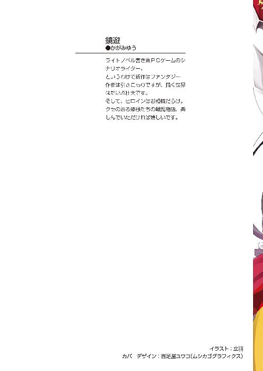
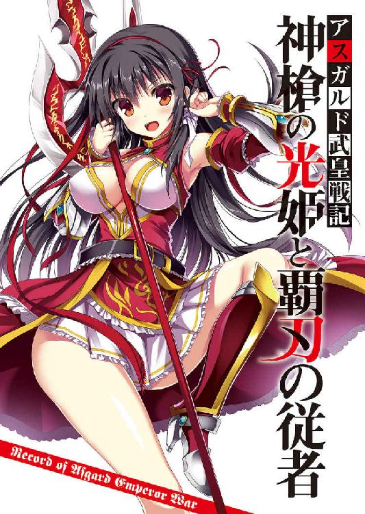
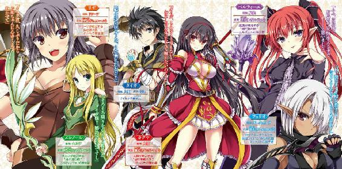
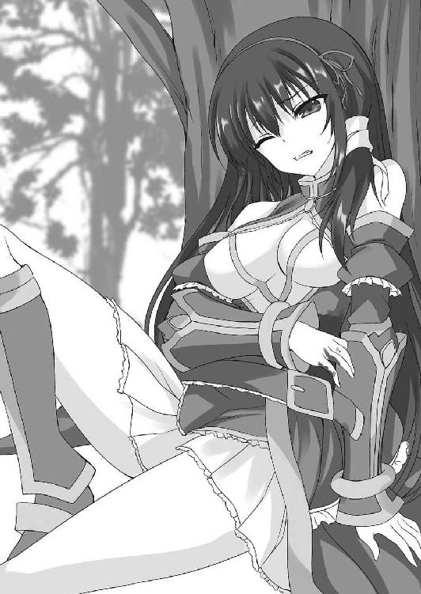
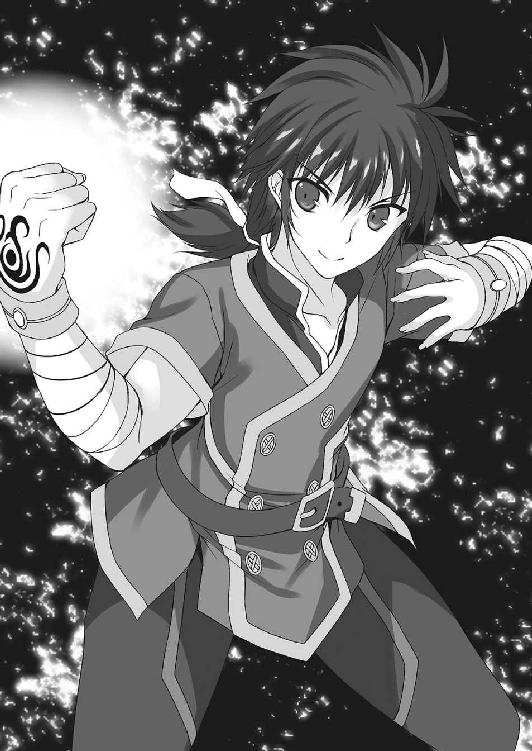
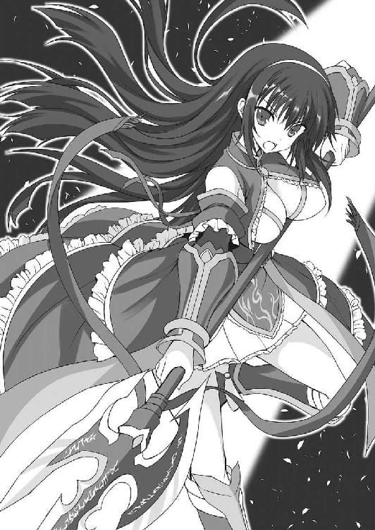
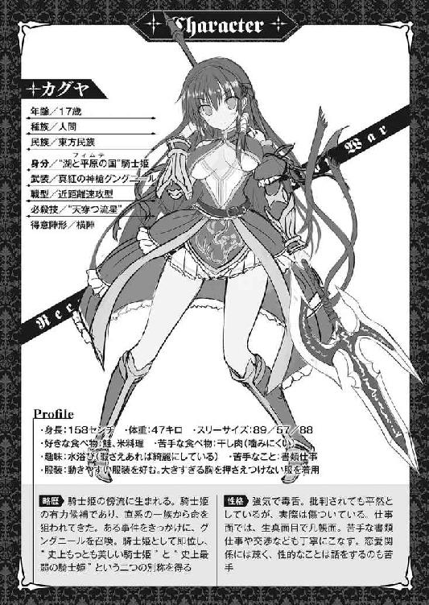
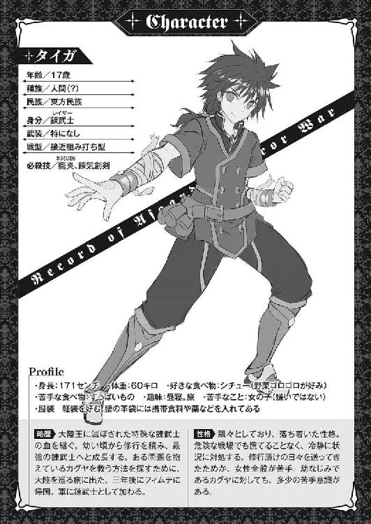

| アスガルド武皇戦記 神槍の光姫と覇刃の従者 (富士見ファンタジア文庫) | |
| 鏡 遊 | |
| (2015) | |



アスガルド武皇戦記
神槍の光姫と覇刃の従者
鏡遊

富士見ファンタジア文庫
本作品の全部または一部を無断で複製、転載、配信、送信したり、ホームページ上に転載することを禁止します。また、本作品の内容を無断で改変、改ざん等を行うことも禁止します。
本作品購入時にご承諾いただいた規約により、有償・無償にかかわらず本作品を第三者に譲渡することはできません。
本作品を示すサムネイルなどのイメージ画像は、再ダウンロード時に予告なく変更される場合があります。
本作品は縦書きでレイアウトされています。
また、ご覧になるリーディングシステムにより、表示の差が認められることがあります。
口絵・本文イラスト 立羽
プロローグ
深い深い森の奥──
樹齢数千年を越える木々が枝葉を広げ、太陽の光を遮っており、あたりは薄暗い。
「あっ......んんっ......ふあ......！」
暗く静かな森に、少女の声が響いている。
木々が密集する森の中で、わずかに開けた場所──
少女は木の根元に背中をもたせかけている。
腰まである、つややかな長い黒髪。美しく整った顔立ち。
赤を基調とした上衣は肩が剝き出しで、身体にぴたりと密着しており、二つの豊かなふくらみの形がよくわかる。
スカートの丈は短く、柔らかそうな太ももがあらわになっている。
「んっ......！」
少女が、びくんと身体を震わせた。
彼女の前には──一人の少年がいる。
同じく黒髪の少年で、黒いシャツとズボンという格好だ。
少年は手を伸ばし、少女の華奢な肩をゆっくりと撫でている。
「姫様」
「そ、その呼び方はやめて......カグヤ、でいいわ......」
黒髪の少女──カグヤは途切れ途切れの声で言った。
カグヤの大きな目は潤み、頰は赤く染まっている。
「じゃあ、カグヤ。いいんだな......？」
「も、もちろんよ。やっていいわ......」
「そ、そうか......」
カグヤのささやくような声に、少年は躊躇しながら頷いた。
少女の肩を撫でる少年の右手の甲に、うっすらと輝く奇妙な紋章が浮かんでいる。
少年はその手を少しずつずらしていき──
「はぅっ......！」
ふにっ、と手が柔らかな胸に触れた。
「............っ」
とたんに、少年はさっと手を引いてしまう。
「......な、なにしてるの？ いいって言ってるでしょ......」
「わ、わかってる」
少年は、あからさまに動揺しつつ、引いた手を再び伸ばしていく。
「ん......」
壊れ物を扱うように、少年は慎重な手つきで少女の胸に触れる。
胸に軽く触れたまま、指先を滑らせていく。
「んんんっ......！」
カグヤは声を押し殺しながら、身体をぶるぶると震わせている。
肩を撫でられただけで敏感に反応していたのだ。誰にも触らせたことのなかったふくらみを優しく愛撫されれば、こうもなるだろう。
少年は、ごくりと唾を吞み込んだ。
未だ彼の顔には、少女に触れることへのためらいがある。
それでも──胸の柔らかさの前には、そんなためらいすら消えてしまう。
「カグヤ......」
少年は少女の胸に触れながら、ゆっくり身体を彼女に近づけた。
足を彼女の太ももの間に割り込ませるようにする。
「ちょっ、あっ......」
カグヤは、抗議するような小さな声を上げた。
少年の手は胸の頂点をすうっと通って、ふくらみを下から持ち上げるようにする。
「ま、待って......そ、そこまで......んんっ......！」
「カ、カグヤ......柔らかいな......」
欲望に動かされながらも、慣れていないせいで、つい乱暴になってしまう。
優しくしたくても、焦ってしまい、胸を触る手に力が入っているのだ。
「すぐ終わるから......少しだけ我慢してくれ」
「ダメっ......我慢、できない......あああっ......！」
カグヤは両手を伸ばし、少年の首に抱きついた。
二人は身体を密着させ、その間も少年の手は豊かなふくらみに触れたまま。
いや、手をぎゅっと押しつけるようにしてその柔らかな感触を味わっている。
「お願い、乱暴にしても、いいから......早く、終わらせて......！」
「......あ、ああ」
少年は再び頷き、強く胸を鷲づかみにする。
カグヤの身体がびくんと跳ね、わずかにのけぞる。
「はぁっ、も、もう......本当に遠慮ないわね......！」
カグヤはぎゅっと少年に抱きつきながら文句を言う。
耳まで真っ赤にして、目を潤ませているが、口元には笑みが浮かんでいる。
少年も胸に触れていないほうの手を少女の背中に回す。
二人の影は一つになり、少女の甘い声だけが響いていく──
１章 最弱の騎士姫
武皇大陸は、混沌の大地である。
全土で精霊力が大きく乱れており、大陸内での気候の変化が激しく、砂漠と雪原が隣接している地域すら存在する。
迷い込めば決して出ることはかなわない魔の森、有毒な瘴気に包まれた険しい山岳地帯、広大な炎の海が広がる焦土──
この異常な大地には、二十種以上の種族が住んでいる。
人間、エルフやドワーフなどの妖精、獣人、魔族、妖魔、魔獣──
そして、それらすべての天敵となりうる──〝亜神〟と呼ばれる怪物たち。
あるとき亜神たちの活性期が始まり、彼らによって大陸全土が蹂躙され、すべての種族は滅亡の危機に瀕した。
混沌から暗黒へと至った時代を終わらせたのが、後に〝大陸王〟と呼ばれた偉大なる戦士である。
いったい彼がどこから現れたのか、何者だったのか、誰も知らない。
容姿は人間のそれだったというが、その力は人間をはるかに超越していたという。
大陸王は複数の種族をまとめて軍を起こし、みずからが先頭に立って亜神との戦いに挑んだ。
戦いは熾烈を極めたが、大陸王は幾多の犠牲の果てに、亜神の王を見事に討ち──
すべての種族を配下に収め、武皇大陸の歴史上初めての統一者となった。
だが大陸王は、早すぎる死を遂げてしまう。
その死についても多くは知られていない。
彼の治世は短命に終わり、大陸は再び混乱へと陥る。
大陸王が築いた巨大国家は、人間・エルフ・ダークエルフ・ドワーフ・魔族の〝五大種族〟が統治する〝五大国〟へと分割され──
それぞれの国の頂点に立ったのが、五人の騎士姫だった。
騎士姫たちはかつて大陸王を守護した騎士であり、その寵愛を受けた姫である。
大陸王から最強の武器を与えられ、彼に次ぐ力を持っている。
その騎士姫たちはそれぞれ〝大陸王の後継者〟として、大陸の覇権をめぐって争うこととなる。
騎士姫たちが統治する五大国の争いは、大陸王の死後、五百年という時を過ぎても終結の兆しすらなく続いている。
そして、当代の騎士姫たち──
人間の騎士姫〝カグヤ〟。
すべてを貫く神の槍〝グングニール〟の使い手にして、〝史上もっとも美しい騎士姫〟と呼ばれる。
エルフの騎士姫〝エレノール〟。
必中の魔弓〝シルヴァーン〟を操る、長い時を生きてきた騎士姫。
ドワーフの騎士姫〝リザ〟。
破壊と再生を司る鉄槌〝ミヨルニル〟を振るう、天才鍛冶師でもある騎士姫。
ダークエルフの騎士姫〝フェリオ〟。
操るのは、その身を花びらのように舞わせる短剣〝ダーインスレイヴ〟。
そして──魔族の騎士姫〝ベルティーユ〟。
あらゆる魔術を息をするかのように容易く発動させる杖〝レヴァンティン〟を持つ彼女は、〝史上最強の騎士姫〟と謳われている。
この五人の騎士姫たちが、五百年の間でもっとも大きな──そして最後の戦乱を引き起こしていくこととなる。
大陸暦五〇一年──
国境地帯の小競り合いに端を発した、二つの大国の戦争が始まっていた。
人間の国家〝湖と平原の国〟。
エルフの国家〝森と風の国〟。
両国の争いは瞬く間に戦線を拡大し、それぞれの総大将である騎士姫も出陣する事態となり──
フィムテの南端、シガヘイル平原でフィムテ軍二万二千、シルフィン・フォウ軍一万五千が対峙し──即座に戦端が開かれた。
フィムテ軍の陣形は、騎兵部隊を先頭にした横陣。まっすぐに前進し、敵軍を押し潰す戦術を展開していく。
シルフィン・フォウ軍は、あえて陣形を整えずに少数の部隊が広範囲に散らばり、各個に動いている。少数精鋭、前線指揮官が高い指揮能力を持つエルフならではの、伝統的な戦術である。
両軍は正面から衝突し、瞬く間に状況は変わっていく。
フィムテの騎兵の突撃は、強力な打撃力でシルフィン・フォウの小部隊を打ち砕きながらも、エルフたちの矢や魔術を受け、その足を止められてしまう。
騎兵による先制に失敗したフィムテは、陣形を崩し、たちまちエルフたちにふところに飛び込まれ、乱戦に持ち込まれた。
その乱戦の最中、両軍の総大将が出会ってしまったが──それは偶然ではない。
大陸での戦争は、〝将をもって将を討つ〟。
国の頂点に立つ総大将であろうとも、みずから武器を振るい、敵将と戦うのだ。
フィムテとシルフィン・フォウ、両軍の戦いは総大将の一騎打ちという次の段階へと進みつつあった。
木々が密集する森の中を、十数名の部隊が進んでいる。
全員が徒歩で、険しい森の木々に阻まれてまともに陣形も組めていない。
最後尾に近いところを、薄茶色の髪を肩まで伸ばした少女が歩いている。その少女──アーシャは周りに聞こえないようにため息をついた。
アーシャは十五歳。フィムテ第一戦士団、近衛部隊の戦士見習いである。
フィムテでは、指揮官かその見習い、あるいは特に実力を認められた者が〝戦士〟の称号を持つ。
アーシャは、まだ見習いの身ではあるが、一般兵士たちより身分は高い。
もっとも、戦士見習いなどは、実戦に出れば古参兵に怒鳴られ、追い回される身分だ。
今回のエルフたちとの戦いが、彼女の初陣でもあった。
フィムテの騎士姫に従い、無我夢中で武器を振り回すことしかできなかった。戦闘の記憶はほとんどないが、おそらく一人の敵兵も倒していない。
正直、腕前に自信はあっただけにアーシャとしては納得のいかない初陣だった。
しかも、最悪なことに──
「............」
アーシャは、ちらりと視線を前に向ける。
そこには、背筋を伸ばして悠然と歩く黒髪の少女がいる。
フィムテの騎士姫、カグヤ──
国の頂点に立ち、人間という種を束ねる存在でもある。
信じがたいほどに美しい少女だ。同性のアーシャでも、思わず見とれてしまう。
美形揃いであるエルフと比べても、カグヤの輝きは決して劣らない。
五大国成立後の五百年、歴史上もっとも美しい騎士姫──彼女をそう評する声は多い。
だが、カグヤへの評価はそれだけではない。
史上最弱の騎士姫──それが、彼女のもう一つの呼び名だ。
アーシャは見習いとはいえ、既に数ヶ月カグヤに仕えている。
主がそう呼ばれていることは知っていたが、実感はなかった。
ただただ、見習いとしての忙しい時間を過ごす中で、美しい黒髪の少女のそばにいられることは大きな喜びだった。
そんなことで喜ぶなんて、私は馬鹿だった──
アーシャは、ぐっと拳を握り締める。
カグヤは確かに美しい。しかし、それだけなのだ。
戦闘の記憶はほとんどないが、一つだけはっきり覚えていることがある。
シガヘイル平原でのフィムテとシルフィン・フォウ両軍の衝突は熾烈を極め、両軍の戦士と兵士──戦兵の命が次々と散っていった。
そして、先頭に立つ二人の騎士姫たちの一騎打ちが始まった。
金色の髪をしたエルフの騎士姫は凄まじい戦闘能力を見せ、終始カグヤを圧倒していた。カグヤは防戦一方で、一度たりともエルフの騎士姫に反撃を加えていなかった。
カグヤが生きてここにいるのは、両軍の別働隊が合流し、周囲もろくに見えないような乱戦になり、一騎打ちがうやむやになってしまったからだ。
あと少し戦いが続いていれば、カグヤは討たれていただろう。見習いにでもわかるほど明らかだった。
結局、近衛部隊がどさくさにまぎれてカグヤを連れて脱出、平原を抜けて森林地帯へと逃げ込んだ。
逃走で疲れ切った馬を捨て、カグヤと近衛部隊の一部は惨めな逃避行をしているというわけだ。
「おい、見習い。ちゃんと周りを見てろ」
「は、はい」
古参の近衛戦士に注意され、アーシャは視線を巡らせて、異常がないか確認する。
「............ちっ」
周りを見ながら、アーシャは小さく舌打ちしてしまう。
こちらはカグヤと、近衛戦士がわずか十数名。それと──役立たずが一人。
隊列の一番後ろを、のんびりした歩調でついてくる男がいる。
年の頃はアーシャと同じか、少し上くらいだろう。黒髪に、黒い瞳。フィムテに多い、東方部族の血を継いでいるようだ。
服装は、黒いシャツに革のズボン。腰にはいくつかの革袋をつけている。
戦場にいるとは思えないような軽装であり、完全な丸腰だった。
黒髪の少年はアーシャの視線に気づくと──なぜか、にっこりと笑った。
「なんでしょう？」
「なんでもない！ 無駄口を利くな！」
アーシャは鋭く言って、少年から視線を外した。
この状況で、あんな役立たずを気にしていても意味はない。
「............」
再び、カグヤをちらりと見た。
気にするならば、主のことだろう。だが、戦場を経験したあとではカグヤに好意を持つのは不可能だった。
たとえ最弱だろうと、アーシャにとってカグヤは仕えるべき主である。それはわかっていても、彼女への反感を抑えきれない。
「んんっ」
前を歩くカグヤが、小さく咳をした。
彼女には病弱だという噂もある。実際、カグヤが自室にこもって一日出てこない、ということが何度かあった。
アーシャやその他数名が戦士見習いに任命された叙任の儀式でも、カグヤは病気を理由に途中で退席した。
そのときは、騎士姫も病気になることくらいあるだろう──とさほど気にしなかったが、その後も数度、カグヤは重要な公式行事を欠席している。
病弱は罪ではない。ただし、戦士ならば話は別だ。
そして、騎士姫となればなおさらだ。弱さは、罪である。
この武皇大陸では、戦士を束ねる者に弱さがあってはいけないのだ。
アーシャも、武皇大陸に生きる戦士として、脆弱な主を許せない理由がある──
「敵襲ーっ！」
近衛隊長の鋭い声が飛んだ。
「全員、武器を召喚しろ！」
アーシャは素早く反応し、右手を前にかざす。
地面に青い光を放つ魔法陣が浮かび──そこから、両刃の長剣が現れる。アーシャは剣の柄を握り、構えを取る。
召喚武装──武皇大陸の大地には、大量の武器が眠っている。
大陸王がどこからか集めていた武器であり、彼の死後にそのすべてが大地へと封印された。封じられた理由については、今もわかっていない。
〝大陸王の遺産〟とも呼ばれるそれらの武器は、この大地に生きる者の強い意志に呼応してその姿を現す。
「くっ......！」
アーシャは剣を鋭く振るい、同時に飛来した矢を十本まとめて払い落とす。
剣は衝撃波を生み、すべての矢が跡形もなく砕け散り、余波でそばの木々がへし折れて吹き飛んでしまう。
召喚武装は──〝神気〟と呼ばれる力を秘めている。
内包する神気の量が多いほど、武器は強力になり、切れ味や耐久性が増す。
さらに、神気は使い手の肉体に流れ込み、身体能力を強化する。
むろんアーシャは剣の鍛錬を積んでいるが、召喚武装による強化と、剣自体が秘めた破壊力のおかげで戦えているのだ。
その高性能と引き替えに、召喚している間は常に体力を消耗する。神気での強化は肉体に大きな負担がかかるのだ。
消耗を避けるため、戦闘時以外は大地に戻しておくのが鉄則である。
「あっちだ！ 弓兵がいる！ いや、向こうにもだ！」
近衛兵の悲鳴のような声が上がった。四方八方から矢が飛んできている。
森はエルフたちの狩り場だ。彼らは森の種族とも呼ばれ、生涯の大半を森の中で過ごす。
さらに、全員が生まれながらの弓の名手でもある。
森の中に影のように潜み、見つけた獲物は木々や地面のかすかな乱れを手がかりに、どこまでも追跡する。
ここはフィムテの森だが、エルフたちにとってどこの森だろうと勝手知ったる場所なのだ。
やむをえなかったとはいえ、カグヤたちが森に逃げ込んだのは自殺行為だった。
カグヤの護衛がアーシャの仕事だが、自分の身を守るので精一杯だった。
だが、一方的に劣勢に追い込まれているのはエルフたちに地の利があるからだけではない。
武皇大陸には、絶対的なルールが存在する──
刃の掟──
武皇大陸には武器が地中に眠っている以外にもう一つ、大きな特徴がある。
大陸では、所有する武器の強さによって身分が決まる。
簡単に言えば、強い武器を持つ者ほど高い身分につけるのだ。
むろん、国の頂点に立つ騎士姫が持つ武器がもっとも強力である。
武器の強弱は内包する神気の量で決まる。
騎士姫が持つ召喚武装ともなれば、並の武器が何百本束になってもかなわないだけの神気を放つ。
むろん、そこまででなくとも、強力な召喚武装は存在する。
召喚武装は強い意志に呼応して現れるのだから、どんな者でも精神を鍛え上げれば強力な武器を手にできる可能性はある。
強力な召喚武装を手に入れれば、昨日までの雑兵が隊長殿になることもできる。
この大陸でものを言うのは血統でも権威でも財力でもなく、武器なのだ。
そして、さらにもう一つ──
頂点に立つ者の武器の強さが、その下につく者たちの武器の強さに影響する。
騎士姫の武器が強いほど、配下の者たちの武器も強化されるのだ。
その二つを合わせて、刃の掟と呼ぶ。
騎士姫であるカグヤが弱ければ、アーシャたちにも影響が出てしまう。
エルフたちに苦戦しているのは、総大将であるカグヤがエルフの姫に劣っているからとも言えるのだ。
だからこそ、武皇大陸の戦士たちは強い者につくことを選ぶ。
もっとも、生まれる国は選べないし、たいていの者は別の国に走るほどの勇気や野心は持ち合わせていない。
アーシャもまた、カグヤに仕える以外に道はなかった──
「ぐああっ！ ちくしょうっ、なんだってこんなことに！」
アーシャのそばにいた近衛兵の太ももに、矢が突き刺さっていた。
近衛部隊の弓兵も反撃しているが、エルフと射ち合いをしてもかなうわけがない。
「うあああっ！」
別の近衛兵から悲鳴が上がった。唸りを上げて飛んできた矢が、彼の左腕を根元近くから切り飛ばしたのだ。普通ではあり得ない、凄まじい威力だった。エルフ側が使っている弓も召喚武装なのだろう。
「あっ！」
アーシャの胸にずきりと痛みが走る。高速で飛んできた矢を刀身で受け止めたとたん、火花が散って刃が欠けてしまったのだ。
召喚武装は、使い手と一心同体。
武器が損傷すれば、使い手にも苦痛となって伝わるのだ。
「くっ......、錬武士！ 来い！」
アーシャが怒鳴ると同時に、木の陰に潜んでいた黒髪の少年が飛び出してくる。
「剣を直せ！ 早くしろ！」
「はい」
少年はアーシャのそばまで来ると、短く答えて頷いた。
彼の右手の甲にはうっすらと魔法陣が見え、それが淡く輝き始めていた。
少年はゆっくりとアーシャの剣に右手を近づけていく。彼の手だけでなく、その周囲までが淡い輝きを放っている。
その輝きは、〝オリハ〟──武皇大陸の大気を漂う金属の小さな粒によるものである。
それは目に見えないほど小さく、生物の体内に入り込んでも悪影響はない。
だが、ごくごく細かな粒でありながら神気を秘めている。
自然界ではオリハの〝吹きだまり〟ができることがあり、鉱石として採掘される。召喚武装もオリハを素材としているのだ。
錬武士は、そのオリハを操る能力を持つ。手の甲に刻んだ魔法陣で空気中のオリハを集め──召喚武装を修復する。
少年の手の淡い輝きが、アーシャの剣の欠損を埋めていく。瞬く間に、欠けた刃が元どおりになる。
アーシャの胸の痛みも消えていく。武器が修復されれば苦痛も消えるのだ。
「修復完了。わかっていると思いますが──」
「......ああ」
アーシャは鷹揚に頷いた。
錬武士による修復は、あくまで一時しのぎだ。オリハは一定時間が経過すれば大気中に散ってしまい、欠損した状態に戻る。
召喚武装を完全修復するには、〝聖錬師〟の技術が必要になる。
大陸王を主神とするカムナル教の神官でもある聖錬師は数が少なく、従軍はしない。
聖錬師になるには長く厳しい修行が必要だが、錬武士はたいした訓練も必要なく技術を手に入れられる。オリハを集める魔法陣を刻むだけでいいのだ。
いくらでも替えがきくからこそ、戦場で使い潰しても問題ない。
彼らは武器を破損した兵士のもとへ素早く駆けつけるために、一切武装していない。ナイフ一本すら持っていないのだ。
駆けつける途中で死ぬこともよくあるが、誰も気にしない。戦士から見れば、戦闘能力を持たない錬武士など、武器の修復時以外は物陰に潜んでいる臆病者であり、軽蔑の対象なのだ。
「ん？」
ふと、アーシャは妙なことに気づいた。
通常、錬武士がオリハを集める魔法陣は、右手にしか刻まれていない。しかし、この黒髪の錬武士は左手にも魔法陣がある。錬武士は何人か見てきたが、両手に魔法陣を刻んだ者など他に知らない。
「戦士殿。どうやらまずいようですよ」
「なにが──」
と錬武士に答えかけて、アーシャははっとする。既に近衛兵の半分以上が地面に倒れている。息絶えた者も何人かいるようだ。
全員が召喚武装の持ち主である近衛兵があっという間に──！
「このまま戦っても力を削がれるばかりです。森は奴らのナワバリなんですから」
「わかったようなことを言うな！ 迂闊に逃げ出せば、背後から矢で射られるだけだ！」
アーシャが怒鳴ったそのとき──
ザザッ、と木の葉を揺らす音が聞こえ、複数の影が降ってきた。
「エルフ──！」
アーシャは剣を構え直す。
数人のエルフたちが枝を伝って接近してきていたらしい。全員が細身の剣を握っている。矢の雨で注意を引きつけておいて、最後は接近して確実にトドメを刺す。当たり前すぎる戦術だが、効果的だ。
しかし──
「神槍グングニールよ、我が血と盟約に従い、その力を解き放て！ 奔れ、赤の雷光！」
透き通った声が、森に響いた。
数人のエルフたちが着地すると同時に、カグヤが手にした槍を振るったのだ。槍は穂先から真紅の光を放ち、一撃でエルフたちを薙ぎ払う。
さらに周囲の太い木々がまとめて数本吹き飛び、地面がめくれて土煙が上がる。
「上から降ってくるなんて、無礼ね。森の種族というのは、森で獣に育てられた野蛮人のことなの？」
カグヤは、倒れたエルフたちに槍の穂先を突きつける。
グングニール──それがカグヤが持つ真紅の槍の名だ。
むろん、召喚武装である。一瞬のうちに召喚したのだろう。
騎士姫の武器は〝大陸王の武具〟と呼ばれ、一振りで一軍をも撃破すると言われている。
召喚武装は、オリハを主とした鉱物でつくられているが、他の金属も含まれる。
唯一、大陸王の武具だけは純粋なオリハ──〝オリハルコン〟と呼ばれる金属でつくられているのだ。
グングニールには、柄に赤い光の線が浮き上がり、穂先には魔法陣が輝いている。
大陸王の武具に込められた強大な神気を制御するための術式が施されているのだ。
先のカグヤとエルフの騎士姫の一騎打ちも、周囲に甚大な被害を与えつつ、地形を変えるほどの激戦となっていた。
最弱と呼ばれるカグヤでも、それだけの力を発揮できるのだ。エルフ数人の奇襲部隊など、ものの数ではない。
「揃って一撃でおしまい？ 騎士姫の命を狙うなら、もっと根性を見せてほしいものね。死んだくらいで任務を投げ出すなんて、エルフはその程度？」
言いたい放題だった。そういえば、とアーシャは思い出した。カグヤは首都の王宮ではほとんど口を開かないが、毒舌で知られている。
そういうところが、臣下に反感を買う理由でもあるのだが。
「姫様、今なら逃げられます！ 話している場合ではありません！」
近衛隊長が悲鳴のような声を上げた。
土煙が上がり、視界を遮っている。エルフたちもこれなら狙いをつけられないだろう。
「そうね。全員撤退といきましょう。わたしについてきなさい！」
カグヤが透き通った声で命令を発した。
アーシャはカグヤのほうへ向かって駆け出す。
走りながら、ふと気づいた。すぐ後ろをさっきの錬武士がついてきている。
彼は──あれだけの矢が降り注いだというのに、かすり傷一つ負っていない。丸腰でどうやって防いだのだろうか。
「............っ！」
アーシャの頰のそばを、矢が勢いよくかすめていった。今は余計なことを考えている場合ではない。
はぐれないように、カグヤについていかなければ──
少年は屈み込んで小川に両手をつっこみ、ばしゃりと顔を洗った。
火照った顔に冷たい水が気持ちいい。
「ふう......」
息をついてから、手の甲でぐいっと顔をぬぐった。
錬武士の少年──タイガは川岸に座り込んで、革袋に水を汲み始めた。
持ってきた革袋は全部で七つ。カグヤの部隊の生き残りの数だ。
エルフの弓兵からは逃げ切ったものの、近衛部隊の戦力は崩壊している。
のんきに水汲みなどしている場合ではないが、それは近衛隊長の命令だった。軍で最底辺の立場である錬武士は逆らえない。
とにかく、本隊との合流を急ぐべきだ。どんな評価をされていようと、騎士姫は国の柱なのだ。彼女が討たれれば、フィムテは負ける。
「と、俺が言っても無駄だしなあ」
タイガは、頭をかいた。ぼさぼさの黒髪は長く伸ばしていて、後ろで結んでいる。
彼は、近衛部隊所属ではない。
錬武士は戦闘のたびに適当な部隊に割り振られるだけで、特定の部隊に所属していないのだ。タイガは乱戦の中で、どさくさまぎれに近衛部隊に合流したというだけだ。
不意に、ガサガサと茂みが揺れ、タイガはゆっくりと振り返った。
「なにをサボってるんだ、錬武士。水汲みが終わったのなら、さっさと戻ってきなさい」
「......すみません」
タイガは跪きながら言う。現れたのは、さっきの戦士見習いのアーシャだ。そして、その後ろに──騎士姫カグヤもいる。
「おまえは戻ってろ。姫様、どうぞ」
「いえ、錬武士もここにいて。見張りに立ちなさい」
カグヤはそう言うと、川岸まで歩いてきて、しゃがみ込んだ。
かと思うと、いきなり上衣の前をはだけた。大きな二つのふくらみがぷるんと揺れ、ほとんど半分あらわになる。
「なっ!? 姫様、なにを！ 錬武士もいるんですよ！」
「わたしじゃなくて周りを見てなさい」
カグヤは布を水に浸して、身体を拭き始める。どうやら彼女は汚れた身体を清めたいようだ。
「なにを見てるんだ、錬武士！ 見張ってろ！」
タイガは丁重に返事して、カグヤに背中を向け、数歩離れた。一瞬だけ見えた真っ白な肌と胸のふくらみが目に焼きついているが、なんとか平静を保っている。
「そうカリカリしないで。勝手に脱いだのはわたしよ。錬武士に罪はないわ」
「で、ですが、姫様。あなたは騎士姫なのですから、みだりに肌を見せたりは──」
「騎士姫だからこそよ。アーシャ、だったわよね？ 忘れないで、騎士姫は武器なのよ。武器が己の姿を見せることを恥じないでしょう？」
「そ、それは......」
アーシャは言葉に詰まった。
本来、騎士姫は大陸王の騎士であり姫であり、そして──武器だったとも言われている。
大陸の住民はその話を知っているが、理解はしていない。騎士姫だろうと、生き物だ。武器であるはずがない。
まれに魔術で不死の怪物に変化する人間などもいるが、そういう話とも違うようだ。
もし本当に騎士姫が生物ではなく武器だとしたら、羞恥心などないだろうが。
「見張りは一人で充分よ。アーシャも身体を拭いておいたら？」
「そ、そんなわけには参りません！ 差し出口を利くようですが、こんなときに汚れをお気になさらなくても......」
「騎士姫が薄汚れた格好をしていては、士気に関わるわ。馬鹿馬鹿しく見えるでしょうけど、美しくあることも騎士姫の役目なのよ」
ぱしゃ、ぱしゃ、と水音が聞こえてくる。タイガは周囲を確認しながら、なんとなく二人の話を聞いている。
「近衛で女戦士はあなただけよ。他の兵たちもあなたが綺麗にしていれば嬉しいでしょう。よし、わたしが拭いてあげる」
「ちょっ、姫様......！ ど、どこに触って......！」
「なんだ、意外と胸あるわね。わたしには及ばないけど」
「ま、待ってくださ......ああんっ！」
「............」
タイガは、意外な戦いを強いられることとなった。背後を振り返りたいという誘惑に、どうやったら勝てるのか。
何度も水音が響き、アーシャの悲鳴も聞こえてくる。
「むう......男を知らないくせに、妙にいやらしい身体をしてるわね、あなた」
「い、いやらし......いえ、なぜ私の、その......そんなことを！」
「近衛の戦士は経歴を調べてあるわ。当たり前でしょう。綿密な調査の結果、あなたは間違いなく乙女だと判明しているわ」
「そ、そんなことはどうでもいいんです！ それより、お戯れはもう──！」
「女同士というのも、試してみれば癖になるそうよ。どう？」
「どうもいたしません！」
どう考えてもカグヤはからかっているだけだが、アーシャは全力で否定している。
タイガはため息をついた。乙女同士の戯れを聞くのは楽しいが、ただ聞かされているだけでは生殺しだ。
「ふふ、わたしと閨をともにすれば、出世も早いかもしれないわよ」
「私は戦士として生きるんですよ！」
「はは、潔癖ね。でも、そのほうが面白いわ。もう少し身体で楽しませて──ん？」
ふと、カグヤが妙な声を出した。
ぞくり、とタイガの肌が粟立ち、彼は素早く振り向いた。
「錬武士、なにをしてる!? 見るな！」
「黙ってろ！」
タイガは鋭く言って、小川のほうへ駆け寄っていく。
服装を乱しているカグヤとアーシャに目もくれない。それよりも、見るべきものがあった。
小川の水が──高く盛り上がっている。
まるで水柱が固定されたかのようだ。
「水の精霊......！」
カグヤの声と同時に、いくつもの透き通った青色の光が水上をふわふわと舞い始めた。
エルフには、弓の他にもう一つの生まれ持った特技がある。
精霊魔術──地水火風をはじめとする自然に宿る精霊を操る術だ。特にエルフは、水と風の魔術に通じている。
弓矢と精霊魔術──数で大きく勝るフィムテ軍がシルフィン・フォウ軍を撃破できなかったのは、刃の掟だけでなく、この二つの要素も大きく影響している。
ドオッと轟音を立てて水柱がふくれ上がった。そのまま太い水柱が一気に伸びてカグヤに直撃した。大量の水が高速で衝突すれば、骨をも砕く威力となる。
「くっ！」
それでもカグヤは、さすがに騎士姫だ。とっさに両腕を交差させて防御していた。そのまま吹き飛ばされ、近くにあった大木に背中を打ちつける。
「あんたは姫様を！ 俺は──」
タイガはアーシャに指示して、足下に落ちていた石を二つ、片手で拾い上げた。右手の甲の魔法陣がわずかに光る。
石をぐっと握りながらタイガは視線を巡らせる。絶対にあるはずだ。茂みの動き、不自然な影、それとも──
「............！」
タイガが手首を素早くひらめかせた。二つの石が連続して彼の手から放たれる。
石が飛んでいき、二十スナ（約二十メートル）離れた茂みの中に消えたのと同時に、続けて悲鳴が聞こえた。
さらに、水上を舞っていた水の精霊たちが薄らいでいき、すぐに消滅した。
「ふう......エルフって連中はこらえ性がないな。せっかく美人二人が水浴びしてるっていうのに、待ちきれずに襲うなんて」
軽口を叩きながら、もう一つ石を拾おうとして、タイガはその手を止めた。
「錬武士、やったの？」
「オリハで石の硬度を上げてぶつけただけですけどね。錬武士の隠し技ですよ。なにせ、我らは丸腰なので。こういう技が必要になるんです」
カグヤの質問に、タイガは答えた。
石は戦場では有効な武器だ。オリハで硬度を上げれば、威力は充分にある。直撃すれば、命はないだろう。
どうやら、精霊魔術の使い手は二人だけらしい。意外に少ない。エルフの追っ手たちも森の中で散らばっているのだろうか。
「ま、とりあえず......姫様と戦士殿は服を直されては？」
「ん？」
「あ............きゃあーっ！」
カグヤはきょとんとし、アーシャが悲鳴を上げた。
二人とも服が乱れ、肩や胸が剝き出しになったままだった。
タイガは二人から目を逸らしつつ──
もう、さっきのような戯れをしている余裕はない、ということを確信する。
追っ手はすぐそこまで迫っているのだ。
小川での襲撃から半刻（一時間）が過ぎている。
まだ、カグヤとその部下たちは森の中をさまよっていた。
カグヤに従う部下は、もうアーシャとタイガだけになっていた。
カグヤが小川で襲撃された際に、近衛部隊も別の部隊に襲われていたのだ。
隊長を含む近衛部隊は全員、風の精霊魔法で肉体をずたずたに引き裂かれて死んでいた。
カグヤたちは即座にその場を離れ、また逃避行を続けているところだ。
先頭をアーシャが進み、カグヤ、タイガの順番で進んでいる。
「絶対に、おかしい......」
アーシャが、ぼそりとつぶやいた。
タイガはそれを聞きつけて、なにか答えようかと思ったが口を開かなかった。
アーシャは、小川でタイガに偉そうに指図された上に、肌を見られたことを恨んでいる。下手なことを言えば、余計に憎まれるだけだ。
「どうかしたの、アーシャ？」
「あ、いえ......いくらなんでも友軍との合流に時間がかかりすぎているような気が......いえ、ただのカンですが......」
「あなたのカンは正しいわ」
カグヤははっきりと認めた。
「多くの友軍がこの森に逃げ込んだはずよ。森が広くても、これだけ歩いてまったく味方を見かけないのはおかしい。この際、死体でもいいから見たい気分ね」
カグヤの口調は平坦で、冗談なのかわからない。
アーシャも迷ったようだが、結局笑わなかった。
「錬武士、あなたは実戦経験は充分にあるようね。さっきも落ち着いていたし。あなたは、この状況をどう思う？ 礼儀は気にしなくていいわ、好きに話して」
「では、お言葉に甘えて」
タイガは、にやりと笑う。
アーシャは険しい目を向けてきているが、彼は意に介さなかった。
「戦場が混乱しすぎています。俺たちが森に逃げ込む前からです。そもそも、姫様とエルフの騎士姫の一騎打ちに別働隊が乱入してうやむやになりましたが、あの部隊もあんな位置にいるのがおかしい」
「貴様はいつから軍師になったんだ。各部隊の動きなんて把握してないだろう」
「アーシャ、いいから言わせてやって」
カグヤは淡々と言って、アーシャを制する。
「俺は錬武士です。戦場を走り回って武器を直すのが仕事ですから、部隊の移動は把握してますよ。でも......今回の戦いは不自然な動きが多すぎる。まるで、なにかに追い立てられているような」
「なにか、ってなに？ 魔獣とか？」
カグヤが短く訊いてくる。
魔獣とは、大陸全土に生息する凶暴な獣たちのことだ。大型の魔獣ともなれば、軍を出動させて討伐にあたることもある。
「追われた部隊にもわかっていないでしょう。今のところ、知るすべはありません。ただ、我々も追われる立場です。上手くいけば、俺たちもそのなにかに追われることになります」
「そのときが好機、と言いたいの？」
「恐ろしいのは、〝わからないこと〟です。正体さえわかれば、対策も立てられるでしょう。全力で逃げたっていい」
「でも、すべては推測でしょう。我が軍はエルフたちに追い立てられているだけかもしれない。エルフに狩られるのを待つだけなら──」
「そのエルフたちも少なすぎます」
タイガはさっき気づいたことを口にする。
「森は彼らのナワバリです。なのに、まだ彼らの部隊が俺たちを捕捉しきれていない」
「なに言ってるんだ。さっきから何度も攻撃されてるだろう！」
「いくらエルフが少数部隊が基本と言っても、少なすぎます。おそらく、連中は斥候かはぐれた部隊だったのでしょう。どちらにせよ、本隊と連絡が取れないからこそ少人数で攻撃を仕掛けてきたんですよ」
タイガは、アーシャに答えた。
「追われているのは我々だけじゃない、か......」
カグヤは形のいいアゴに手を当てて、考え込み始める。
タイガも説明したことが推測でしかないとわかっている。だが、戦場では理屈など通用しない。少年が読む軍記物語のように、敵が都合よく動いてくれるわけではないのだ。
「推測ではありますが、そろそろ状況も変わりそうです。姫様、あれを」
「なに？」
タイガは足を止め、密集した木々と茂みの先を指差した。そこには──
森が終わり、開けた平原が広がっている。
そして、遠くから汽笛の音が響いてきた。
武皇大陸には、全土を巡る鉄道網が敷かれている。
五大国の首都、さらに二十六の大都市を繫いでおり、汽車が人や物資を運んでいるのだ。
二十六の大都市には〝軌道駅〟という巨大な駅があり、そこを〝城将〟と呼ばれる騎士姫に次ぐ力を持った戦士が統治している。
鉄道網は五百年前、大陸王の時代に築かれた。
汽車は大気中のオリハを集めて吸収し、それを燃料として走っている──らしい。
確たることが言えないのは、汽車の機関については構造が解明されていないからだ。車体の外装や、駆動系の整備は可能だが、優秀な技術者でも機関には手を出せない。
だが、鉄道は大陸に不可欠である。
もし鉄道が失われれば、各国の経済は大打撃を受け、国の根幹を揺るがし、少なからぬ死者を出すこととなるだろう。
よって、鉄道は絶対不可侵の存在となっている。どの国も例外ではない。
汽車本体はもちろん、線路も傷をつければ例外なしに死罪となる。戦争でも鉄道の破壊は最大の禁忌なのだ。
自国内であれば、軍隊の輸送も鉄道で行うことが可能だ。他国の侵攻に鉄道で即座に対応して防衛に成功した例も多い。
あらゆる意味で、鉄道は大陸では最重要の施設と言える。
「姫様、もし線路を破壊したら、たとえ戦に勝っても姫様の名は地に落ちます。急いでここを離れ──姫様？」
アーシャが不思議そうに言い、タイガも異常に気づいた。
カグヤはアーシャの言葉など聞こえていないかのように、ぼんやりしている。
「姫様、どうかされたんですか？」
「え？ あ、いえ。えーと......そうね、どうせ道も見失っていたのよ。位置を確認してからでも離れるのは遅くないでしょう」
カグヤは、少し慌てて言った。
「それはそうですが......」
アーシャは、やや戸惑っているようだ。
タイガは、カグヤの様子をじっと見つめる。特に変わったところはない。まさか、森を抜けた程度で気が抜けたわけではないだろうが......。
「じゃあ、行きましょう。警戒は怠らないように」
カグヤはそう言うと、歩き出した。その足取りも確かだった。
気にしすぎか──タイガはカグヤの後を追い、アーシャもついてくる。
騎士姫の言うとおり、今慌てて線路を離れるのは、得策ではない。
鉄道網は、言うまでもなく道標にもなる。線路をたどっていけば、いずれどこかの都市にたどり着く。
もっとも、森の近くに都市がないことも知っている。線路をたどって、現在位置を確認し、本隊との合流を目指さなければならない。
「錬武士、あれを見て！」
「............っ！」
突然、カグヤが小さく叫んだ。
すぐにタイガも異常に気づいた。線路を枕にするようにして、一人の兵士が横たわっている。
人間の兵士だった。頭から血を流し、なかば砕けた甲冑を身につけている。
「あ、うう......み、味方か......？」
兵士はあえぎながら、弱々しく言った。どうやら、目がよく見えていないようだ。
「ああ、フィムテ兵だ。どうした、なにがあった？」
タイガは屈み込み、兵士の傷を調べる。頭からの出血は激しく、枕にしている線路の下に血だまりができていた。
この出血では助からない──タイガは判断を下した。
「全身鎧、が......」
「全身鎧？」
タイガは思わず聞き返した。
全身鎧は、その名のとおり全身を覆う鎧のことだ。防御力は高いが、機動性に欠ける。
エルフの矢には通じないことも多く、今回の戦では着用している部隊はないはずだ。
「突然、全身鎧の者が......部隊の背後をついて、現れた......奴は、紙でもちぎるみたいに素手で、仲間たちを......三十人を、一瞬で......」
「そいつは一人だけか？ どこに行ったかわかるか？」
「わからない......逃げるのに、夢中で......」
そうだろう、とタイガは頷く。今の彼では、汽車が来ても逃げられないだろう。彼の頭はろくに回っていない。状況説明ができただけでも奇跡だ。
「ただ、奴は......エルフたちも......見境なく......殺して、た......」
「エルフも......？ おい、それはどういう......」
タイガの問いかけに、彼は答えなかった。
大きく息を吐き出すと、そのまま二度と動かなくなった。話したことで、最後の生命力を使い果たしてしまったらしい......。
「よく......話してくれたわね」
カグヤが屈み込み、倒れた兵士の目を閉じさせてやった。
「......本当に、なにかがいるようね。行くわよ、二人とも。こうなったら、いつまでもわたしが孤立しているわけにはいかないわ。すぐに本隊をまとめ直さなければ」
カグヤは立ち上がると、さっさと歩き出した。
タイガは兵士を線路のそばから移動させてやる。このままでは彼の遺体が傷つくだけでなく、脱線の危険もある。
「ですが、姫様。もし、その全身鎧と遭遇したら......」
「アーシャは心配性ね。わたしは騎士姫よ。同じ騎士姫以外におくれは取らな──」
ふらり、と不意にカグヤがよろめいた。
そのときには、タイガは走り出していた。カグヤの肩と腰を摑んで支える。
「............！」
タイガは、彼女の腰を摑んだ手を見て、はっとなった。
手が血に濡れていた。カグヤの脇腹から、ぼたぼたと血がこぼれ落ちている。
彼女は、既に意識を失っていた──
アーシャにとって、シガヘイル平原での戦闘が初陣であり──
騎士姫の力を目にしたのも初めてだった。
刃の掟の頂点に立つ、最強の戦士たち。
この世に貫けないものはない槍、〝グングニール〟を操るカグヤ。
どんな遠距離からでも百発百中の魔弓──〝シルヴァーン〟の使い手である、エルフの騎士姫、エレノール。
どちらの武器も一撃必殺の威力を誇っている。
グングニールは大地を穿ち、シルヴァーンは風をまとって飛び、周囲も容赦なく巻き込み、破壊の限りを尽くしていた。
騎士姫同士の戦いは天地を揺るがし──まるで天災そのものだった。
両軍の近衛部隊は騎士姫の力を知っているため、彼女たちの武器から見事に逃れていたが、アーシャのような半人前にはたまったものではなかった。
特に、エルフの騎士姫エレノール──
美形が多いエルフの中でも、彼女の美貌はずば抜けていた。
絹糸のような金色の髪に、草色の服から覗く真っ白な肌。弓矢を放つときの、あまりに優美な動作。
アーシャは、敵の総大将であるのに、エレノールの戦いぶりに目を奪われてしまった。
それに比べて、カグヤは──
エレノールの矢を防ぐので精一杯で、槍の間合いに入ることすらできていなかった。
何度もシルヴァーンの衝撃波で吹き飛ばされ、なんとか立ち上がりながらも、エレノールの服を汚すことすらできないまま、戦場の混乱で二人の一騎打ちは終わりを迎えた。
だが──
「姫様！ 姫様っ！」
カグヤとエレノールの一騎打ちを思い出しながら、アーシャは叫んでいた。
直撃はしなくても、カグヤはシルヴァーンの余波を何度もくらったのだ。それで何事もなかったように逃避行を続けていたのがおかしかった。
水辺ではアーシャをからかう余裕も見せていたが、本当はあのときも耐えがたい苦痛に襲われていたのではないか。
そんなことにも気づかなかったとは──アーシャは、ぎりっと歯嚙みする。
「騒ぐな。騒いだって、姫様の傷は治らない」
タイガは落ち着いた口調で言い放った。
近衛戦士への口の利き方ではなかったが、アーシャは気にならなかった。
タイガとアーシャの前に、カグヤが横たわっている。意識は戻っていない。
三人は線路から離れ、再び森の中に戻っていた。味方との合流よりも、敵から隠れるほうを選んだのだ。
森はエルフたちの狩り場だが、開けた場所にいるよりは見つかる可能性は低い。タイガたちは、木々が密集した場所を見つけ、そこに潜んでいる。
「出血がひどいな。よくこの傷を隠し通したもんだ。騎士姫だって、痛いもんは痛いだろうに」
タイガは呆れたように言った。
確かに、カグヤの左脇腹は血で真っ赤に染まっている。間違いなく、エレノールの攻撃で受けた傷だろう。いつの間にか、カグヤは傷口に布をあて、出血を押さえつつ隠していたようだ。
かなりの苦痛があったはずだが、それを隠していたのは騎士姫の誇りゆえだろうか。
「ナイフを。ご存じのとおり、俺は丸腰なんだ」
「あ、ああ......」
アーシャは慌てながら、腰のナイフを引き抜いてタイガに渡した。
タイガは手際よくカグヤの服を切り、傷口にあてられていた布を交換する。布を外したときに、大きな深い傷が見えた。
「錬武士、おまえ治療できるのか？」
「専門は武器の修理だ。こんな柔らかいものの治し方は習ってない」
「............」
タイガの減らず口にも、アーシャは文句を言わなかった。ここは、戦場での経験が豊富な彼に任せるしかない。
「......知って、いるはずよ」
「姫様！」
カグヤが突然身を起こし、アーシャはその肩を支えた。
「無茶をしないでください、姫様！ 今、起き上がっては──」
「アーシャ、あなたは少し騒がしいわね。王宮に戻れば最後までわたしに付き従った戦士として見習いは卒業よ。威厳が必要になるわ」

「笑っている場合ではありません！」
カグヤは口元に笑みを浮かべていた。顔色は真っ青で、完全に血の気が引いている。
「そうね、無駄話をしている暇はないわ──タイガ」
カグヤがちらりと視線を向けると、タイガは迷ったような表情で小さく首を傾げた。
アーシャは、きょとんとしてしまう。
まるで二人が、言葉もなく意思を交わしたかのような──
「姫様、いったい......？」
「もう、ここにいるのはアーシャだけよ。彼女なら、秘密は守ってくれるでしょう。どんなに嫌っていても、わたしは騎士姫──主なんだから」
「............わ、私は」
アーシャは、開きかけた口をつぐんだ。
カグヤに反感を持っていることがバレていても、驚くことではない。カグヤは多くの配下に嫌われているし、それに気づかないほど彼女は鈍感ではないだろう。
「アーシャ、これからなにが起きても黙って見ているように。他言も禁止よ」
「は、はい......」
意味はよくわからないが、カグヤの命令ならば従うしかない。
「タイガ──」
カグヤはアーシャから離れると、近くの木に背中をもたせかけた。
「タイガ、やって」
「......本気かよ、姫様」
「なっ......!? き、貴様、な、なななななにを......！」
アーシャは、黙ってなどいられなかった。自分はともかく、騎士姫にぞんざいな口を利くなど、近衛戦士として許せることではない。
「黙ってろって言われただろ。それより──カグヤ、もしかしてあれのことか？」
「わたしより、あなたのほうがよくわかってるはずよ。さっさとやって」
「なんて偉そうな......」
「残念ながら、今はわたしのほうが偉いのよ。従わないと首が飛ぶわ」
カグヤは、にやりと笑って言った。
「はぁ......本当、一番厄介な奴が一番偉くなるとはな」
タイガは頷き、ゆっくり歩いて彼女の前に立つ。
アーシャは、ますます頭が混乱してしまう。
「そうね、これくらいは教えておきましょう。アーシャ、わたしとこの錬武士──タイガは、幼なじみなの」
「お、幼なじみ......!?」
アーシャは、ぽかんとしてしまう。
「幼なじみというのは、要するに子供の頃からの付き合い......ということでしょうか？」
「あなたとわたしの里は、同じ言語を共有しているようね。そのとおりよ」
カグヤは、まだ笑ったままだった。
考えるまでもなく、アーシャの質問は当然すぎて馬鹿げていた。
しかし、こんな話を聞かされて動揺しないはずがない。
騎士姫と錬武士は身分が大きくかけ離れている。本来、言葉を交わすことすらできないほどに。
その二人が、幼なじみ──親密な関係など、にわかには信じられない。
「さあ、始めて、タイガ......」
カグヤはそっとタイガの手を取ると。
その手を自分の胸へと押しつけた。
「ふあっ............」
カグヤの喉からせつない声が漏れる。
アーシャは混乱したまま、ただ命じられたとおり黙っていることしかできなかった。
大陸王に仕えた五人の騎士姫。
その五人の血統を受け継ぐ者だけが、大陸王の武具を召喚し、その使い手となることができる。
召喚武装は、強い意志に呼応して姿を現す。
だが、唯一の例外が大陸王の武具であり、騎士姫の血筋を受け継ぐ者以外は使い手になれないのだ。
いずれの騎士姫も五百年の間に血は分かれ、多くの傍流を生んでいる。
人間の騎士姫もまた、同じである。
カグヤは、傍流の傍流、さらにいくつにも分かれた血筋の生まれだ。
騎士姫の子孫たちは、血が薄い者たちも含めて全員厳重に管理されている。
フィムテの騎士姫は直系の血筋が残っており、大陸王の武具を継承してきた。
だが、ここ数年は直系でも大陸王の武具を召喚できる者が現れず──
新たな騎士姫を生み出すために、傍流の者たちにも厳しい修行が課せられ、カグヤもまた例外ではなかった。
物心ついた頃から血の滲むような鍛錬を積み、ひたすらに腕を磨くだけの毎日を送ってきたのだ。
タイガがカグヤと出会ったのは、まだ彼女が幼かった頃。
彼女は、修行の意味すら理解していないような年頃だった。
濡れたような黒髪と、大きな瞳を持つ美しい少女。
タイガは、一目で彼女に目を奪われた。
二人ともまだ子供だったが、似たような環境にあったためか、すぐに打ち解け、親しく言葉を交わすようになった。
タイガもまた、錬武士として修行を重ねる日々を送っていたのだ。
錬武士は基本的に、武芸の力量が足りず、戦士にも兵士にもなれない者が選ぶ職業である。なりたくてなる者など皆無に近い。
だが、タイガは極めて稀な錬武士の家系の出身だった。
なぜ、彼の家系だけが特別なのか──幼い頃からの付き合いであるカグヤはそれを知っている。
そして、タイガの一族に伝わる、錬武士の技のことも──
「は、早くやって......時間がない、から......」
カグヤは震える声で言った。
頰を真っ赤に染め、耳まで赤くなっている。
声が震えているのは、負傷の苦痛のせいだけではないらしい。
「わかってるが......本当に、いいんだな？」
「......ええ」
カグヤは、こくりと頷いた。
タイガはちらりと横目でアーシャのほうを見た。彼女は言われたとおり、黙っていることにしたらしい。
彼女のことは、気にしなくていいようだが──
「言っておくが......俺も初めてだぞ」
「......わたしもよ。初めてだから......タイガが好きにして、いいわ......」
カグヤは弱々しく言って、うつむいた。
ためらっていては、カグヤの血と体力が失われるばかりだ。
タイガはゆっくりと、カグヤの左脇腹に手を伸ばし──
「あっ............」
脇腹に触れられると、カグヤはびくんと反応した。
タイガの右手の甲が淡く輝き、その手が傷口を撫でていく。
「あ、ふ......ああっ......」
カグヤはびくびくと反応し──タイガの手が動くたびに、傷口が塞がっていく。
オリハは、古い言葉で〝生命の風〟を意味するという。
ごくごく微小な金属のかけらでありつつ、粒の一つ一つが生きているのだ。
金属でありながら、生命を持っている。
それが、武皇大陸の大気を漂うオリハという金属なのだ。
大気中のオリハをかき集めることで、召喚武装を修復することができる。
そして、かつて錬武士にはオリハを用いて生物の修復も可能とする技術が存在した。
既に失われて久しい──いや、錬武士の大半がそんな技術が存在していたことすら知らないだろう。
しかし、タイガは知っている。そして、身につけている。
「こ、これが......〝研ぎ〟なのね......」
「ああ......」
タイガは、小さく頷いた。
身につけてはいても、使うのは初めてだ。もちろん、カグヤも受けたことはないだろう。
「くっ、う、うんっ......んんっ......！」
何度もタイガに傷を撫でられ、カグヤが妙な声を漏らす。
タイガは少しずつ、傷が埋まっていく手応えを感じていた。
錬武士の修復技術とはオリハを集めて傷口に塗り込むことで、組織を修復するのだ。
オリハは固着して傷を塞ぐ。体内に入ったオリハは、臓器や血管をも治してしまう。
もちろん武器の修復と同じく一時的なものだが、金属の武器と異なり、肉体には回復能力がある。オリハは体内の生命力を刺激し、再生を促進するのだ。
「タイガ......そこだけじゃ、ない。全身が、あのエルフのせいで......だから......」
「ぜ、全身......？」
カグヤの左脇腹の傷は出血が止まり、塞がりつつある。
だが、エルフの騎士姫の攻撃は、カグヤの全身に損傷を与えていたらしい。
「全身って、つまり隅から隅まで......か？」
「あ、当たり前でしょ。二度も言わせない......で......」
「わ、悪い......」
ケガの治療なのだから、と自分に言い聞かせてはいても、全身くまなく──などと言われると平常心ではいられない。
「タイガ......騎士姫のわたしに、偉そうな口をきけるくせに......こんなときだけ、ためらわないでよ......」
「これはこれ、なんだよ......」
タイガはカグヤから目を逸らしつつ言った。
彼女が言ったとおり、幼なじみの間柄。彼女のことはよく知っている。
しかし、こんな柔らかな身体の感触のことまでは知らない。
「わ、わたしだって恥ずかしいけど......仕方ないでしょ！ こんなことでもないと、わたしの身体になんて触れないわよ！ 幸運だと思ってさっさと覚悟を決めなさい！」
「お、おい......！」
タイガは慌ててしまう。
一瞬忘れそうになっていたが、彼女はひどいケガを負っているのだ。
そんな彼女に大声を出させてしまったのは、タイガだ。
照れている場合ではない。そのことをあらためて覚悟しつつ。
「わ、わかった。なんとか......やってみる......」
「え、ええ......やってみなさい......」
今度はカグヤが目を逸らす。
つい、とんでもなくはしたないことを口走ったと、今さら恥ずかしくなったのかもしれない。
「............」
タイガはごくりとつばを吞み込んだ。
照れているそのカグヤが、妙に可愛く見えて──
「んっ......！」
カグヤの身体がびくりと震える。
タイガはカグヤの剝き出しの肩に触れ、そこから鎖骨へと手をずらしていき、オリハを塗り込んでいく。
二人は次第に強く絡み合い、少女の声は甘さを増して──
「姫様」
「そ、その呼び方はやめて......カグヤ、でいいわ......」
タイガもそれに応え、さらに彼女の身体を撫で回し、その柔らかな感触を味わっていく。
治療を続けながらも、タイガは時々手が震えるのを抑えられなかった。
この美しい騎士姫の、柔らかな身体に触れているのだ。
緊張と興奮で、思わず力が入ってしまいそうになる。
「ううんっ、あっ、ふあんっ......」
何度もタイガに触れられ、カグヤは甘い声を上げてしがみついてくる。
これほどの美少女に、こんな声を出されればさらに興奮してしまう。
だが、研ぎにはカグヤの命がかかっている。興奮している場合ではない。
全身にくまなく触れて、オリハで治療して──
「カグヤ、まだ痛むところはあるか？」
「あ......あ、ああ......その......まだ、胸が......」
「......胸？」
タイガは小さく首を傾げた。
胸は何度も触れて特に念入りに癒している。まだ痛むとは......。
「シルヴァーンの矢で吹き飛ばされて、強く打った、から......」
「そ、そうか」
タイガは戸惑いつつも、頷いた。
幼なじみの肉体は美しく成長しているが──特に目を引くのが、大きすぎるくらいの胸だ。
軽く触れただけでぷるんと揺れ、柔らかな肉の中に指が沈み込んでしまう。
そんなところに触れれば、動揺せずにはいられない。
肉体への〝研ぎ〟は武器の修復よりも、はるかに集中力を必要とする。
集中するだけでも大変なのに、カグヤはもっと胸に触れととんでもないことを要求してくる。
「そ、それじゃあ......」
タイガはわずかに手を震わせながら伸ばして、服の上からカグヤの胸に触れる。
二つの大きなふくらみに同時に触れ、ゆっくりと撫でていく。
「んっ......はぁっ、ああああ............！」
ふくらみを下から持ち上げるようにしつつ、さらに胸の頂点に指先で触れる。そこは、さっき触れたときと感触が違っていた。つんと尖っているのは、触られた刺激のせいだろう。
「あふっ、んっ......んんん......」
胸の先端にさらに触れると、カグヤは甘い声を漏らしながら、身体をよじった。
タイガは、再びごくりとつばを吞み込んで。
円を描くようにして胸に触り、二つのふくらみはぐにぐにと形を変える。オリハが胸を通して全身へと流れ込んでいく。
心臓が高鳴るのを感じながら、それでもタイガはオリハを正しく操り続けている。
こうして技を使うまで知らなかったが、身体を刺激することで、効率的にオリハを体内に流し込めるようだ。
カグヤは胸を刺激されるたびに、タイガの手から流し込まれたオリハを吸収し、全身に巡らせている。
「んんっ、あっ、身体が......熱い......！」
カグヤは、身体をのけぞらせ、熱い吐息を漏らした。
その間にも、タイガは胸に触れる手を止めなかった。もう触れるのではなく、完全に揉んでいる。また下から持ち上げ、指先で胸の先端をこすり、ぐっと鷲摑みにする。
「あうっ......！ あっ、んっ......そ、そんなに......！」
触れられるたびにカグヤはびくりと反応し、顔を真っ赤にして声を出してしまっている。
オリハを流し込まれることで、彼女の身体は活性化し、全身を癒しているようだ。熱を帯び始めているらしく、ほのかに朱に染まった肌が強烈な色気を放っている。
「んんっ、タイガ......ああっ、もうっ......ああああっ......！」
びくん、びくんとカグヤの身体が続けて震えて──
「ああああああああっ！」
甲高い声を上げ、ひときわ大きく身体を震わせてから──カグヤは、木の幹にもたれかったまま、ずるずると背中を滑らせるようにしてその場に座り込んだ。
「はあっ、はぁっ、あああ......」
息を荒げ、カグヤは座り込んだまま顔をうつむけている。
タイガは、彼女から一歩離れ、なんとなくみずからの右手を見てしまう。
この手が、カグヤの美しい身体に触れ、胸を弄び、全身を撫で回したのだ。
あくまで、治療のためである。研ぎによって傷はほぼ回復したはずだ。
それでも、タイガは自分が人生でこれ以上なかったほどに興奮してしまっていることに気づいていた。
彼女の身体にもっと触れていたいと、願ってしまっていることにも──
アーシャは、どうしていいか判断できなかった。
騎士姫への〝治療〟をどう判断すればいいのかまったくわからない。
騎士姫が錬武士と幼なじみというのは、まだあり得ないことでもない。
だが、その錬武士がまるで愛撫するかのように騎士姫の身体に触れ、それが治療行為だという。
実際に、カグヤの傷は塞がっているようだ。信じられないが、オリハを流し込むことで傷を治療できるらしい。
錬武士がそんな技術を持っているなど、聞いたこともなかった。
「はあ、はあ、はあ............」
カグヤは息を乱して、座り込んだままだ。
傷が治っても、研ぎの影響のせいかまだ立ち上がれないらしい。
「ひ、姫様は......大丈夫なのか？」
「まあ......たぶんな」
タイガはカグヤから離れた位置で、ぼんやりと彼女を見ている。
「た、たぶんって......」
「俺も研ぎを使ったのは初めてなんだ。こいつは、誰にでも使える技じゃないからな」
「おまえ、そんなものを姫様で試したのか!?」
「他に手はなかったんだ。それに、傷が塞がったのは間違いない」
タイガはなんだかばつの悪そうな顔をしている。
研ぎの間はずいぶん彼も恥ずかしそうにしていた。少なくとも女体に慣れているとは、とても思えなかった。
どうやら、研ぎが初めてだったというのは、事実らしい。
「〝存在そのものが武器〟だっていう騎士姫じゃなけりゃ、オリハが定着しないそうだ。だから、あんたがケガしても治してやれないぞ」
「わ、私はケガはしてない。いや、ケガしていてもあんなことは......！」
「まあ、オリハは神気を宿してるからな。オリハを込めた手で触れられると、気持ちいいらしい。ほら、カグヤもぐったりしてるだろ？ あんたの身体でも同じ効果が──」
「......そ、それはいい。私のことはいいんだ。それより、姫様がどうなってるのか......」
アーシャは、ますます混乱してしまいそうだった。
騎士姫が武器というのはカグヤ自身も言っていたが、やはり意味がわからない。ただ、現実に錬武士の技術でカグヤの傷は癒えている。
錬武士が本物の武器だけでなく、存在が武器である騎士姫も回復させられるのは疑いようのない事実だ。
「まあ、もう少し様子を見て──伏せろっ！」
「きゃあっ!?」
突然タイガが跳躍し、アーシャの身体を抱きかかえるようにして押し倒した。
一瞬ののちに、木々の間を抜けて炎のかたまりが飛んできて──アーシャが立っていた地面に激突し、大きく燃え上がった。
炎が天も焦がす勢いで燃え、そのときにはタイガは立ち上がり、アーシャも引き起こしていた。
「な、なに？ 精霊魔術か？」
「エルフは風と水の魔術が専門だろう。ダークエルフは火も得意だけどな」
タイガは、油断なく炎が飛んできた方向を睨んでいる。彼は、炎が飛んでくる前にその気配を察していた。アーシャは少しも気づかなかったというのに。
「ほうー。よくかわしたじゃないか」
ドスの利いた重々しい声が聞こえてきた。がさがさと枝葉や茂みをかきわけて、ゆっくりと一人の男が現れた。
二スナ（約二メートル）ほどもある大男だった。年齢は三十歳くらいだろう。ごわごわの茶色い髪を長く伸ばし、ヒゲを生やしている。
「あの武器は......！」
アーシャは、大きく目を瞠った。
右手に握っている両刃の長剣は召喚武装のようだ。明らかに、並の召喚武装を超える強力な神気が込められている。
アーシャは、その圧倒的なまでの神気に──背筋がぞくりとする。
「脅しで死なれては興ざめというもの」
ゴオッ、とヒゲの男の長剣が炎を噴き上げ、すぐに消えた。
強力な神気をまとう召喚武装の中には、魔術と似たような技──〝閃技〟を発動させるものがある。
男の剣は、炎を放つ力を秘めているらしい。さっきの炎の勢いを見る限り、相当に強力な閃技だ。軍の部隊長程度では、あれほどの武器は持てないだろう。
ならば、このヒゲの男はいったい何者なのか──
「せっかく、人数も連れてきたことだしな。おまえらも、出番がほしいだろう」
さらに、その後ろから続けて男たちが現れた。
あっという間に、アーシャたちは三十人ほどの男たちに囲まれてしまう。全員が鎧をまとっており、彼らも召喚武装らしき武器を手にしていた。
「人間......？」
アーシャは冷や汗が背中を伝うのを感じながらつぶやいた。
相手が人間でも、アーシャは彼らが援軍だとは思わなかった。半人前でも即座にわかるほどに、彼らは明確な敵意を発している。
「二十六の城将の一人だ。確か......ジンノ、だったかな？」
タイガが、軽い口調で言った。
アーシャも、その名前には聞き覚えがあった。
二十六の城将たちは、五大国に五人ずつ存在する。一人だけ、完全独立の城将がいるが、基本的には国に属している。
しかし、五百年に及んでいる戦争で、その原則も崩れつつあった。何人かの城将はみずからが管理する軌道駅とその周囲の領土ごと他国に取り込まれている。
カグヤが騎士姫になった直後、一人の城将がエルフ側に寝返った。
軌道駅を奪われるということは、人の流れや物流に大きな影響が出るということであり、むろん経済への打撃となる。
その裏切り者の名が、ジンノだったはずだ。
「ほう、錬武士。我が名を知っておるか」
「旅が趣味でね。あんたの軌道駅も使わせてもらったことがある。駅のホールに、あんたの肖像が飾ってあったな。ヒゲの親父の絵なんて、誰も見たくないぞ」
タイガは城将を相手にしても、まったく怯んでいない。
「ふん、口の利き方を知らん錬武士だな」
ジンノは鼻を鳴らして笑い、右手に握った長剣を構えた。敵意が殺気に変わり、長剣からさらに強烈な神気が放たれる。
「まあいい。我らの目的は、そこの騎士姫だけだ」
「運がよかったな。よく、こんな森で俺たちを見つけられたもんだ」
タイガは、ジンノの殺気にもまったく恐れずに言った。
「天運は我にあるようだ。手勢を分けるハメになったが、フィムテ軍など我らだけでどうにでもなる。くくく、ようやくお会いできましたな、カグヤ殿。あなたとこうしてまみえる時をどれほど待ったか......！」
ジンノは、下卑た笑みを浮かべて、木のそばで座り込んでいるカグヤに目を向けた。
それは、明らかに欲望を宿した目だった。
「き、貴様、なにをするつもりだ──？」
「戦だぞ。敵将の首以外に望むものなどない！」
そう言ってから、ジンノはにやりと笑う。
「少しくらいの余録はいただくがな。ははは、こんな美しい女を前にして、ただ殺すだけで済ませるものか」
「なっ......!?」
アーシャはジンノの欲望剝き出しの目を見ていても、まさかそこまで──と、最悪の想像をあえてしていなかった。
戦場ではあり得ることだとわかっていても、城将ともあろう者がそんなあさましいマネを──
「史上もっとも美しい騎士姫が、史上最弱──なんと素晴らしい。まるで、天からのわしへの捧げ物のように思えてきたな」
ジンノは、下品な舌なめずりをする。
「とはいえ、腐っても騎士姫。生け捕りにするのは至難の業だろうと思っていたがな。エレノール殿のおかげで、ずいぶん弱っているようだ。これも天運だな」
どうやら、ジンノはカグヤが負傷のせいで動けないと思っているようだ。
これほど短期間で傷が癒えるはずもないので、当然だが。
「なにが......天運だ！」
アーシャは右手をかざし、地面に浮き上がった魔法陣から飛び出してきた剣を握り、駆け出した。
「錬武士！ 姫様を連れて逃げろ！ ここは私が──！」
両手で剣を握り、アーシャはまっすぐにジンノに斬りかかる。
「小賢しい！ 小娘になにができるか！」
ジンノは無造作に剣を横に薙いだ。ガキン、と甲高い金属音が鳴り、激しい火花が散る。アーシャとジンノの剣から放たれる神気がぶつかり合い、稲妻のような音が響いた。
「くっ......！」
ジンノは長剣を片手で振るい、アーシャの連続攻撃を軽々とさばいている。彼の顔にははっきりとした余裕があった。
「だったら──刃よ、その輝きをもって虚ろなる影を成せ！」
アーシャは剣を強く握り締め、刀身に宿る神気を解放する。その鏡のような刀身に、アーシャはみずからの姿を映し──
「ほほう......！」
ジンノが片目を見開き、感心したような声を漏らす。
アーシャの剣も──閃技を秘めている。
彼女の周囲に、三人のアーシャが姿を現していた。
「分身......いや、幻影を見せる能力か？ 面白いな」
「勝手に面白がっていろ！」
四人のアーシャは剣を振りかぶり、一斉に襲いかかる。ジンノの分析どおり、アーシャの閃技は、幻影を生み出すというものだ。使いこなせれば様々な幻影を生み出せるようなのだが、今の彼女には分身を生み出すだけで精一杯だった。
「おおっ......！ やるな！」
ジンノが頰を斬られ、にやりと笑いながら吠えた。
アーシャの実体は一人だけ。実体の剣が、ジンノの頰をかすめたのだ。
「だが、まだまだよな！ しょせんは幻！ 本物のおまえがよく見える！」
「............っ！」
ジンノの強烈な斬撃が、アーシャの剣を真っ二つにへし折っていた。折れた刃が空中に舞い上がり、くるくると回転しながら地面に突き刺さった。
分身も消えてしまい、アーシャはその場に膝をついてしまう。
「くうううっ......！」
アーシャの胸に、激しい苦痛が走る。剣を折られた衝撃で、使い手にも痛みが伝わってきたのだ。
「悪くはなかったぞ、小娘。あと二、三年も鍛錬すればひとかどの剣士にもなれたであろう。だが......おまえにそんな時間は残ってない」
ジンノは構えを解き、アーシャの身体を舐めるように見ながら言った。
「カグヤ殿はわしが一人でたっぷり楽しませてもらうが、部下どもにもねぎらいが必要だ。なに、カグヤ殿ほどではないが、おまえも悪くない。なあ、おまえたち？」
ジンノが背後の部下を振り返ると、三十名の男たちが下品な笑いを浮かべた。一人だけ、ジンノの横に控えている黒髪の男だけが笑っていないが──
「なにが起きてるのか知らんが、戦場は大混乱だ。わしらがしばし姿を消したところで、エルフの姫様に咎められることもないだろうよ。じっくりと、カグヤ殿を楽しめるというわけだ」
アーシャは折れた剣を握ったまま、後ろによろめいた。
ちらりと後ろを見ると、タイガとカグヤはまだそこにいる。二人を逃がす時間稼ぎすらまったくできなかったのだ。
「申し訳ありません、姫様......なんのお役にも立てず......」
自分の感情はどうあれ、カグヤの身を守るのがアーシャの役目だ。しかし、こんな裏切り者にカグヤの身を汚されようとしている。それを止めることは、もうかなわないのだ。
「いいや、充分だろ。よくやったな、見習い。いや──アーシャ」
タイガは静かにそう言うと──ゆっくりと歩いて地面に突き刺さったアーシャの刃を拾い上げた。
「レ、錬武士......？ おまえ、なにを？」
「半人前が城将に立ち向かうなんざ、そうできることじゃない。誇っていい」
タイガは、アーシャが握ったままの剣と拾った刃にさっと触れて、折れた部分を繫ぎ合わせてしまった。
「剣が折れたままじゃ落ち着かないだろ。ま、応急処置だが折れてるよりはマシだ」
「な、なに......？」
アーシャは、啞然としてしまう。タイガが無造作に城将のほうへと歩き出したからだ。
驚きすぎて、苦痛が消えたことにも、一瞬気づかなかったほどだ。
「男はどうでもいい。目障りだ、片付けろ」
ジンノが命じると、二人の兵が前に進み出た。二人とも剣を手にしている。
二人の兵士は無言でタイガに接近すると、ほぼ同時に剣を振り下ろした。逃げられると面倒だからだろう。逃げ場を完全に塞ぐ形での斬撃だった。
アーシャは、思わず目を閉じかけて──直後に大きく見開いた。
「えっ......!?」
二人の兵士は、同時に背後に吹き飛ばされていた。武器を落として地面に転がり、そのまま起き上がってこない。
よく見ると、兵士たちの顔面は大きく歪み、首があり得ない方向に曲がっている。近づいて確認するまでもなく、絶命しているのは明らかだ。
「ほう......こいつは......」
ジンノが、かすかに驚いた声を出した。
アーシャは、もう声すら出せない。ただ、ぼんやりと立ち尽くしている。
タイガは微動だにしていない。だが、どう考えても二人の兵士を打ち倒したのは彼だ。
それに──タイガの両手から肘のあたりまでが、オリハの淡い輝きに包まれている。
「錬武士......妙なマネをするものだ。武器がものを言う戦場で──拳で殴るとはな」
「あんたらだって、武器をなくしたら殴るだろ。別に、驚くことでもない」
タイガは、にやりと笑って言った。
拳で殴りつけた──？
アーシャには、まったく見えなかったが......それ以外に今の状況を説明できない。
「......聞いたことがあります」
ジンノの隣に立っている黒髪の男が、静かに言った。
「大陸王の時代、錬武士は素手で召喚武装を相手に戦う技を身につけていたと。オリハを集めて肉体を硬化し、その拳は鉄槌のように重く、一撃で骨をも砕いたそうです」
「......それこそ、存在そのものが武器だとでも言うのか」
ジンノは胡散臭そうな顔をする。
「ただ、その技術は失われて久しく、ただの修理屋になったはずですが──」
「そいつは例外ということか？ では、その失われた技とやらを──もっと見せてもらおうか！」
ジンノが手を挙げて合図し、兵士たちが一斉に駆け出す。
アーシャは思わず息を吞んだ。タイガに素手で戦う能力があるとしても、三十人近くいる兵士を一度に相手取るなど──
「おいおい、こんなに一度に来られちゃ、城将閣下によく見えないだろ」
タイガは軽口を叩きながら──逃げるどころか、前に踏み出した。
真っ先に剣で斬りつけてきた兵士の顔面に、いきなり右拳を叩き込む。殴られた勢いで兵士は吹き飛び、数人の仲間を巻き添えにする。

集団の体勢を崩したところで、タイガはさらに踏み込んだ。振り下ろされてくる刃をかわし、下から突き上げるように拳をアゴに叩き込み、肘をみぞおちに突き入れ──
「遅すぎるんだよ！」
背後から斬りかかられ、タイガは後ろに跳んでその兵士に背中をぶつけるようにする。
剣を振り下ろそうとしていた腕を摑み、身体を沈めてから腰を跳ね上げ、投げ飛ばす。ドゴッと鈍い音がして、投げられた兵士の頭が地面にぶつかり、血しぶきが舞う。
兵士を投げ落としたときには、タイガは既に横に跳んでいた。振り下ろされた数本の刃が、投げられた兵士の身体を容赦なく斬り裂く。
複数で襲う場合、もっとも同士討ちに気をつけなればいけないが、彼らは完全にタイガに翻弄されている。
拳や投げの技術も凄まじいが、それ以上に飛び抜けているのがタイガの速さだ。
殺到してくる兵士たちの隙間を縫って、電光のように走り、的確な打撃を加え、鋭くふところに飛び込んでは投げ飛ばしている。
兵士たちは、まるで自分から当たりに行っているかのごとく、タイガの拳をくらい、投げ飛ばされ、倒れていく。
そして──
「ま、こんなものか」
あっという間に、三十人近い兵士たちは全員が地面に倒れていた。息がある者は一人もいないようだった。
「......おい」
「はっ」
ジンノに目で指図され、隣に立っていた男が一歩前に出た。
大柄な男で、黒い髪と黒い目をしている。カグヤやタイガと同じく、東方部族の出身だろう。
腰に、わずかに反りのある長剣を差している。もちろん、召喚武装だろう。
「あの男は......！」
アーシャは、背中に冷や汗が流れるのを感じた。
彼女にもはっきりとわかるほど──黒髪の男は、ものが違う。
あっさりとタイガにまとめてやられてしまった兵士たちとは、まるで別物だ。わずかな動作の一つ一つが、極限まで鍛え上げた武人のそれなのだ。
「素手での組み打ちか。数えきれぬほど敵を斬り、戦場にも飽いてきたところだが......こんな獲物と出会えるとはな」
黒髪の男は、剣の柄に手をかけ、じりじりとタイガに近づいていく。
おそらく、男の狙いは抜き打ち──
ゆっくりと近づき、長剣の間合いに入ったと同時に刃を鞘走らせ、一瞬でタイガの首を落とすつもりだろう。
東方部族には独自の剣術が伝わっており、抜き打ちに長けた者ならば、抜いた手も見せず、抜剣の音が響いたときには、既に敵を仕留めて鞘に収めているという。
いくらタイガでも、神速の抜き打ちに素手で対抗できるはずが──
「面白い芸を見せてもらったが──相手が悪かったな」
黒髪の男は冷静にそう言って、さらに間合いを詰めて。
ぎゅっと剣の柄を握ると、剣を鞘走らせ──
「がっ......!?」
剣をわずかに抜いたところで、黒髪の男は悲鳴を上げて吹き飛んでいた。
顔面が歪み、歯を数本まき散らしながら、どさりと倒れる。
「い、今のは......」
アーシャは注意深く見ていたが、タイガが一瞬で一歩踏み込み──
左足を高く跳ね上げたところまでしか見えなかった。
「蹴り、なのか......？」
「よく見えたな、アーシャ。なかなか才能あるぞ」
タイガはちらりと後ろを振り返り、おかしそうに笑った。
達人であるはずの強敵を仕留めたばかりとは思えない、余裕ある態度だった。
彼の両足も、オリハの淡い輝きに包まれている。タイガは両手にオリハを集める魔法陣が刻まれているが、足にも同じものがあるようだ。
まさか、神速の抜き打ちより速く踏み込んで蹴りを放つとは──
抜き打ちの男は、召喚武装で身体能力を強化されているだけでなく、長い時間をかけて技を磨き上げてきたはずだ。その技を文字どおり一蹴するなど、にわかには信じられない。
「貴様、いったいなんなんだ......？」
ジンノが頰に汗をかいている。
城将という騎士姫に次ぐ力を持つ彼でも、タイガに不気味さを感じているようだ。
戦闘能力を持つ錬武士がいる──それは認めても、黒髪の男をこれほどまでにあざやかに仕留めるとは予想もしていなかったのだろう。
「俺は、錬武士さ。ただし──」
タイガは、鋭いまなざしをジンノに向ける。
「五百年をかけて、技を研ぎ澄ましてきた錬武士の一族の結晶。その力は、技は、存在はすべて──真紅の騎士姫を守るために。誓いがある限り、敗北はない。死はない。不敗と不死をもって武を錬り、我が士道を成す」
「大層なお題目を！ 小僧、少しはやるようだが、城将に勝てると思ってるのか！」
「──そうだ、ただのお題目だよ。残念ながら、俺の仕事はここまでなのさ」
「なに......!?」
タイガの意外な返答に、またジンノは戸惑いをあらわにする。
「刃の掟に支配されたこの地じゃ、将たる者は強さを示さなくちゃならない。将をもって、将を討つ。そうだろう？」
「なにをぬかしてる......？」
ジンノだけではなく、アーシャもまた戸惑いを覚えていた。
「つまり、おまえの相手は俺じゃないってことさ。ザコは掃除した。あとは──」
「......わかってるわ。あとは、わたしの仕事よ......！」
カグヤがいつの間にか立ち上がり、ゆっくりと歩いてきていた。
「見せたのね、タイガ。あなたの力を......」
「そこのおっさんが、いらんことを言って怒らせるもんだからな。冗談でも、カグヤに手を出すなんて言うべきじゃなかったな」
そう言うと、タイガの両手両足を包んでいたオリハの輝きがふっと消える。
彼は腕組みして、カグヤに場所を譲るように横に一歩動いた。
「なんだ!? まさか、カグヤ殿がわしの相手をするというのか！」
「だから、そう言っているでしょう。さっきから、あなたの言葉は聞こえていた。下品すぎて、聞くに堪えなかったけど。わたしを抱く？ 冗談もほどほどにしてほしいわね。美人をものにできるような顔かしら？ 笑いは取れても、女の心は奪えないわ」
「カグヤ......！」
ジンノは、じろりとカグヤを睨みつけ──
「......生きていればよいか。あなたなら、多少傷がついてもそれはそれで美しいだろうよ」
ゴオッ、とジンノの長剣が炎をまとう。凄まじい神気が解放され、空気がビリビリと震える。木々の葉が吹き飛んでいき、地面から土煙が上がる。
「カグヤ殿、後悔は──もう遅いぞ！」
ジンノは獣のような速さで走りつつ、カグヤに向けて長剣を振り下ろす。
「......グングニール」
カグヤは、右手を前にかざした。一瞬で地面に魔法陣が浮かび、グングニールが飛び出してくる。
カグヤは槍を両手で摑み、振り下ろされてきた剣を柄で弾く。
「ははは、少しはやるようですな！」
ジンノは狂ったように何度も剣を振り下ろす。既に間合いを詰められているため、カグヤは槍の長さを活かせず、防戦一方だ。
炎をまとった剣──かすりでもすれば、斬られ、焼かれてしまう。
ジンノの長剣が振り下ろされるたびに火花が散り、強力な神気を秘めた武器同士の激突で衝撃波が発生し、空気を震わす。
「だが、あなたの腕では──我が剣には及ばぬ！」
「......あなたは、たいした城将でもなかったはずよね」
斬り結びながら、カグヤはぼそりと言った。
「刃の掟をお忘れか！ 我が主は、既にエルフの騎士姫エレノール殿よ！ あの金髪の姫君は、グングニールの力もろくに引き出せていないあなたとは違う！」
そう、ジンノはエレノールという強力な主を得て、彼自身の武器も強化され、身体能力も上がっている。
頂点に立つ者の武器が、配下の強さにも影響する。大陸の掟は絶対である──
「だったら、あなたの汚れた欲望はエルフの姫に向ければどう？」
「あいにく、肉付きの薄い女は好みではないのだよ！」
ひときわ強くジンノの剣が振り下ろされ、カグヤは体勢を崩されてしまう。
「その点、あなたなら言うことなしだ！ 戦う姿もそそられる！」
ジンノは高く剣を掲げ、刀身にまとっていた炎が大きくふくれ上がる。
「あっさり死んでくれるなよ、カグヤ殿！」
その刃から炎の球が放たれる。それは飛翔しながら巨大化していき、カグヤの身体を丸ごと吞み込むほどの大きさに──
「あなたの顔もこれ以上見るに堪えない。そろそろ──身体も動くわね。まったく、やりたい放題やってくれたわね、あいつは」
「なに？」
「遊びは終わりということよ！ 行くわよ、グングニール！」
カグヤは、その場から動かずに柄をしごいて前へと突き出した。
グングニールの穂先が火球と衝突すると、いくつもの小さな魔法陣が現れては消え──ぱっと炎が砕けて散らばった。
「むぅっ!?」
「その程度の閃技では、騎士姫の命に届かないわ！」
カグヤは素早く間合いを詰め、槍を繰り出す。
「なっ、これは......!?」
今度はジンノが──防戦一方になる番だった。
グングニールが赤く輝く軌跡を描きつつ、防御するジンノの剣を次々と弾いていく。
槍の穂先と剣がぶつかるたびに小さな魔法陣が現れ、輝きを放つ。
「これが大陸王の武具か......！」
ジンノは、顔を歪めて吠えた。
グングニールの穂先や柄のあちこちで、いくつもの魔術が同時に発動している。
大陸王の武具には、閃技とは別に、多数の魔術が込められているのだ。武器自身が状況を瞬時に判断し、最適な魔術を展開する。
グングニールとジンノの剣が衝突すると同時に、槍自体を〝物質強化〟で硬化させつつ、使い手の肉体の筋力も増幅させ、さらに炎を弱体化させる〝魔術軽減〟も展開している。
「ぬぬぬ......！」
ジンノはカグヤを強く睨んでくる。彼の斬撃は、魔術に阻まれ、威力を殺されている。
大陸王の武具はもっとも強力な武器であり、一個の強大な魔術師でもあるのだ。
「調子に......乗るなあっ！」
ジンノはまた後ろに下がりながら、今度は続けて火球を放つ。
「何度撃っても同じことよ！」
カグヤは左右に身を振り、跳躍を繰り返し、次々に放たれてくる火球をかわしていく。
まるで舞っているかのような、華麗な体さばき──
アーシャは主の動きに魅入られてしまう。
史上もっとも美しい騎士姫──彼女は、戦っている姿も綺麗だった。いや、戦っている姿こそが美しい。
さっきのエルフの騎士姫との戦いともまったく違う。これがアーシャの主の、本当の姿なのだ。
「おのれ、おのれ、おのれぇぇぇぇっ！」
ジンノは絶叫しながら、高々と剣を掲げた。その刃に、巨大な炎が宿り──赤から青へと色が変化していく。
ジンノは全霊を込めて剣を振り下ろし、青い炎の球が放たれた。小さな火球だが、熱く、速く、威力は今までの閃技よりも大きい──
「あなたの炎は美しくないわ......！」
カグヤは槍をくるくると回転させると、両手で構え直し、鋭く突き出した。
槍の刃の先にひときわ大きく複雑な模様を描く魔法陣が現れ──
「我が血と盟約に従い、その力を解き放て！ 貫け、赤の流星──！」
青の火球は槍に触れる前にグングニールから放たれる神気によって霧散する。
「がはっ......！」
ジンノの短い悲鳴が響いた。
槍は、炎を破り、そのままジンノの心臓を見事に貫いていた。ジンノは、後ろに一歩よろめきつつ、グングニールの柄を摑んだ。
「な、なぜ......おまえなどに......わしが......」
「ええ、わたしは史上最弱の騎士姫でしょう。でも......わたしには、最弱の刃を研ぎ澄ましてくれる味方がいるのよ」
カグヤは冷静に言い放つと──
「消えなさい、裏切りの城将。わたしは身持ちが堅いの。あなたなんかには指一本触れさせない......！」
「うおおおっ!?」
グングニールの柄が真っ赤に発光し、ジンノの胸を貫いた穴が広がり始める。
一瞬で、グングニールを中心にしてジンノの身体が光に吞み込まれて消えていく。
あっという間にジンノの肉体は消滅し、かけら一つ残らなかった。
「......ふう」
カグヤは、小さく息をついてグングニールをゆっくりと下ろした。それから、じろりとタイガを睨みつける。
「......ちょっと、タイガ」
「ん？」
腕組みしたままだったタイガが、きょとんとする。
「研ぎすぎよ......ここまで鋭くしなくてもよかったでしょ」
「俺は、傷を治してカグヤの切れ味を取り戻しただけだ」
タイガは、にやりと笑い──カグヤもまた、微笑みを返す。
「ああ......」
アーシャは緊張の糸が切れ、その場に座り込んでしまう。
「こら、腰を抜かしてる暇はないわよ、アーシャ。行くわよ」
「ど、どちらへ？」
「もちろん、戦場へ。そろそろ──逆襲と行きましょう」
カグヤは、ひゅんひゅんとグングニールを振り回し、森のはるか向こうを穂先で指した。
アーシャは、呆然と彼女の姿を見つめてしまう。
背筋を伸ばし、槍を構えた騎士姫は美しく──そして、輝いているように見えた。
城将を倒せたのは、ただカグヤが本来の力を発揮しただけのこと。
別に、カグヤはなにも変わっていないはずだ。
だが──アーシャにはもう、目の前の主が史上最弱には見えなくなっていた。
２章 戦地の怪物たち
風が吹き始めていた。
それは平原の草花を揺らし、激しい音を響かせながら通り過ぎていく。
「進め、進め！ 今が好機！ エルフたちを蹴散らしてやれ！」
風とともに平原を駆けていくのは、騎馬の軍団だ。
再編制されたフィムテ軍主力部隊であり、その先頭に立ち、白馬を駆っているのは騎士姫カグヤだ。
神気の輝きを発するグングニールを高くかざしながら、正面のエルフたちから雨のように飛んでくる矢をものともせずに進んでいる。
アーシャは、カグヤのすぐ後ろをついていくので精一杯だ。騎乗技術にも自信はあったが、風のように走っていくカグヤにはすぐに引き離されそうになってしまう。
城将ジンノを撃破した直後に、数十名の友軍と合流。
そこからは、森をさまよった時間が噓のように次々と味方と出会い、シガヘイル平原に戻ったときにはカグヤのもとに数千の兵が結集していた。
カグヤの号令のもと、フィムテ軍は指揮系統を復活させた。カグヤの愛馬を含めた近衛の馬は散らばってしまっているが、代わりの馬も見つかった。
そうして、カグヤは先頭に立って指揮を執っている。
騎兵を先頭に立たせて突撃を繰り返し、平原に散らばったエルフの部隊を各個撃破していく。
エルフ側も混乱しており、部隊同士の連携が取れておらず、次々と打ち破られている。
「おおおおっ、姫様に続けぇぇぇっ！」
「力が湧いてくる！ これならエルフたちなど敵ではない！」
「これが我らの主の力！ 騎士姫カグヤの力だ！」
フィムテの戦兵たちも先頭を駆けるカグヤを追いながら、エルフ兵たちを次々と斬り捨てていく。
カグヤが負傷する前とはフィムテ軍の勢いがまるで違う。
刃の掟──主たる者の武器次第で、部下たちの力量も上下する。
カグヤは研ぎによって負傷が治っただけらしいが、グングニールも数刻前にこの平原でエルフと衝突したときよりも力が増しているように見える。
フィムテの戦兵たちは突然のカグヤの戦線復帰に驚きつつも、刃の掟によって増した力で戦場を自在に駆け回っている。
むろん、アーシャもさっきまでより力が増している実感がある。
「はああっ！」
アーシャは片手で手綱を引きながらエルフ騎兵とすれ違いざまに、一刀で斬り捨てる。アーシャの剣の勢いでエルフの身体は吹き飛び、別の騎兵と衝突して落馬させてしまう。
森では役立たずでしかなかったが、これならば戦える──
「............っ!?」
不意に、いつの間にか接近してきていたエルフの歩兵二人が、跳び上がって同時に剣を振り下ろしてきた。
「がっ！」「ぐううっ！」
アーシャが防御しようとした瞬間、なにかが飛んできてエルフ兵たちの頭に命中していた。おそらく、投石──タイガだ。
「すまない！」
アーシャは、反射的に礼を言ってしまう。戦士が錬武士に感謝するなど、普通はありえないことなのだが──
タイガの姿はどこにも見えない。カグヤが軍をまとめ直したあとも、彼はついてきているはずだ。だが、錬武士である彼には馬は与えられていない。
カグヤたちは騎馬で進んできたが、タイガは走ってついてきたのだろう。アーシャは、今さらその程度では驚かなくなっている。
今にして思えば、タイガが近衛部隊にまぎれていたのは偶然ではなかったのだろう。彼と騎士姫の関係は、まだはっきりしないが──あの錬武士にはカグヤを守る理由があるようだ。
「遅れてるわよ、アーシャ！ せっかく拾った命を無駄にしないでよ！」
「はっ、はい！」
カグヤからの声にアーシャは応え、馬の速度を上げる。
フィムテ主力部隊は、次々と敵を蹴散らしながら進んでいく。一度勢いに乗った軍というのは簡単には止められない。寡兵が大軍を撃破することすら起こりえる。
「............！ 全員、散れ！ グングニール！」
カグヤが叫び、突然にグングニールの穂先を虚空へと向けた。
同時に、風を巻き込んで飛来した矢が槍とぶつかり、神気が弾けて雷鳴のような轟音が鳴り、衝撃波が吹き荒れる。
アーシャは手綱を握っていられず、落馬してしまう。すぐに体勢を立て直し、そのときにはカグヤも地面に降りていた。
「......来たわね」
アーシャも気づいて──大きく目を見開く。
遮るものがなにもない広大な平原の向こう──小高い丘になっているところに、エルフの部隊が現れていた。おそらく、数は数百。全員が徒歩の部隊だ。
一シンク（約一キロメートル）近く離れている。あそこから、何者かが矢を放ってきたようだ。召喚武装でも、当てるどころか矢を届かせることも不可能な距離だ。
それができるとしたら──
「騎士姫エレノール......」
アーシャは、ぼそりとつぶやいた。
エルフの部隊は、まるで友軍のようにゆっくりと近づいてくる。フィムテ軍にも、誰も動く者はいなかった。
アーシャたちから二十スナほど離れたところで、エルフの部隊は止まった。
「いいところだったのに、邪魔をしてくれるじゃない」
「あなたこそ。残敵の掃討中なのですから、手間をかけさせないでくれますか？」
その先頭にいるのは、金色の髪を風になびかせている美しい騎士姫──
「もう勝ったつもり？ 無駄に偉そうな口を叩くと、後悔することになるわよ」
「あなたにだけは、偉そうなどと言われたくありません」
カグヤとエレノールは、ばちばちと殺気を向け合っている。それだけで、アーシャは近づきがたいものを感じてしまう。
「あなたには手傷を負わせたはずですが。ケダモノのような回復力ですね。羨ましい」
「さすが、森で獣を狩ってつつましく暮らしてるエルフは言うことが違うわね」
「ふふふ、あなたも狩ってあげます。豚のように泣いてくれると楽しいですね」
ずいぶんと、カグヤとエレノールの関係は険悪なようだ。互いに敵国の総大将なのだから、仲がいいはずもないのだが、妙に子供じみているようにも見える。
「今度は、その心臓を射抜きましょう。私のシルヴァーンは、狙った標的は決して外しません」
「わたしのグングニールに貫けないものはない......！」
カグヤが両手で槍を構え、エレノールは弓に矢をつがえ、弦を引き絞る。
槍と弓矢に光の線が浮かび上がり、溢れ出した神気が武器本体だけでなく、使い手の全身をも包み始める。
二人から放たれる圧力で空気が震え、大地が震動している。
さっきの一騎打ちのときとは違う。カグヤの力が増しているだけでなく、それに呼応するようにエレノールの大陸王の武具から放たれる神気も格段に上がっているのだ。
これが、大陸王に仕えた五人の騎士姫の末裔──
アーシャが背筋の震えを感じた、その瞬間。
「なっ......!?」
突然、シルフィン・フォウ軍の後方で爆発が起こった。数人、いや数十人のエルフが空中に舞い上がっている。
「伏兵!? こちらに注意を引きつけておいて、挟み撃ちですか！」
「......いえ、わたしは知らないけど」
カグヤとエレノールが言葉を交わしている間にも、次々とエルフが木の葉のように宙を舞っている。空中に飛んだエルフたちからは、激しい血しぶきが上がっている。
なにかが確実に、そして凄まじい速さで近づいてきている。エルフの軍団を引き裂くように進み──
「あれは!?」
アーシャは、はっとなって空を見上げた。吹き飛ばされたエルフの死体とともに、別のものが宙に跳び上がっている。
全身鎧──大柄な身体を丸ごと金属鎧で包んでいる。相当な重量があるだろうに、三スナ近い高さまで跳躍しているのは脅威というほかない。
その全身鎧は高く跳んでアーシャの頭の上を越えていくと、フィムテ軍のまっただ中に着地した。
そして──
「なっ、なんだ、おま──」
全身鎧の前にいた戦士の上半身が、吹き飛んだ。全身鎧はまるで虫でも追い払うように、右手を軽く振るっただけだった。
「きっ、斬れ！ 斬れぇっ！」
部隊長の命令と同時に、フィムテの戦士たちが一斉に全身鎧に斬りかかる。しかし──
全身鎧が腕を振り回しただけで、数人の戦士の身体が粉々に砕け、空中を舞う。驚くような速さで全身鎧が動くたびに、死がまき散らされる。
瞬く間に百人近いフィムテ戦士、兵士が死体へと変えられた。
アーシャは、ただ呆然とそれを見ていることしかできなかった。エルフたちを引き裂いたかと思えば、今度はフィムテ軍を蹂躙している。
まったく見境のない、獣のごとき暴走だった──
「シルヴァーン！」
突然、澄んだ声とともに風が巻き起こった。騎士姫エレノールが矢を放ったのだ。
アーシャのすぐそばをかすめ、矢はまっすぐに飛んでいく。
ドンッ、と鈍い音とともに矢は全身鎧の胸のあたりに突き刺さる。
「......これは！」
アーシャは目を瞠った。風を巻き込み、数十人をまとめて倒してしまうエレノールの矢を受けても、全身鎧は立ったままだ。矢が貫通せず、身体の表面で止まっている。
そして、全身鎧にビキビキと音を立ててヒビが入っていく。あっという間にヒビは全体に行き渡り、全身鎧は砕け散った。
砕けた鎧の中には──
「人間......いや、魔族......？」
どこからか、そんな声が聞こえた。アーシャにも、判断はつかなかった。
現れたのは、大柄な男だった。見た目は青年くらいに思える。灰色の髪に、真っ白な肌。身体に密着した奇妙な黒い服をまとっている。
そして、額には黒曜石のような、菱形をした宝石に似たものが輝いている。
その輝きは、どこか禍々しく──
異様な不気味さを漂わせていて、ただの装身具とは思えない。
「亜神......」
奇妙に静まりかえった中、ぼそりとつぶやきが聞こえた。カグヤだった。
亜神──この大陸に生きるすべての種族の天敵であり、最強の怪物たち。
だが、五百年前、大陸王によって滅ぼされたはず。
わずかな生き残りがいるという話はアーシャも聞いていたが、見たことはないし、目撃したという者も知らない。
既に亜神は天敵ではなく、消えゆく者たち──いや、消えたも同然の種族だった。
「姫様、あれが本当に......亜神、なのですか......？」
「アーシャ、額に黒いものが見えるでしょう。あれは亜神だけが持つ──〝第三の目〟よ。見えないものを視て、聞こえないものを聴く、と言われてるわ。神気や風の流れを感じるらしいわね」
「第三の目......」
大陸には多くの種族が存在するが、あんなものを持っている種族をアーシャは知らない。
「ふむ......大陸王の武具も、この程度か。あの男から与えられた武器というから、どれほどのものかと思ったが......」
亜神は、胸に先端がわずかに刺さった矢を引き抜くと、無造作に投げた。矢は唸りを上げて飛び、近くにいた兵士数人の肉体を貫通していく。
「くだらないな、騎士姫。貴様らの下僕どもも、実に歯ごたえがない。なんだ、わざわざ死なせるために連れてきたのか？」
「亜神がなぜ、こんなところにいるのですか？」
騎士姫エレノールが、冷静に言った。誰もが呆然としている中、落ち着いているのはさすがと言うべきだった。
「大陸王に滅ぼされたあとは、コソコソ逃げ隠れするのが唯一の趣味だったはずですよね？ 他人様の戦争に紛れ込んで、勝手なことをしないでくれますか？」
「はっ、口ばかり達者よな、騎士姫」
アーシャも、亜神に同意してしまいそうだった。カグヤもなかなかの毒舌だが、エレノールも可憐な見た目に合わず、口が悪いらしい。
「今度は、おまえたちが絶滅する番ということだ──」
亜神は、さっと右手を掲げた。いくつもの死体とともに地面に転がっていた一振りの剣がふわりと宙に舞い上がる。召喚武装は使い手が死ぬと大地に還るが、その剣の使い手は、まだ息があるようだ。
亜神はその剣を摑むと──おもむろに、刃を齧った。
立ち尽くしていた両軍の戦兵たちに戦慄が走る。彼らが見つめる前で、亜神は刃をすべて口に放り込み、柄までも食らってしまう。
「ふん、不味い。粗悪な──剣だな！」
亜神の身体から、強烈な神気が放たれてくる。
ビリビリと空気が震え、風が起こって土埃が舞い上がる。
「まさか、召喚武装の神気を取り込んだ......!?」
アーシャには、信じられなかった。
剣を食らっただけでもあり得ないのに、亜神は召喚武装が秘めた神気を取り込んで己のものとしている。
「できは悪くとも、少しは足しになったか。ふん......！」
突如、亜神の背中から二本の触手が飛び出してくる。触手はヒュンヒュンと唸りつつ、いきなり長く伸びて数人の戦兵を串刺しにする。さらに触手は動き回って、次々とフィムテだけでなくエルフの兵までも貫き、斬り裂き、砕いていく。
なんだ、なんだ──本当になにが起きている！
アーシャは、もうこれ以上驚くことなどないと思っていたが、予想を超えた事態が起き続けている。
亜神が現れ、友軍も敵軍も皆殺しにする勢いで暴れ回るなど──
フィムテ軍もシルフィン・フォウ軍も、戦兵たちは悲鳴を上げるか、アーシャのように呆然とすることしかできない。
「貫け、グングニール！」
「射抜きなさい、シルヴァーン！」
カグヤが駆け出してグングニールを繰り出し、エレノールは弦を引いたのと同時に矢を放つ。
二人の騎士姫だけは、戦意を失っていなかった。エレノールの矢も、さきほどよりも速く鋭い。
だがそのときには、亜神はまたも高く跳び、二人の攻撃をかわしていた。グングニールとシルヴァーンの同時攻撃で地面が大きくえぐれて土煙が上がる。
「ははっ、当たるものか！ そんな勢い任せの攻撃など──！」
亜神は着地すると、騎士姫たちを挑発するように笑った。アーシャは、亜神とはもっと得体の知れない怪物だと思っていた。言語を解することくらいは知っていたが、人間やエルフと変わらず情緒も備えているらしい。
「......あなたが邪魔をするから外れてしまいました」
「あんたこそ引っ込んでなさいよ。どうせ、あんたの矢じゃ刺さりもしないんだから」
「さっきの矢は挨拶代わりです。そのくらいのことも見抜けないからフィムテは負けるんですよ」
また、二人の騎士姫が程度の低い争いを始めている。
この危険極まりない状況でくだらない口喧嘩ができるというのも相当だが──感心している場合でもない。
おそらく、シルフィン・フォウとの戦はもう終わりだ。既にここに集った数千の戦士たちは戦意を喪失している。
ただ一体の亜神が、両軍の戦争を止めてしまった──
「ふん、今の騎士姫どもは奇妙な連中だな。いや、あの男はずいぶん変わった者を好んだらしいな。その女どもの血を継いでいるということか......」
亜神は、冷め切った目をカグヤとエレノールに注いでいる。
アーシャはようやく気づいた。どうやら、亜神が言う〝あの男〟というのは大陸王のことのようだ。
大陸王を直接知っているような口ぶりでもある。だが、それほど意外なことでもない。エルフも数百年、古いエルフならば世界の始まりから生きているような者もいるという。寿命の長い種族は、武皇大陸では珍しくない。
「少し遊ぶ程度で済ませるつもりだったが、ついでだ。騎士姫の武器は、どんな味がするのか確かめてやろう！」
「............！」
カグヤとエレノールが舌戦を中止して、武器を構える。
戦意を保っているのも、亜神と戦えるのも彼女たちだけだろう。
いや──
「騎士姫の味見とは、また無礼な奴だな」
まだ、もう一人だけ戦意を失っていない者がいた。
アーシャのすぐ近く、本当に驚くほど近いところから一人の男が現れた。
黒髪黒目の、小柄な少年──タイガだった。
「ま、無礼は俺も負けてないけどな」
タイガはにやりと笑って、ゆっくりと前へ進んでいく。
カグヤとエレノール、亜神が対峙しているところまで近づくと。
「タイガ、あなた......」
「............っ！」
カグヤが困ったような顔をして──
なぜか、エレノールまで驚きの表情を浮かべている。いや、この状況で見知らぬ男が突然乱入してきたのだから当然の反応かもしれない。
「そこの化け物、遊びたいなら俺が遊んでやるよ」
「......なんだ、貴様は？ 人間が武器も持たずに、なにを言ってる？」
「手ぶらじゃ失礼だったか？ 食わせてやる武器がなくて悪かったな」
タイガは、さきほどの城将たちと対峙したときとまるで変わらない。
冷静で、どこか楽しそうですらある。
もう、タイガは最底辺の錬武士として振る舞うのはやめたようだ。
これこそが、本来のタイガなのだろう。
「だが、おまえはもうなにも食えない。騎士姫に指一本触れることもできない。騎士姫の気高い刃は──おまえなどが触れていいものじゃない！」
タイガは一瞬、亜神に鋭い視線を向けた。
アーシャは、確信している。この状況を打開できるのは彼だけだと。
だが、亜神の恐るべき強さも目の当たりにしてしまっている。果たして、彼でもあの怪物と戦えるのか。
タイガを信じる気持ちは、どこか祈りにも似ていた──
錬武士の少年は、亜神をじっと見つめている。
目の前にいる亜神が殺した数は、おそらく人間とエルフを合わせて数百に達しているだろう。両軍の戦闘中を狙った襲撃、正体を現してからの触手での惨殺。どちらも不意打ちとはいえ、尋常ではない数だ。
「ところで、亜神。おまえも、元々正体を見せるつもりはなかったんだろ？ 正体を隠す以外であんな重苦しい鎧を着る理由はないもんな」
「つまらぬことを訊くな。なんだ、威勢がよかったのは一瞬だけか？」
「いやあ、気になることは先に確かめとかないとな。魔術師じゃないんでね。死体に質問する方法は知らない」
「くだらん。俺の目的は騎士姫だけだ。消えろ、道化！」
亜神の背中から一本の触手が鋭く伸び、先端がタイガの眉間を狙ってくる。
タイガは首をわずかに動かしただけでそれをかわし──右手にオリハを宿らせつつ、手刀を放った。
「............っ」
触手はタイガの手刀で千切れ、地面へと落ちた。亜神が目を瞠ったときには、タイガが動いていた。
すうっと地面を滑るように走り、右拳を亜神の顔面へと叩き込む。
亜神は上半身を反らしてタイガの拳をかわし、右足を跳ね上げ、膝で腹を狙ってくる。タイガは地面を蹴って後ろに跳び、軽々と膝蹴りをかわした。
二人の攻防はほんの刹那。周りの戦兵たちには、タイガと亜神が一瞬接近しただけにしか見えなかっただろう。
「ほう......そうか、貴様のような連中を昔見たことがある」
タイガと対峙しつつ、亜神は言った。
「手足でオリハを集め、全身に神気を巡らせ、己の肉体で戦う者たちがいたな......！」
「今もいるんだよ。といっても、たぶん大陸全部探したって、俺しかいないだろうな」
タイガはまた笑い、構えを取る。
錬武士は、大陸王の時代、亜神が大陸全土を蹂躙していた頃にも存在していた。
オリハを集め、制御し、組み打ちを得意とし、大陸王にも亜神にも与せず、ただ己の力を極めるためだけに生きる者たちだった。
「五百年前は、どの種族だろうが亜神だろうが、強い奴を見れば見境なしにケンカを売ってたらしいな。おまえはずいぶん長生きしてるみたいだが、俺の同類に泣かされたことでもあるのか？」
「錬武士も程度が下がったものだ。貴様のような口だけの小僧が最後の生き残りとはな」
「程度が低いのは性格だけだ。悪いが──俺はおまえより強いぜ」
タイガは地面をえぐるようにして蹴り、駆け出した。電光のように走って間合いを詰め、身体ごと回転しながら、右の回し蹴りを繰り出す。
「ぐっ！」
亜神は左腕でその蹴りを受け止め、小さく苦痛の声を漏らす。
これを止めるとは、さすがは亜神──と、タイガは舌を巻いた。
オリハで強化した彼の蹴りは、ドワーフの渾身の鉄槌をも超える威力を持ち、召喚武装で強化された肉体の骨をも砕くのだ。
「ふん、鬱陶しい......また思い出したぞ。かつての錬武士どもは、無駄に細かい小技が得意だったな」
「おまえら亜神は、溢れる力に任せて攻撃が雑すぎるんだよ」
亜神は特に訓練を必要とせず、生まれついて強大な力を持つという。
戦闘技術がないわけではないが、力がありすぎて制御しきれていない。無駄の多い一撃は、オリハで強化した肉体ならば受け止められる。
「ならば......さらなる力を見せてやろう！ 亜神を知っているような口ぶりだが、これも知っているか！」
亜神の第三の目がひときわ強く輝き、風が吹き始めた。
いや、周囲の大気が亜神に向けて流れて行っている。
オリハを含んだ、大陸の風が──
「これが我らの真の力、真の姿だ！」
亜神の周囲に集まったオリハが、形を成していく。亜神の顔に、肩に、腕に、胸に、腹に、足にきらめく白銀の鎧が生じた。
全身鎧ではなく、身体に密着するような薄い鎧だ。だが──亜神はさらに圧倒的な神気を放っている。
タイガは知っている。亜神の第三の目は、周囲の状況を感じるだけでなく、オリハを集める能力も持つ。タイガの手足に刻まれた魔法陣と同じようなものだ。
「知ってるよ。けど、それがどうした？」
タイガは少しも動じずに言った。
この鎧をつくる能力が、亜神を大陸で最強の種族たらしめた。
あらゆる武器の攻撃を防ぐ、オリハで形成された鎧。
大陸王の亜神討伐でも、この鎧には手を焼いたという。
「さっき、エルフの姫が言ってたな。おまえら亜神は五百年、コソコソ逃げ回るのが趣味だったって。まったくそのとおりじゃないか」
「なんだと......！」
「身につけたのは、召喚武装を食らって少しばかり強くなる能力だけか？ だがな、俺たち錬武士は五百年、技を研ぎ澄ましてきた──」
タイガは、口元を大きく歪めて笑う。
「俺たちも亜神と同じだ。大陸王に、多くの錬武士が滅ぼされた。理由はよく知らんが、まあ錬武士を恐れたとか、あるいは恐ろしいから戦ってみたくなったか。大陸王なんて俺は会ったこともないんで、わからないけどな」
「なにが言いたい、錬武士？」
「錬武士は元から数も少なかったし、亜神を滅ぼして勢いに乗った大陸王にはかなわなかった。わずかな生き残りは、戦乱の時代の闇に潜んだ──おまえたち亜神と同じくな」
タイガは両手を胸の前で構え、腰を落とす。
「だが、俺たち錬武士の一族は強くなることをあきらめなかった。影に潜み、影の中で技を磨いてきた。この大陸に生きるすべての者に勝つために──」
「身の丈に合わぬ夢を持ったものだ」
「そうだろうな。だが、錬武士は鍛錬を続け、多くの者が命を落とし、血を絶やし、そして──俺が残った。大陸王に負けた惨めなはぐれ者たちの、五百年の夢の終わりに残った、最後の──最強の錬武士が俺だ」
「ならば、ここでその血も終わらせてやろう！」
亜神は、疾風のように踏み込んで大きく右の拳を振り下ろしてきた。まるで、大地をも砕くような渾身の一撃──
タイガは冷静にその動きを見切り、亜神の右腕にみずからの左腕を絡めて、相手の拳の勢いを利用して投げ飛ばした。
「ぐはっ！」
亜神は背中を激しく打ちつけ、あまりの勢いに地面が放射状にえぐれてしまう。
ただの投げも、強靭すぎる敵の力を利用すれば必殺の技となるのだ。
「きっ、貴様っ！」
「余裕が消えたな。化けの皮が剝がれるのも早かったじゃないか」
「ほざけ、小僧が！」
亜神は顔を歪めながら立ち上がり、鋭く地面を蹴って襲いかかってくる。
「ふう............」
タイガは小さく息を吐き、吸い込んだ。
右の拳を構え、ぐぐっと腰を落とす。
オリハが右手の甲の魔法陣に集まってくる。一瞬で全身に満ちたオリハを逆流させ、右手へと集中させる。
地面を震わせるほどに強く踏み込み、亜神のふところに素早く飛び込んで、右の拳を繰り出す。
さきほどと同じ、亜神の勢いを逆に利用した反撃──
ドッ、と鈍い音とともにタイガの拳が亜神の鎧に包まれた腹部にめり込んだ。
「ふん！ そんな拳などで我が鎧を──！」
亜神が不敵な表情を浮かべ、そう言いかけて。
「なっ、こ、これは......！ なんだ、これは......身体が、引き裂かれる......!?」
亜神は後ろによろめき、その身体はぶるぶると大きく震えている。
「おまえが言うところの、錬武士の小技さ。武器を修復するのが、錬武士の技の基本だ。その逆──修復するんじゃなくて、相手の肉体に叩き込んだオリハで内部から破壊する」
「そんな......ことが......！」
亜神の体内は、タイガが送り込んだオリハが暴れ回り、ズタズタに破壊しているはずだ。内臓も骨も筋肉も、すべてが砕けていっているだろう。
「錬武士に、そんな技が......なんという名だ......？」
「朧炎」
タイガの身体には、五百年かけて磨いてきた錬武士の技のすべてが叩き込まれている。
鎧の上から体内を破壊する技も、その一つに過ぎない。
「この俺が......錬武士などに......人間などに......！」
亜神は声を震わせ、その唇から血が溢れ出している。
「だ、だが......いい気になるな......！ 俺などは、ただの駒だ......！ 仲間たちは既に集まり、動き出そうと......してる！」
「長い捨て台詞だな。俺が怯える顔を見たいんだろうが、その程度じゃ物足りない」
「ぐっ......！」
亜神は顔を歪め、恐ろしい目つきでタイガを睨んでくる。
「せいぜい......今のうちに調子に乗っていろ......ぐはっ！」
亜神は大きく喀血して、ぐらりと後ろに倒れながら──その身体が内部から砕け、すぐに全身が砂のように散らばった。
肉体が散ったのは、タイガの技の効果ではない。亜神は死んでもその屍を残さないのだ。
「というわけで、とりあえず終わったが......さて、どうする？」
タイガは、ゆっくりと歩きながら、二人の騎士姫の前に立った。
もう亜神のことは頭から消えている。
この戦では亜神の乱入などは予定外だった。
片付いたのならば、亜神のことはあとで考えればいい。
それよりも──
「騎士姫カグヤ、騎士姫エレノール、決めるのは──あんたたちだ」
黒髪の騎士姫と、金髪の騎士姫。
二人の美しき騎士姫は、なぜか一瞬顔を見合わせて。
それから──同時にその可憐な唇を開いた。
フィムテとシルフィン・フォウが衝突したシガヘイル平原のはるか西方──
魔族が支配する国──エルズニル帝国。
国と同じ名を持つ都は、〝帝都〟とだけ呼ばれることが多い。
エルズニルが王国から帝国へと名を変えたのは、五十年ほど前のことだ。
魔族は、武皇大陸に住まう種族の中でも特に強靭な肉体と圧倒的な戦闘力を持つ。
エルズニルは、大陸王の死後に起こった長い戦争で多くの領土を獲得し、魔族以外の多くの種族が流入した。
頂点に魔族が立つことは変わらないものの、多種族国家としての体裁をなし、強大な帝国が成立した。
帝都は、武皇大陸でも屈指の巨大な都として、夜でも灯りが絶えず、常ににぎわいが満ちている。
その夜の帝都に建つ白亜の城の奥──豪奢な玉座に、一人の少女の姿があった。
「そう、人間とエルフの戦争は終わってしまったのですわね」
玉座に座り、部下の報告を聞いている少女の名はベルティーユ。
エルズニルの騎士姫である。年齢は十四歳という若さだ。
炎のような赤い髪を長く伸ばして二つに結び、フリルが多くついた豪華な服を身に纏っている。
くるくると手で回している白銀の杖は、大陸王の武具である〝レヴァンティン〟だ。
彼女は現在、最年少の騎士姫である。
二年前、まだ十二歳のときに大陸王の武具を召喚し、騎士姫に選ばれた。
騎士姫となってから、わずかな間に多くの功績を上げている。
幾度も討伐軍を退け、数万の魔族の命を奪った最強の火龍〝狂眼の龍王〟を単独で討ち果たし、ベルティーユはその名を大陸全土に知らしめた。
その偉業をもって、〝史上最強の騎士姫〟と呼ばれている。
手にしているだけで大きな負荷のかかる大陸王の武具を常に手にしているのも、彼女がその身に宿した強大な力ゆえだ。
「フィムテ軍は二万二千のうち、戦死者約四千。シルフィン・フォウは一万五千のうち、戦死者約三千、ということです」
「へえ......ずいぶん亡くなったのですわね」
ベルティーユは、杖の先でとんとんと床を叩く。
フィムテは各地の防衛戦力を除けば、動員可能な最大兵力は約八万。
エルフはさらに少なく、六万ほど。その両国には、かなりの痛手だろう。
だが、エルズニルの最大兵力は二十四万。帝国にとっては、両国の戦争などたいした影響もない。
「えーと、なんでしたっけ？ 亜神が現れたんでしたわね？」
「はい、その亜神は討伐されたそうですが、ほどなく騎士姫二人の合意を得て停戦が成立したそうです。今頃は、両軍ともに既に帰還を果たしているはずです」
「亜神に恐れをなしてしまったのかしら。まったく、人間もエルフも怖がりさんですわ」
「いえ、亜神は我ら魔族にとっても──」
「どうでもいいですわ。亜神王がよみがえったところで知ったことではありません」
ベルティーユは、また杖をくるくると回し始める。
魔族もまた長い寿命を持つが、亜神の脅威はエルズニルでもほぼ忘れられている。
そんなカビの生えた怪物には、ベルティーユは興味のかけらもなかった。
「さて、人間とエルフはここからどう動くかしら。いえ......そんなの、決まってますわね。となると......ふふふふふふ」
ベルティーユは唐突に笑い出し、部下が怪訝な顔をする。
しかし、部下の失礼な態度を無視して、ベルティーユは笑い続けた。
フィムテの首都キオウは、周囲を壁に囲まれた城塞都市である。
城壁の一部は〝湖と平原の国〟と呼ばれる所以となった、広大なアウルム湖と接している。
街の中心にそびえ立つひときわ巨大な白い建物が、騎士姫が住まう王宮である。
カグヤは王宮に帰還すると、たちまち政務に忙殺されることとなった。
騎士姫は軍の総指揮官であるとともに、政府の頂点に立つ者でもある。
大きな損害を被った軍の再編に、武勲を立てた者への褒賞。戦死者、負傷者への補償や軍費の決算。さらには国内の防衛体制の見直しも必要だ。
それらはすべて、騎士姫が決裁しなければならない。カグヤは連日会議に出席し、机の前で書類と格闘する日々を送らなければならなかった。
だが、その一方で──
「暇だなあ......」
王宮の外れにある、芝生とわずかな木々が植えられただけの狭い庭。
タイガは一人で木陰に座り、りんごを齧っている。
「けっこうなご身分だな、錬武士！」
「あれ、アーシャ。なんでここにいるんだ？」
突然現れたアーシャは近衛戦士の制服姿で、タイガを見下ろしている。
「おまえを探しにきたんだ！ こんなところでおくつろぎとはな。おまえはもう、ただの錬武士じゃないんだぞ！」
「そんなことはないさ。俺はいつだって、ただの錬武士だよ」
タイガとアーシャは、カグヤに随行して都に帰還した。それから、十五日ほどが経過している。
アーシャは正式に近衛戦士と認められ、タイガには──カグヤの〝従者〟という肩書きが与えられた。
破格の待遇と言っていい。錬武士が騎士姫の直属になること自体、あり得ないのだ。
錬武士は武器を修復するのが唯一の役割であり、戦時ならまだしも王宮で従者として仕えてなにをするのか、タイガが知りたいくらいだった。
だが、タイガには亜神を討伐した功績がある。
それに、従者というのは要するに雑用係だ。一人加わったところで、王宮内の力関係にはなんの影響もない。表立って反対した者はいなかった。
ただ、従者となってもタイガには仕事がないのも事実だ。率直に言って、暇なのだ。
「......私がおまえの上官ということになってる。許可なく消えられては、私が困るんだ」
「悪かったよ。でもなあ......無駄に目立っちまったからな」
タイガは、肩をすくめた。
「人目があるところだと、いちいち騒がれるのが鬱陶しい。目立つのはごめんだ」
タイガと亜神の戦いを目撃していた戦兵は限られている。ただ、当然のことだが、異常な強さを見せた錬武士のことは王宮内でも噂になってしまった。
「......おまえ、目立ちたくないから力を隠してたのか？」
アーシャは、じとっと半目を向けてきた。
何度も危機にさらされた彼女は、タイガがもったいぶって実力を温存していたように思えるのだろう。
「こっそりカグヤを護衛できりゃいいと思ってたんだ。錬武士に守られてちゃ、カグヤがますますナメられてただろうしな」
「それは......そうか」
アーシャは、困ったような顔をしつつ、納得する。
近衛の彼女は、カグヤがどれほど周りから侮られていたかよく知っているからだろう。
「あそこで亜神が出てきちゃ、俺がやるしかなかったが」
「そういえば、気になってた。なんでおまえ、ジンノの始末は姫様にお任せしたのに、亜神は自分で倒したんだ？」
「あの亜神はザコだ」
タイガは、きっぱりと言い切った。
「亜神の中でも下級兵ってやつだ。そんな奴を騎士姫が倒す必要はない。というより、倒しちゃまずい。騎士姫がやっとのことで倒した、なんてことになったら戦兵は亜神を必要以上に恐れちまう」
「ま、待て。あれが下級だと......!?」
「あの亜神の最後の言葉、聞こえなかったのか？ あいつは、ただの捨て駒さ」
「馬鹿な！ あいつが直接殺した数だけで、何十か──何百かもしれない！」
「不意を突かれたにしても、ちょっとやられすぎだったな。冷静に戦えば、数人がかりで倒せただろう」
亜神と直接戦い、倒したタイガだからこそ確信している。
あの亜神は強くはあったが、強すぎはしなかった。タイガはかすり傷一つ負っていない。
「一つ、豆知識を教えてやる。亜神の第三の目、あれが黒いのが雑兵。亜神兵って呼ばれる連中なんだ」
「た、確かに黒かったが......私には、信じられん」
「じゃあもう一つ、信じられそうにないことを教えるか。あの亜神は、おそらく斥候だ」
「斥候？」
「戦の前に斥候を送り込むのは常識だろ。それは、人間だろうとエルフだろうと──亜神だろうと変わらない」
あの亜神は役目を忘れて暴れすぎた。そのせいで、死ぬことになったのだ。
いくら亜神でも、たった一体で二国の軍を滅ぼせるわけがない。
「じゃ、じゃあ亜神が攻めてくるというのか!?」
「亜神がフィムテやシルフィン・フォウに恐れをなした、というんじゃなければ来るんじゃないか？」
「......なんでおまえは、そんなに亜神に詳しいんだ？」
「ま、ちょいと亜神には縁があってな」
「縁？ 亜神など、そうそう会うものでもないだろう」
また、アーシャは混乱しているようだ。さすがにタイガも、悪いことをしたような気がしてきた。
「俺がフィムテ軍に加わったのは二ヶ月くらい前。その前は、大陸中を旅してた」
「......これだけ各国が険悪な状況なのに、よく旅なんかできるな」
「汽車のおかげで楽だったぞ。どの国も、ただの旅人ならそう警戒もされない。特に俺なんか、ただの汚い小僧にしか見えなかっただろうしな」
実際、旅先で困らされたことはほとんどなかった。
「あちこちで聞いたぜ、亜神の噂話を。見かけたって奴にも会ったし、亜神の仕業としか思えない、皆殺しに遭った村もこの目で見た」
今思い出しても、凄惨な光景だった。どの死体も原形が残らないほどにずたずたにされていた。ただの盗賊や傭兵崩れなどなら、あそこまではやらない。
「けど、五大国は情報が共有できていない。ちょっとした噂話程度じゃ、国の情報網には引っかからないんだろうな」
「待て。その話、姫様は......」
「亜神の足音に気づいてたのは、もしかすると大陸で──俺とカグヤだけかもしれない」
「............本当に、おまえはなんなんだ。幼なじみといっても、なぜそんな重要な話を二人だけで......」
「そいつを、俺が話していいかはわからん。カグヤに聞いてくれ」
タイガは笑い、りんごの残りを口に放り込んだ。
少し話しすぎたかもしれない、と思っている。アーシャは信頼できそうだが、あまり多くのことを知れば、彼女にまで重責を押しつけてしまう。
「......むう。と、とにかく戻るぞ！ いいか、これからは勝手に出かけないように！」
「はいはい、近衛戦士殿」
タイガは立ち上がり、晴れ渡った空に視線を向けた。
亜神は、きっと来る。
それは──彼にとっては確かな予感だった。
フィムテ軍近衛部隊の宿舎は、もちろん王宮内にある。
だが、多くの近衛戦兵が先の戦で死んだ今、宿舎もがらんとしていて静かだ。
錬武士は軍の適当な倉庫の片隅がねぐらとなるが、タイガは近衛所属となったため、宿舎の一室を与えられている。
「うーん......？」
タイガは不意に目を覚ました。
夜中に起きるなど珍しいことだった。彼は一度眠ったら、殺気を感じない限り起きない。
「あら、起こしちゃったかしら」
「うおっ!?」
タイガは、危うくベッドから転がり落ちそうになった。
同じベッドの隣に──カグヤが横になっている。
「お、おまえ......なにしてるんだ？」
「割と楽に抜け出せたわ。衛兵が少ないのも、たまには役に立つわね」
カグヤは、なんでもないように言った。
「......言っておくが、添い寝してもらわなくても寝られるぞ。というより、添い寝されると寝られないんだが」
「ふ、ふうん。意外と繊細なところあるのね。あ、あんなことしたのに......」
「............」
タイガとカグヤは至近距離で顔を見合わせて、赤くなってしまう。
研ぎのことを思い出してしまったのだ。カグヤもそうだろう。
「あれは......ただの治療だ。だから、その......気にするな」
タイガは歯切れが悪い。研ぎのことは極力忘れるようにしていたのに、二人揃ってベッドに寝転んでいる状態で思い出してしまうとは。
「わ、わかってるわよ。わたしは武器なんだから、別に気にしてないわ！」
強がっているのが丸わかりだが、タイガは頷いた。
あまり蒸し返されると、タイガのほうが困ってしまう。
「それで......カグヤ、なんでこんなところに？ 見つかったら大騒ぎだぞ」
「ちょ、ちょっと、訊きたいことがあるだけよ！」
カグヤは、顔を赤くしながら言って。
「今日の昼、アーシャと二人で裏庭でイチャついてたそうね？」
カグヤは、じとっとした目を向けてくる。
「は？ いやいや待て、俺が抜け出したから、あいつが追いかけてきただけだ」
「別に従者が抜けたって、アーシャが追いかける必要ないわよ。ふーん、ずいぶんあの子と仲良くなったみたいじゃない」
「だ、だから待て。おまえ、誤解してるぞ。ただ、アーシャは俺のお目付役みたいなもんで......」
「そんなこと、わたしは命令してないわ」
カグヤの目つきがさらに険しくなる。
「ま、まあ、アーシャは生真面目なんだろ。俺がなにをやらかすかわからないから」
「......それはまったくそのとおりだけど。はぁ、もういいわ。アーシャが真面目なのはわかってるし。それより......本題に入りましょう」
まだ本題じゃなかったのか、とタイガは横になったままで身構える。
「あのね......あんた、三年も旅して、やっと帰ってきたと思ったら二ヶ月も話すらできなかったじゃないの」
「話ができる状況じゃなかっただろうが」
ここしばらく、カグヤはシルフィン・フォウとの戦争の準備に追われていた。
タイガはフィムテ軍に加わったものの、カグヤの顔を見ることすらなかったのだ。
「だから──ずっと言えなかったでしょ」
「言えなかった？」
カグヤは、タイガの頰に手を添えて微笑んだ。
「おかえりなさい、タイガ。無事で──よかった」
「......ああ、ただいま」
タイガは、少し照れながら言った。幼なじみに、しかも長い時間離れていた相手にあらためて挨拶するのは気恥ずかしい気分だった。
「......って、いつまでも二人で寝転がってるのも変だろ」
タイガは、むくりと身体を起こした。
仕方なさそうに、カグヤも起き上がる。
「カグヤこそ、よく無事だったな。三年も戻らないつもりじゃなかったんだが、意外に時間かかっちまった」
「......いいわよ。わたしにも、時間は必要だったもの」
「騎士姫を三年やってるんだよな。本当に......大変だった、だろ」
「心配いらないわ」
カグヤはまた微笑んで、こくりと頷いた。
戦場ではいつも気を張っていた彼女も、柔らかな笑みを浮かべてくれている。
タイガは安心しながら──ふと、昔のことを思い出した。
タイガがカグヤと初めて会ったのは、二人が七歳の頃だった。
錬武士の特殊な血統を継ぐ彼は物心ついた頃から、首都キオウの北部にある山中に父親と二人でこもり、修練に明け暮れる日々を送っていた。
その日は、父に命じられて食料を探しに出ていた。素手で猪を捕まえてこいという無茶な命令だったが、それもまた修行だった。
獲物を探して山をうろついている途中で、数人の剣士たちに囲まれている少女──カグヤを見つけた。
後で知ったことだが、カグヤは何度も命を狙われていたらしい。
フィムテでは何年も騎士姫が現れず、長く空位のままになっていた。
召喚武装は強い意志に呼応して現れるが、大陸王の武具だけは例外で──
騎士姫の血筋の者でなければ、決して使い手にはなれない。
逆に言えば、騎士姫の血さえ引いていれば、誰でも大陸王の武具を召喚できる可能性はある。
傍流の少女たちにも厳しい訓練が課せられ、カグヤも例外ではなかった。
だが、直系の一族の中には、万が一にも傍流から大陸王の武具の使い手が誕生しては困る、と考える者がいたようだ。
彼らは事故に見せかけ、次々と傍流の騎士姫候補たちを再起不能に追い込み、時には命をも奪った。
カグヤのような幼い子供ですら、その標的となったのだ。
タイガがカグヤを見つけたとき、彼女は刺客たちに持っていた槍を折られ、後は殺されるのを待つだけだった。
タイガは、既に身につけていた錬武士の術で、カグヤの折れた槍を修復してやった。
刺客たちは突然の乱入者に驚き、不意を突かれてカグヤに次々と倒されていった。まだ幼い子供とは思えない槍さばきだった。
それが、タイガとカグヤの出会い──
「あの頃は、何度も刺客に襲われてたからね」
タイガが過去を思い出したことを話すと、カグヤも頷いた。
「直系の連中も考えすぎよね。わたしみたいな子供まで警戒して、命を狙うなんて」
「......まあ結果としては、カグヤを狙ったのは正しかったんだけどな」
実際、直系の誰でもなく、カグヤが騎士姫の座に就いたのだから。
カグヤは、軽く苦笑して。
「あれから十年か......。あのあと、あんたの修行に付き合うようになったのよね」
「そうだったな。まあ、俺も同年代の修行相手がほしかったからな」
タイガの父親の許可も得て、カグヤは時々錬武士の親子がこもる山を訪れるようになった。元々、カグヤの修行場もそこからあまり離れていない場所にあったのだ。
カグヤには才能があったのだろう。幼いながらも錬武士の技を使いこなすタイガを相手に、彼女はめきめきと腕を上げていった。
「いろいろあったわね。わたしが騎士姫を継いだのも──あれももう三年前か」
「......待った。ここは、カグヤの私室じゃないんだぞ。対魔術の結界も張られてない。迂闊なことは口にできないぞ」
「わたしがここにいる時点で、周りにバレたら充分まずいけどね」
「......そうでした」
いくらタイガが先の戦で手柄を立てたといっても、騎士姫とはまったくの身分違いであることに変わりはない。
夜中に、錬武士の部屋に忍び込んでいるなど、国を揺るがす醜聞になりかねない。
「そうね、思い出話なんかしてても無意味だわ。わたしたちはエルフと戦って、亜神と出会って──もう始めてしまってるんだから」
カグヤは窓の外、夜空に輝く月を見上げる。
タイガはカグヤの横顔を見つめて──
「ああ、もう始まったんだ。これからどうするか......おまえはもう決めてるんだろ？」
「タイガもでしょ。わたしたちの敵は亜神。エルフでもダークエルフでもドワーフでもないし、帝国でもないわ。やるべきことは、一つしかない」
「そうだな......」
タイガとカグヤは、あるとき亜神を敵と認めた。
二人の目的は定まり、取るべき手段も決まっている。
「......もう戻らなくちゃいけないわね」
「ああ」
タイガは頷き、カグヤの肩をぽんと叩いた。
その手段を実行するために、カグヤはやるべきことがいくらでもあるのだ。
「でも......そうだな、これだけは聞いておいてくれ」
タイガには幼なじみとして言っておかなければならないことがあった。
「なに？」
「カグヤは最弱なんかじゃない。おまえは強いよ。俺は──俺だけはそれを知ってる」
「......うん」
カグヤは微笑み、額をタイガの胸にくっつけてきた。
「一応訊いておくが......大丈夫なんだな？」
「......平気よ。見てのとおり」
タイガの強さをカグヤが知っていたように、カグヤのある秘密をタイガは知っている。
それは、今は余人には語れない──
すべてを語るには、まだ機が熟していないのだ。
三年前の、あの事件。
タイガとカグヤの運命が大きく変わってしまったあのときから、二人は動き出している。
この三年でタイガは修行の旅を終え、カグヤは騎士姫としての時間を生きてきた。
エルフとの戦争と、亜神の出現は、二人の今後をさらに大きく変えていくだろう。
だが、どうなろうとタイガは既に腹を決めている。
戦うことを、決めている。
五百年の研鑽の結果を確かめるために、磨き上げてきた己の強さをぶつけるために。
そして──
この、今は隣にいてくれる少女のために。
カグヤは宿舎を出ると、警備に見つからないように王宮に入り、私室へと向かう。
月明かりの差し込む廊下を歩きながら、カグヤはふと足を止めた。
「あ、あああああ......！ ど、どうしちゃったのかしら、わたし......！」
カグヤは、壁に両手をついて悶絶する。
「な、なにしてるのよ......！ あいつの部屋に忍び込むなんて......！」
カグヤは、研ぎで身体を隅々までタイガにまさぐられてしまったが、間違いなく乙女である。
相手が幼なじみとはいえ、乙女の行動としては、あまりに大胆すぎた。
「う、うう......これじゃ寂しくてたまらなかったみたいじゃない......！」
実際、寂しかったのだが、素直に認められなかった。
三年もタイガに会えず、ようやくまともに話ができたのは戦場だった。
二人きりで、わずかな時間でもいいから話がしたかった──
そんなことを願ってしまったのも、カグヤが乙女だからだろう。
最後にタイガと会ったのは十四歳のときで、まだ子供だった。しかし、彼はずいぶん男らしくなり、カグヤも手足は伸びきって、胸も自分でも驚くほどにふくらんでいる。
騎士姫は、基本的に婚姻を行わない。
他の五大国でも同じだが、騎士姫は〝大陸王に仕えし者〟なのだ。大陸王が死んで五百年も経った今でも、それは変わらない。
騎士姫が、誰かのものになることはありえないのだ。
神に仕える巫女と似たようなものだ。その身は大陸王にのみ捧げることになっていて、常に心身の清らかさを求められる。
しきたりにうるさい女官たちが研ぎを見たら、卒倒するだろう。
「はぁ......」
もちろん、今の自分がタイガとまるで身分が違うことはわかっている。
だがそれでも、彼の顔を思い出せば心が揺れてしまう。国を一身に背負ってはいても、カグヤはまだ十七歳の少女なのだ。
「............っ」
そこまで考えて、カグヤはぶんぶんと首を振った。
今は、他にやるべきことがある。タイガと話せただけでも、よかったと思うしかない。
エルフとの交渉は続いている。ひとたび矛を交え、お互いに少なからぬ犠牲が出て、もちろん軍費も相当にかかっている。
万が一、エルフから賠償金請求でも来たら、はねつけなければならない。そのために、根回しも必要だ。
フィムテが出兵で弱っている隙を狙って、他国がちょっかいを出してくる可能性もある。
魔族たちの帝国──エルズニルは、今のところ傍観の姿勢を崩していないが、油断は禁物だ。
ドワーフの国、〝ギムル〟にも警戒が必要だ。ドワーフは鍛冶と酒、それに武芸を磨くことにしか興味がない種族などと言われているが──大噓だ。彼らはしたたかで、政治に長けているし、機を読むのも上手い。なにをしでかすか、わかったものではない。
「はぁ......」
思わず、カグヤはため息をついてしまう。
やることは山積みだ。戦場では戦兵たちに侮られ、政治でも結果を出せなければ、王宮内での立場も危うくなる。
グングニールを呼び出せる限り、彼女は騎士姫であり続けるが──軍や文官たちの支えがなければ、国を動かすことはできないのだ。
カグヤには、どうしても力が必要だった。
かつて定めた目的のために──
「姫様！」
突然の声に、カグヤははっとして顔を上げた。
廊下の向こうから歩いてくるのは、大臣の一人だ。主に外交関係を担っており、エルフとの交渉の窓口になっている。
「あなた、まだ仕事してたの？」
「姫様こそ、なにをなさっていたのですか。寝所におられないとのことで、探し回っていたのです」
「ちょっと息抜きよ。なにかあったの？」
「はい。シルフィン・フォウから申し出が」
大臣は頷いて、一枚の紙をカグヤに差し出した。
カグヤはそれをさっと一読する。
「へえ......こう来たのね」
「どういたしますか？」
カグヤは書類を大臣に戻し、こくりと頷いた。
どうするもこうするも、断るわけにはいかない申し出だった。
どうやら、しばらくタイガと二人きりの時間は取れそうにない──
シガヘイル平原での戦闘からちょうど一ヶ月が過ぎた。
騎士姫カグヤは、平原の北方に位置する軌道駅〝ジンノ〟にいる。
その名のとおり、シガヘイル平原でカグヤに討ち取られた城将ジンノが治めていた駅である。
ジンノは駅を中心にした大都市でもあり、人と物が行き交うこの街は活気に満ちている。
駅はいくつもの高い建物で構成されており、その中にひときわ巨大な館が建っている。代々の城将が住んできた館である。
カグヤはその五階にある一室、窓際に置かれた椅子に座り、街並みを眺めていた。
「ひ、姫様。もうすぐですね」
「......アーシャ、あんたが緊張してどうするのよ」
カグヤは振り返り、呆れて笑った。
そばに立っているアーシャは、暑くもないのに汗をかいているようだ。
アーシャは護衛の一人として、この駅まで同行してきたのだ。
「で、ですが、これから耳長の姫......いえ、エレノール殿と会うわけですし......」
本当に、おかしくなってしまうくらいアーシャは緊張している。
そう、これからカグヤはエルフの騎士姫エレノールとの会談に臨むのだ。
シルフィン・フォウからの申し出で、戦後の処理について直接話したい──と言われれば、断る理由はなかった。
さらに、エレノールからの書状では、亜神についての情報交換を望んでいるふしもあった。
それはカグヤにとっても望ましいことだった。
ちなみに、ジンノ軌道駅は城将の後継者が立っておらず、代行者となったジンノの部下は戦後の処置についてはフィムテとシルフィン・フォウの決定に従うと宣言している。
現在は中立の立場であるため、会談場所として選ばれたというわけだ。
「ま、ついこの前まで戦争してた相手なんだ。警戒は必要だろうな」
そう言ったのはタイガだ。扉のすぐそばに立ち、偉そうに腕組みしている。
室内にいるのは、アーシャとタイガの二人だけ。もちろん他にも護衛や文官が同行しているが、彼らは別室に控えている。
「エルフは誇り高い連中よ。騙し討ちはまずないでしょうね。そういえば、タイガ」
「うん？」
「あんたが亜神を倒したとき......エレノールがあんたを見て、ずいぶん驚いてたわね」
「え!? そ、そうだったか？」
「............」
カグヤは、タイガの反応に驚いてしまう。なにげなく思いついたことだが、この幼なじみはずいぶん動揺しているようだ。
「な、なんで今さらそんなことを？」
「言いそびれてたけど、あんたを連れてきたのは、エルフから申し出があったからよ。亜神を倒したあんたに直接話を聞きたいっていうから」
「そ、そうだったのか。初めて聞いたな」
タイガは、だらだらと汗をかき始めている。
「......ちょっと、なにかあるなら言いなさいよ」
「い、いや、大丈夫だ。カグヤは会談のことだけ考えててくれ。というより、そろそろ行ったほうがいいだろう。遅れたら問題になるしな」
「......そうね。行きましょう」
カグヤはまったく納得していなかったが、引き下がった。
残念ながら彼の言うとおり、今は余計なことに気を回している場合ではない。
とはいえ、後で必ず問い詰めるつもりだが。
カグヤは城将の館の長い廊下を進んでいく。
横にアーシャを従え、後ろを歩いているのは文官たちだ。
タイガは少し離れたところを歩いている。相手国から求められて随行しているわけだが、錬武士という立場上遠慮しているのだ。
会談が行われる会議室の前まで来て、カグヤは足を止めた。
正面から、エレノールが歩いてくるのが目に入った。
「ああ、ちょうどよかったようですね。カグヤさん、ご機嫌麗しゅう」
「再びお目にかかれて光栄です、エレノール様」
カグヤもエレノールも戦場での子供じみた態度はどこへやらで、礼儀正しく挨拶を交わす。
「カグヤさん、いつもどおりでかまいませんよ。今日は人間の言葉でいう〝腹を割った話〟ができればと思っておりますので」
「そう？ まあ、わたしもそのほうが楽だわ」
二人とも表面上はにこやかだが、雰囲気は剣吞だった。
両国ともに和平を結ぶのが目的だろうが、場合によっては交渉決裂で戦闘再開となるかもしれない。
まさか、エレノールもこの場でことに及んだりはしないだろうが。
「とりあえず、入りましょう」
カグヤが言うと、アーシャが扉をゆっくりと開いた。
二人の騎士姫は、並んで室内に入る。
そして──同時に足を止めた。
「............っ！」
カグヤは大きく目を見開き、息を吞んだ。
室内には大きな円卓があり、椅子が数脚置かれている。
そのうちの三つの椅子に、座っている者たちがいたのだ。
カグヤは先客がいることなど聞いていなかった。
それに──その先客たちの顔には見覚えがあった。
「お二人とも、そんなところに突っ立っていないで座ってもよろしいですわよ？」
一人は、真っ赤な髪にひらひらのドレスを着た小柄な少女。
「あっはっは、驚かせちゃったかな！ ごめん、ごめん」
一人は、灰色の髪を三つ編みにして、身体に密着した服を着た長身の少女。
「............」
そしてもう一人、肩までの長さの銀髪に、露出の多い服を着た、褐色の肌の少女。彼女は黙ったままだった。
「あ、あなたたち......なんであなたたちがいるのよ！」
カグヤは、思わず悲鳴のような声を上げてしまう。
エレノールもまた、驚きの表情を顔に貼りつけたままだ。
「そんなに喜んでいただけると、さすがに照れますわね。お久しぶりですわ、カグヤ様、エレノール様」
「だ、だからなんで......！」
とぼけた反応をする赤い髪の少女を、カグヤは睨みつけた。
「なんであんたがいるのよ、騎士姫ベルティーユ！ それに......リザとフェリオまで！」
そう、ここにいる三人は騎士姫たちだ。
赤髪の少女が、魔族の騎士姫──ベルティーユ。
灰色の髪の少女が、ドワーフの騎士姫──リザ。
銀髪の少女が、ダークエルフの騎士姫──フェリオ。
つまり、五大国の騎士姫がこの場に揃っているということになる。
「落ち着いてください、カグヤ様。もう一度言いますが、座ってよろしいのですよ？ 私には、史上最弱だろうと他の騎士姫と同じですわ。差別はいたしません」
「......それはどうも」
ベルティーユは、カグヤとは対照的に史上最強の騎士姫と呼ばれている。
彼女が右手に持っている杖が、大陸王の武具の一つ〝レヴァンティン〟だ。
強力な召喚武装であるはずが、まったく神気を感じない。ベルティーユが完全に武具を制御し、神気を抑え込んでいるのだろう。騎士姫でも容易ではない芸当だ。
「慌てなくとも、ちゃんと理由はお話ししますから。ですから──」
言いかけて、ベルティーユの表情が固まった。それから、彼女は立ち上がる。
リザとフェリオも椅子を蹴るようにして立った。
「............？ な、なんなの？」
カグヤは、呆気にとられてしまう。
ただでさえ、三人のいきなりの登場のせいで混乱しているのに、今度はその三人のほうがなにかに驚いている。
三人の騎士姫の視線はまったく同じ方向を向いている。
カグヤがその視線の先を見ると、そこにいるのは──タイガだった。
「お......お兄様！」
「タイガ君！」
「タイガ殿......！」
ベルティーユが、リザが、フェリオが同時に叫んだ。
そして、タイガは──
「ベ、ベル......リザ姉に......フェリオさんも......！」
「はぁ!? ちょっと、タイガ!?」
カグヤはタイガを、ぎろりと睨みつける。
なんなのだろうか、その親しげな呼び方は。カグヤの混乱は極まりつつあった。
「ど、どういうことですか、タイガ様！ 私という婚約者がありながら！」
さらに、顔を真っ赤にしながらのエレノールの叫びが、カグヤの混乱にとどめを刺す。
五人の騎士姫と、錬武士タイガ。
六人が一堂に会した会議室に、少女たちの叫びがこだましていった。
３章 七夜会議
武皇大陸に存在する、騎士姫が統治する五大国。
すなわち、人間が統治する〝湖と平原の国〟──フィムテ。
エルフが統治する〝森と風の国〟──シルフィン・フォウ。
ドワーフが統治する〝山と鉄の国〟──ギムル。
魔族が統治する〝闇と塔の国〟──エルズニル。
かつてダークエルフが統治していた〝森と炎の国〟、スヴァルトは既に存在しない。
百年ほど前にエルフとの戦争に敗北し、ダークエルフたちは大陸中央部にある砂漠地帯に逃亡し、あるいは大陸をさすらう流浪の民となった。
五大国と呼ばれていても、ダークエルフの国は既に実態を持たないのだ。
さらに、五大国以外にもいくつかの小国が存在するが、それらのほとんどは帝国となったエルズニルの属国となっている。
五大国は、あまりにも長すぎる戦争を続けている。
大陸全土で、常に争いが起きていると言えるだろう。
だが、その一方で大陸内での人や物資の行き来は非常に盛んである。
言うまでもなく、鉄道の存在が大きい。既に、大陸のどの国も鉄道による恩恵なしでは成り立たないほどになっている。
だからこそ、政府や軍と無関係の旅人であれば、敵対国からの出入国も比較的容易である。
タイガが修行の旅に出たのは、十四歳のときだった。
その旅は、大陸全土を巡るものだった。
鉄道を使って広大な大陸を渡り歩き、強力な武器を持つ戦士を探し求めた。
実戦を通して錬武士の技を磨く。それが、旅の目的の一つだった。
三年にも亘った旅で、タイガは多くの人々と出会い──中には、数ヶ月の時間をともに過ごした者もいる。
その出会った人々の中に、四人の騎士姫が含まれていたのは偶然ではない。
強者を求めるならば、最強である騎士姫に興味を持つのは当然のことだろう。
いくつかの幸運に恵まれ、タイガは騎士姫たちと出会うことができた。
故郷に残してきた幼なじみもまた、彼が旅立つ直前のある事件で騎士姫となっている。
どうやら彼は、騎士姫とただならぬ縁があるようだった。
ただそれが、運命なのかただの偶然なのか──答えはまだ出ていない。
「さて、会議を始めましょうか、皆様」
手にした杖を行儀悪くくるくる回しながら、ベルティーユが言った。
円卓には、他の四人の騎士姫たちの姿もある。
カグヤはわずかに視線を巡らせて、四人の姿をさっと見回した。
館の会議室で待ち構えていた、三人の騎士姫たち。
それに加えて、本来の会談相手であるエルフの騎士姫エレノール。
なぜこんなことになっているのか、状況が整理できていない。
さらに、騎士姫たちは全員、タイガと面識があるという──
「さっぱり、わけがわからないわ......」
カグヤは、小声でつぶやいた。
「......私だってわかりませんよ」
隣に座っているエレノールが、長い耳をぴくりと動かした。彼女は聴力に優れているらしい。
「ああ、最初から説明したほうがよろしいでしょうか？」
「......そうしてもらえると、ありがたいわ」
カグヤはベルティーユを睨みながら言った。
ベルティーユはまだ子供のような騎士姫だ。いや、まだ十四歳だから実際に子供だ。
赤い髪を長く伸ばし、ひらひらした動きにくそうなドレスを着て、常に大陸王の武具を手にしている。
カグヤは、魔族の騎士姫である彼女と面識があった。
いや、ここにいる五人は既に何度か顔を合わせている。
五大国は長い戦争状態にあるが、経済的な問題などでは協力し合うこともある。
そういった場合、五大国のすべての騎士姫が集まって、会議を持つことになっている。
七夜会議──元々、決まった名称はなかったが、初開催の際に七日七夜続いたことから、そう呼ばれるようになった。
必ず七日七夜続けるという決まりはないものの、騎士姫五人が揃う機会は稀であり、重要な議題などいくらでもあるため、数日間続くことが多い。
以前のフィムテのように騎士姫が空位の場合、代理人が出席することになる。国家間の重要な調整が話し合われることも多いため、欠席では済まされないのだ。
カグヤも三年前に騎士姫になってから、何度か七夜会議に参加してきた。
だが──
準備期間もなく、なりゆきで七夜会議が始まったのは初めてのことだ。
カグヤには、ベルティーユがなぜ無理をしてまで七夜会議を始めたのか、それを説明してもらわないことには納得ができない。
「たいしたことではないんですのよ。フィムテとシルフィン・フォウが派手に喧嘩した挙げ句、第三者に割り込まれて大損害を出したというので、リザ様とフェリオ様もお呼びして皆さんで笑って差し上げようかと思いまして」
「ベルティーユ、それはエルズニルからの宣戦布告と取っていいのかしら？」
「とんでもない。こんなおもしろおかしい国に滅びられては困りますので、我が国は手出しいたしませんわ」
「............」
ベルティーユは、フィムテを相手にすらしていない。
むろん、本当にエルズニルに宣戦されたらフィムテはひとたまりもないだろう。
エルズニルが侵略してこないのは、今のところフィムテを積極的に滅ぼすだけの理由が見つからない──それだけだ。
「えー、リザさんと......フェリオさんも、本当にそんな理由で七夜会議に？」
おずおずと言ったのは、エレノールだ。
彼女は戦場では強気だが、普段はおっとりしている。騎士姫の中では、一番戦士らしくない。
「あはは、私は暇だから来ただけだよ。ベルティーユが、エルズニルの美味しい葡萄酒を土産に持ってくるっていうし」
からからと明るく笑ったのは、ドワーフの騎士姫リザだ。
ドワーフは酒樽とも揶揄されるずんぐりした体型の者が多いが、彼女はすらりとした長身だ。胸も豊かにふくらんでいる。
年齢は、カグヤより一つ年上の十八歳。鍛冶を得意とするドワーフの中でも、特に並外れた技量の持ち主で、彼女が打った武器は召喚武装にすら匹敵するという。
「......我は七夜会議などどうでもいいが、呼ばれれば来るのが騎士姫の務めだ」
ダークエルフのフェリオがぽつりと言った。
銀色の髪と褐色の肌を持つ彼女は、さっきから誰とも視線を合わせようとしない。
エルフと同じくダークエルフも長い寿命を持つ種族だ。
だが彼女は若く、まだ十六歳だ。
その若さで、亡国の騎士姫などというむなしい役割を背負わされているのだ。
七夜会議は騎士姫五人の話し合いという名目があるため、フェリオも呼ばれているが、〝国家間の調整〟に国を持たない彼女が口を挟むことはできない。
そのため、フェリオは七夜会議で発言することはほとんどないのだ。
「ふふふ、フェリオ様は相変わらず無愛想ですわね。ですが、来てよかったでしょう？ 私もこの結果は予想してませんでしたが、こんな偶然があるものですねえ」
ベルティーユは、くすくすと笑いながら部屋の隅へと目を向けた。
「まさか私たち全員、お兄様──っと、失礼。あの錬武士様とお知り合いだったのですから」
彼女の視線の先にいるのは、カグヤの幼なじみだった。
七夜会議は騎士姫以外の参加は許されない。
タイガが同席しているのは、異例中の異例のことだが、参加者から反対の声は一つもなかった。
タイガは困ったような顔をしているが、カグヤは本当に困っているのはこっちだ、と言いたかった。
修行の旅を終えてから話せる機会がほとんどなかったとはいえ、他の騎士姫たちと出会っていたという大事なことを隠していたとは。
カグヤは、タイガの胸ぐらを摑んで問い詰めたい衝動と必死に戦わなければならなかった。
「皆様言いたいことはいろいろおありでしょうが......会議は始まったばかり。とりあえず顔合わせはおしまいで一休み、ということにいたしましょうか」
ベルティーユは満面の笑みを浮かべて言った。
その言葉に、少しだけ室内の空気が緩んだようだった。
カグヤは安堵して──ふと気づいた。
「......って、タイガがいない！」
カグヤの叫びに、騎士姫全員が反応した。
ついさっきまで部屋の隅にいたはずのタイガが、いつの間にか消えている。
「な、なんて逃げ足の速い......！」
カグヤは椅子から勢いよく立ち上がる。
すぐにでもタイガを問い詰めるつもりだったが──あちらはお見通しだったようだ。
「あの野郎......！」
カグヤは、姫らしからぬ口調で言い、ぐぐっと拳を握り締めた。
見事に逃走に成功したタイガは、駅の発着場にいた。
ちょうど、汽笛を鳴らしながら列車が滑り込んでくるところだった。
タイガは発着場のベンチに座って、ぼんやりと列車を眺めている。ずんぐりとした重厚な車体が、彼は気に入っていた。その気になれば一日中でも見ていられるほどだ。
「ふー......」
とはいえ、好きな列車を眺めていても心は晴れない。
いつか、こういう日が来るとは思っていた。
いや、今回の会談でエレノールとの関係をカグヤに説明するつもりだった。
それがまさか、五人全員が鉢合わせするとは──
「あらあら、お兄様。ため息なんてつかれて、心配事でもおありですか？」
「............っ！」
いつの間にか──ベンチの隣に、ベルティーユが座っていた。
「ベ、ベル。おまえなんで......？」
「気配を消すのはお得意ですの。たぶん、お兄様より上手ですわ」
「そうだったな......」
タイガは、もう一度ため息をつく。
修行の旅で、もっとも長く滞在したのはエルズニルの帝都だった。
大陸最大の版図を誇る国であり、その首都にはあらゆる種族、様々な者たちが流れてくる。タイガが求める強者もまた、少なくなかった。
タイガは帝都滞在中に、ふとしたきっかけでこの少女と出会った。
帝国の騎士姫と、ただの旅人。本来、タイガとベルティーユは出会うはずもなく、ましてや親密になることなどありえないはずだった。
だが、帝国の天敵である〝狂眼の龍王〟に襲われながらも生き延びた男の噂が帝都に流れ、その噂が騎士姫ベルティーユとタイガを出会わせ──
気がつけばベルティーユはタイガを兄と呼ぶようになっていた。
もちろん、二人に血のつながりはない。そもそも種族が違う。
だが、ともに時間を過ごすうちに、タイガもまた彼女を妹のように思い始めてしまった。
タイガが帝都を旅立つまでの間には、一言では説明できない多くのことがあったが──
「あらら、お兄様。なにをお考えですの？」
「......おまえも騎士姫なんだから、人間の──それも錬武士を兄貴なんて呼んでちゃまずいだろう」
タイガは我に返って答える。そうだ、過去を振り返っている場合ではなかった。
「お兄様ったらおかしなことをおっしゃいますね」
ベルティーユはくすくすと笑い、タイガの腕を抱え込むようにする。
「私は最強の帝国、エルズニルの騎士姫。史上最強の騎士姫。なにがまずくて、なにがよろしいか、それはこの私が決めることですわ」
「............」
とてつもなく傲慢な言葉だったが、それは事実でもある。
ベルティーユは、この大陸で最高の権力者と言ってもいい。彼女が望めば、それがなんであれ叶ってしまう。
「というわけで、お兄様の修行の旅も終わったようですし、エルズニルにいらしてはいかがでしょう？ 私と二人で暮らす離宮を建造させますわ」
「待て待て、国の金でつくらせる気か!?」
「私が騎士姫になって以来、帝国は今までにない安寧を手に入れましたわ。それをもたらした私がちょっとした贅沢をしても、民は文句を言いませんわ」
「............」
それもまた、事実だった。ベルティーユは、帝国で大変な人気がある。〝狂眼の龍王〟の討伐に始まり、彼女が帝国の敵をことごとく排除したためである。
その強さもさることながら、幼くも美しい容貌は民衆を惹きつけてやまない。
「あたしは文句があるよ、ベルティーユ」
「............っ!?」
突如、タイガは腕を引っ張られた。そして、顔が柔らかな感触に包まれる。
「まったく、タイガ君は照れ屋なんだから。久しぶりにお姉ちゃんに会えて嬉しいからって逃げなくても」
「リ、リザ姉......」
リザはタイガの頭を抱え込むようにしている。豊かな胸のふくらみが当たっている──というより、わざと当てているようだ。
その大きさと柔らかさに、タイガは頭がどうにかなりそうになる。
「ちょ、ちょっと......なにをして......」
「タイガ君、文句言わない。久しぶりなんだから、心ゆくまで抱かせて」
タイガの抗議など軽く聞き流して、リザはさらに強く抱いてくる。
ドワーフの国ギムル──リザは、その頂点に立つ騎士姫だ。
今年十八歳で、騎士姫になったのは三年前。
ギムルの首都には広大な工房があり、多くのドワーフが昼夜を問わずに武器を打っている。
タイガは錬武士の中でも特殊ではあるが、武器の修復技術も磨き上げている。
多くの武器を見て、構造を理解すれば、修復も効率的に行うことができるようになる。
生まれついての鍛冶屋であるドワーフの国は、錬武士としてもっとも興味深いといってもいいくらいだ。
むろん、タイガはギムルの首都にも長く滞在している。
リザとは、工房で出会った。彼女は騎士姫でありながら、毎日のように工房に出入りして、武器づくりに励んでいた。
出会った当初、タイガはリザが騎士姫だとは気づかなかった。だが、彼女が〝特別〟であることはすぐに理解した。
工房では飛び抜けて若い身でありながら、リザの鍛冶は卓越していたのだ。
彼女こそ、ドワーフの悲願である大陸王の武具を超える武器──〝天上の刃〟の打ち手となる可能性を秘めた天才だった。
だがその一方で、リザは鍛冶以外のことにはあまりに無頓着すぎた。
タイガはリザの技術に興味を持ったはずが、いつの間にか彼女の世話係のようになってしまったのだ。
一つ年上である彼女はいつしか彼を弟と呼び、タイガも〝リザ姉〟と呼ぶようになった。
天上の刃に手が届こうとするリザに、その技術を狙う者が近づき、タイガはその勢力との戦いに巻き込まれていき──
「ふふふ、もうよろしいんではありませんか？」
タイガがなんとか豊かな胸からわずかに顔をずらすと、ベルティーユが杖の先をリザに向けて突きつけていた。
「うーん、もうちょっとかな。姉に甘えるのは弟の特権だよ？」
「私には、あなたがお兄様に甘えているように見えますわ」
「兄、ねえ。まあ君みたいに胸もろくにないようじゃ、甘やかすこともできないよね」
「......そんな下品な脂肪のかたまりを二つぶら下げてるだけで、いい気にならないでいただきたいですわ。それに私は、この年齢なら充分な大きさですわよ」
ベルティーユもリザも表情はにこやかだが、目が笑っていない。
リザのほうは大陸王の武具も呼び出していないものの、殺意が満ち始めている。
「言っておくけど、ベルティーユ。タイガ君はあたしの弟だよ？」
「ご冗談はその下品な胸だけにしてください。私だけのお兄様ですわ」
ゴゴゴゴゴ、と空気が震え出している。
発着場には数十人の客がいたが、剣吞な気配を察したらしく、次々と逃げ出していく。
「ふふふふ、ご存じないのかもですけど、七夜会議中の戦闘は御法度ですわよ」
「そうだったかな。育ちが悪いので、たまにどうでもよくなるんだよね」
とりあえず、タイガは再び逃げることにする。
ベルティーユとリザも、列車や発着場を破壊するようなマネはしないだろう。
義姉と義妹を放って逃げるのは気が咎めたが──時には逃げることも必要だ。
今度はベルティーユに追いつかれることもなく、タイガは無事に逃げ切った。
城将ジンノにも話したとおり、彼は以前にもこの軌道駅を訪れたことがある。数日留まった程度だが、街の地理は把握している。
彼がいるのは軌道駅の外れ、列車の整備場のそばだ。
タイガは整備場を囲む壁にもたれ、大きくため息をついた。
「はあ......思ったよりヤバそうだな......」
ベルティーユが過激で、ややしつこい性格なのはわかっていた。
だが、リザは明るくからりとした少女だ。その彼女でさえもベルティーユとあれほど険悪になってしまうとは......。
「............っ！」
タイガは、さっと首を横に傾けた。その直後、カカッと乾いた音とともに短いナイフが二本、壁に突き刺さった。
さらにもう一本、続けてナイフが飛んでくる。
「っと！」
タイガは顔の前で、そのナイフを受け止めた。眉間にナイフの先端が触れるか触れないかのところだった。
「ま、次はあんただと思ってたよ」
タイガは受け止めたナイフを軽く投げ返す。
「相変わらず逃げ足が速いな、タイガ殿」
それを受け取ったのは──褐色の肌の少女、ダークエルフの騎士姫フェリオだった。
その顔にはなんの表情も浮かんでおらず、何事もなかったように受け取ったナイフをふところにしまった。
「あらためて挨拶しておこうか。久しぶりだな、フェリオさん」
「あなたが健在でなによりだ」
フェリオは冷たい目でタイガを見据え──
「我が殺すまで、あなたに死んでもらっては困るからな」
「......まだそんなことを言ってるんだな」
タイガは、思わず苦笑を浮かべてしまう。
ダークエルフは、百年前にエルフとの戦争に敗れ、住んでいた森を追われた。
タイガは修行の旅の途中で、彼らの多くが住む砂漠地帯にも立ち寄っている。
数ヶ月滞在したエルズニルやギムルと違い、砂漠にいたのは半月ほどだった。
その間、タイガのかたわらにはずっと、このダークエルフの美しい少女がいたのだ。
フェリオは──暗殺者だった。
ダークエルフは元々、エルフと同じく弓と精霊魔術を得意とする種族だった。
しかし森を追われたのち、彼らは生きるために新たな技術を手に入れた。
それは──暗殺術である。
不毛の砂漠で生きるためには、金を稼いで必要な物資を買い入れなければならない。そのためにダークエルフが身につけたのが暗殺の技術だったのだ。
暗殺だけではなく、諜報や破壊工作など、求められればどんな汚い仕事にも手を染めていた。
騎士姫の血筋であるフェリオもまた、暗殺者としての能力を身につけている。
「我は必ずあなたを殺す。背中と夜道には気をつけたほうがいい」
「ご忠告どうも。でもあんたも女なんだから、夜道は気をつけろよ」
「わ、我はあなたを殺すと言ってるんだぞ！ もっと怖がれ！」
フェリオは、わずかに顔を赤らめる。暗殺者にしては、彼女は時々ひどい動揺を見せる。冷静を装っているが、実のところ感情豊かなのだ。
暗殺者の訓練を受けても心を失わなかった彼女は──あるとき、この世でもっとも大切な者を助けるために絶望的な戦いへと身を投じた。
タイガは、フェリオの戦いに巻き込まれ、砂漠で命を懸けることとなったのだ。
その戦いの結末は決して幸福なものではなく──フェリオは、仇としてタイガの命を狙うようになってしまった。
もちろんタイガは殺されたくないし、フェリオを殺すつもりもさらさらなかったので逃げたのだが。
フェリオともここで対面してしまうとは──
「はぁ、それじゃ腹をくくるか......」
「なんの話だ？」
「いや、こっちの話。じゃあな、フェリオさん」
タイガは手を振って、無警戒にフェリオに背中を向けた。
さっきの投げナイフは、ただの挨拶代わり。タイガが眠っていたところで、当たらなかっただろう。
フェリオの思惑はわからないが、すぐにタイガを殺すつもりはないらしい。
だから、タイガはフェリオに背中を向ける。彼女の気が変わる前に。
城将ジンノの館の三階、客室の一つ。
エルフの騎士姫エレノールは、姿見に映る己の姿を見つめていた。
「せっかく会えたのに......」
可憐な唇から、ため息混じりの言葉が漏れる。
カグヤとの会談にはタイガも同席することが決まっていたため、念入りに何度も水浴びして綺麗にしていったというのに──まさか、他の三人の騎士姫が現れるとは。
エレノールは、フィムテとの和議など手早く済ませるつもりだった。
どのみち、シルフィン・フォウもフィムテも駆け引きなどやめて、これ以上傷を広げないうちに話をまとめるのが最良だ。
休戦だけでなく、フィムテと期限付きで平和条約を結んだほうがいい。
おそらく、その程度の話はすぐにまとまると思っていた。
「もうっ、あのベルティーユさんは......！ 史上最強とか言われてるからって！」
エレノールは、何度も床を足で踏みつける。お付きの女官たちを遠ざけているからできる、子供のような仕草だった。
彼女はもちろん子供ではない。
騎士姫の中でもずば抜けて年長──今年、だいたい百歳くらいになるはずだ。
くらい、というのは長い寿命を持つエルフは細かい年数は気にしないからだ。
とはいえ、実は彼女はエルフという種族の中では最年少でもある。
エルフという種族は、元から繁殖力が低く、数が少ない。
エレノールは、今のところ〝最後に生まれたエルフ〟なのだ。
「でも、ベルティーユさんに仕掛けるわけにもいかないし......！ もう、忌々しい！」
叫んでから──エレノールは、ふうっとまたため息をついた。
そして、着ていた草色のワンピースを脱ぎ捨てて下着だけの姿になる。
フィムテやエルズニルでは、女性は胸に当てる下着もつけるらしいが、エルフはショーツのみだ。
エレノールはエルズニルから取り寄せた、高級なショーツをはいている。今回は特に高いショーツを用意してきたのだが──
「姉とかお兄様とかわけがわかりません。早く会議を終わらせて、タイガ様と──」
そこまで言って、エレノールは気づいた。窓の外に、人影が見える。
窓枠にしがみつくようにしているのは──タイガだった。
大きく目を見開き、こちらを凝視している。
「タ、タイガ様っ！」
エレノールは目を輝かせて思わず窓に張りついた。
そして──
「あっ......」
タイガの顔が赤くなっていることに気づき、自分がどんな姿をしていたか思い出す。
「ご、ごめんなさい。こんなはしたない格好で......！」
エレノールは慌てて、脱ぎ捨てていたワンピースを再び着る。
それから、窓を開けてタイガを部屋の中に入れた。
「こ、こっちこそ悪い。まさか着替え中とは......」
「い、いえ。他の人に気づかれないように来てくれたんでしょう？ 大丈夫です、しばらくはこの部屋には誰も来ませんし......」
「そ、そうか......」
タイガは歯切れが悪い。
彼は普段は飄々としているが、女性は苦手らしい。そういうところが、エレノールには好ましく見えている。
「で、ですが......どうして急にここへ？」
「まあ、襲撃されるよりこっちから挨拶したほうがマシっていうか」
「襲撃......？」
「こっちの話だ。それより、エレノール。だいぶ......久しぶりだな」
「え？ あ、そうですね。三年近く経っている......でしょうか？」
エレノールが初めてタイガに会ったとき、彼は祖国のフィムテから修行の旅に出たばかりだと言っていた。
だが、永遠にも等しい時間を生きるエルフにとって三年など一瞬に等しい。エレノールには、久しいという感覚はなかった。
「では、タイガ様」
「ん？」
「せっかく、お会いできたことですし──」
エレノールは、一瞬顔を伏せてからタイガに抱きついた。
彼の胸板は三年前よりだいぶ分厚くなったような気がする。身長も伸びている。やはり、時間は流れているのだ。
エレノールのほうは特に変化はないが。
「お、おいっ、エレノール......」
「えと、あの......そろそろ契りを交わしませんか？ 婚約者なのですし」
「こ、婚約者って......どうしてそんなことになってるのか......」
タイガはあからさまに動揺している。
エレノールはタイガとシルフィン・フォウの森で、偶然に出会った。
誇り高いエルフは、短い寿命しか持たない人間を見下している。
エレノールもまた例外ではなく、騎士姫に興味を持ち、近づいてきたタイガを虫のように追い払った。だが、タイガは少しも怯まず、エレノールから離れようとせず。
二人は、遠い昔のエルフと人間の悲恋伝説を巡る事件を追いかけることになり、その最中にエレノールのタイガへの意識は大きく変わることとなった。
その際、エレノールはタイガと婚約の儀式を交わしている。どうやら、彼のほうはそれに気づかないままだったようだが。
エルフと人間では婚約の作法も違うのだろうと、エレノールは納得している。
「だいたい、フィムテとシルフィン・フォウは戦争してるんだぞ」
「ではやめましょう。戦争は必要ですが、慌てることもないですからね」
エレノールはあっさり言い切った。元々そのつもりだったのだから、問題はない。
人口の少ないシルフィン・フォウは、フィムテを従えて国力を増す必要がある。
エルズニル帝国は今はおとなしいが、いつ侵攻してくるかわからないからだ。
しかし、亜神による被害を受けた今、ひとまずフィムテとは休戦するのが最善だ。
「もう会議もどうでもいいです。私とタイガ様の今後を話し合いましょう」
エレノールは、困惑しているタイガをぎゅっと抱きしめ、うっとりして言った。
今の彼女には、七夜会議などどうでもよく、ただタイガのあたたかさにずっと触れていたかった──
始まった直後にとんでもない騒動が起こってしまったが──
七夜会議は、無事に再開されることとなった。
タイガが逃亡してから数刻後、その日の夜のうちにである。
一応、騎士姫たちも自分たちの立場を理解しているらしい。
騎士姫たちが集まっているのは、昼間とは別の部屋だ。分厚い絨毯が敷かれ、騎士姫たちは車座になっている。彼女たちの前には、館の使用人たちが用意した軽い食べ物と飲み物が並び、リザが旺盛な食欲を見せていた。
もちろん、タイガも騎士姫にまじって同席させられている。カグヤとエレノールに挟まれる位置だ。
正直なところ、タイガはまた逃げ出したい気分だった。
タイガにとって、カグヤは幼なじみ。エレノールは婚約者。リザは義姉。ベルティーユは義妹。そして、フェリオはタイガを仇と狙っている。
婚約者も義姉も義妹も〝自称〟とつけてもいいくらいだが、そんなことを口に出したら雰囲気は悪化するだろう。一応、騎士姫たちも穏やかな態度を取っている。タイガの迂闊な言葉でこの和んだ空気を壊したくない。
「まずは、フィムテとシルフィン・フォウのことを話させてもらうわ！」
と、騎士姫たちが軽い食事を楽しんでいると、唐突にカグヤが言った。
「そこは和睦ってことでよろしいのでは？ どうせ他に手はないのでしょう。騎士姫三人が立会人ならご不満もないでしょうし」
果実水を飲みながら、ベルティーユが言った。彼女は大量に積まれたクッションに埋もれるような体勢で寝そべり、くつろいでいる。
「あっはっは、領土とか賠償金とか面倒なこと言わなきゃ、和議なんてすぐでしょ」
リザは、楽しそうに笑っている。まるで他人事である。
とはいえ、タイガはほっとしていた。二人は発着場での喧嘩を引きずっていないようだ。発着場も破壊されなかったようだし、一安心だ。
フェリオは黙ったままだ。食事にも手をつけていない。
国同士のことに口を出すつもりはないのだろう。
「では、面倒ですが私が取り持ちましょうか」
ベルティーユは、果実水を飲み干してから言った。
カグヤもエレノールも反対しない。
第三国の仲介を受けて和議を結ぶのは、現状では悪い話ではなかった。
ベルティーユは、ただ強いだけではない。騎士姫として学ぶべきことを学んでいる。
必要な条件を取り上げ、あっという間に和議をまとめてしまう。
「こんなところでしょうか。細かいことは、フィムテとシルフィン・フォウの官僚のみなさんのお仕事ですわ。はー、肩が凝りますわね」
ベルティーユは、とんとんと肩を叩いてから。
「これで会議はお開きですが、まだ議題があるということにしておきましょう。ふふふ、帰国はしばし先延ばしにして......さあお兄様、遊びましょう」
「お、おい、ベル......！」
突然、ベルティーユは膝で歩いてタイガのそばにやってくる。
「待ちなさい！」
カグヤがベルティーユを制する。
「......なんですの？ 条件にご不満でも？」
「そうじゃないわ！ もう一つ大事な話があるのよ！」
カグヤは、ちらりとタイガに視線を向けてきた。
彼女がなんの話をしようとしているのか──タイガは即座に理解する。
「お兄様がどうとかは気になるけど......それより！」
カグヤは、バンと床を叩いた。
「聞いて、ベルティーユ、リザ、フェリオ。フィムテとシルフィン・フォウは亜神と戦ったわ」
「............」
ベルティーユとリザ、フェリオの三人はきょとんとする。
「あなたたちも亜神は知ってるでしょう。一度や二度は、奴らが出現したって話も聞いたことあるんじゃない？」
「あたしは聞いたことないなあ。うちの連中は荒っぽいから、現れてもすぐに叩き殺しちゃって、王都まで報告来ないのかもしれないけど」
「......我も噂を聞いたことがあるくらいだ」
リザはどうでもよさそうに、フェリオは無感情に言った。
「あなたたちの戦を、亜神が荒らしたというお話は聞いていますわ。でも、それがどうかしたのですか？」
そして、ベルティーユもまた他人事のようだった。
タイガは、ぐっと拳を握る。彼女たちの態度は、別におかしなものではない。
この大陸に住む者の、普通の反応と言っていいだろう。
「わたしたちの戦に乱入してきた亜神は、ここにいるタイガが仕留めたわ。でも──そいつは死に際に、亜神の本格侵攻をほのめかしてた」
「......私も確かにこの耳で聞きました」
エレノールが頷き、その長い耳がぴくぴくと動く。
「わたしは──わたしたちは、この事態を予想してたわ。いつか、奴らが再びこの大陸を血に染める日が来ることを」
「なにを根拠にですの？ まさか、死に際の戯言を本気にしていますの？」
ベルティーユが無邪気な顔で訊いてくる。
「わたしは三年前にも亜神と出会ったわ」
カグヤは、強い口調で言い、全員の顔を見回した。
そう、カグヤは──カグヤとタイガは三年前にも亜神と出会ってしまい、命を懸けて戦っている。
タイガは思い出す。三年前に戦った亜神の強さを。
圧倒的なまでの破壊の権化である彼の力を──
十四歳、タイガはまだ錬武士として未熟だった。
受け継がれてきた技もすべてを会得できておらず、師である父から実戦に出る許可ももらっていなかった。
そんなときに出会ってしまった亜神は──あまりにも強かった。
オリハで硬化した腕で受けた亜神の拳は重く、全身にまで響いてきた。
タイガの渾身の蹴りは、亜神がまとったオリハの鎧に阻まれ、まるで鋼のかたまりを蹴りつけたかのようだった。
殺意を込めた瞳に見つめられれば──身体を動かすことすら難しいほどだった。
おそらく、俺はここで死ぬ──
十四歳のタイガは、そう覚悟するしかなかった。
何度も亜神に殴られ、蹴られ、背中から生えた触手で吹き飛ばされ、全身を血に染めて、それでもタイガは立ち上がった。
後ろには──カグヤがいたから。
亜神に襲われたのは、彼女と二人での修行中の出来事だった。そこは人里離れた山中で、タイガの父もいなかった。
誰にも頼ることはできない。タイガは、自分がカグヤを守ると決めた。そのために、命を捨てることになっても。
だが、彼の命を懸けた絶望的な戦いが、血にまみれた姿が、事態をさらなる絶望へと至らせた。
どれだけボロボロにされようとも戦い続けるタイガを救うために、カグヤもまた亜神に挑んでしまったのだ。
彼女のその強い意志が──大陸王の武具グングニールを召喚し、騎士姫として目覚めることとなり。
それが、タイガとカグヤ、二人の果てない戦いの始まりとなった──
カグヤは、三年前の亜神との戦いを語った。
四人の騎士姫たちはそれを黙って聞いていた。
タイガの強さを、騎士姫たちは知っている。三年前とはいえ、タイガが殺されかけたという亜神の恐ろしさを、少しはわかってくれるだろう。
戦いの結末について、カグヤはすべてを話さなかった。タイガとともに戦う運命に巻き込まれることになった顚末については、言えない理由があった。
ただ、その亜神が言い残した言葉。
間もなく仲間たちが動き出すと──それは呪いにも似た不吉さを持って吐き出された言葉だったと語った。
「......なるほど。亜神は恐ろしい、というお話はよくわかりましたわ。正直なところ、彼らは絶滅寸前かと思っていました。もし、その亜神の言葉が本当だとしたら、彼らは私たちには気づかないところで数を増やしていたということですわね」
「亜神は知恵のある怪物よ。大陸王に滅ぼされて、決して自分たちが万能でも最強でもないことを知ったはずだわ」
ベルティーユに、カグヤは真摯な目を向ける。
「わたしは、奴らが力を蓄えて、いつか現れると確信してたわ。そして、そのとおりになった。先の戦に現れた亜神も、その尖兵よ」
「あー、ちょっと待って、カグヤ」
灰色の髪をかきながら、リザが言う。
「現れたっていっても一匹でしょ？ それに、亜神の侵攻が始まるっていうのも、ただのハッタリかもしれないよ」
「わたしだって、疑ったわ。けど、亜神が五大国の戦争に乱入してくるなんて、調べた限りでは過去五百年、一度もなかったことよ」
カグヤは怯むことなく反論する。
「うーん......でもなあ。一回きりなら、偶然かもしれないよ？」
「先の戦いでは、亜神一体のせいで数百人のフィムテとシルフィン・フォウの戦兵が死んだわ。偶然かどうか確認するまで、どれだけの被害者が出るのかしら？」
「............」
今度は、リザもそれ以上は言えなかった。
だが、ベルティーユとフェリオもまだ納得できない顔をしている。
エレノールだけは無表情だが、亜神の脅威を目の前にした彼女でもカグヤを掩護するようなことは言わない。それくらい、亜神の侵攻という話は突拍子もないのだ。
「カグヤ──いや、カグヤ様。俺にも話させてくれ。フィムテの錬武士として」
「......いいわ」
カグヤが頷いたのを確認して、タイガは──上衣をいきなりはだける。
「って、なにしてるのよ、タイガ!?」
「こいつを見てもらうのが、手っ取り早いんだよ」
「あ......！」
カグヤが息を吞み、他の四人も同じ反応をする。
タイガの身体──胸のあたりには、斜めに走る大きな傷跡がある。まだ新しい傷であることは、一目でわかるだろう。
「お、お兄様。その傷は......？」
「三ヶ月ほど前かな。俺は──聖地にも踏み込んだ」
「聖地!?」
騎士姫全員が異口同音に叫ぶ。
聖地とは、武皇大陸中心に位置する、険しい山脈に囲まれた地域のことだ。
そこがなぜ聖地と呼ばれているのかは不明だ。ただ、大陸王の出現以前からその呼称が存在していたらしい。
大陸王と亜神王の決戦が行われた地でもある。
戦いは大陸王の勝利に終わったが、死した亜神王の肉体は四散して猛毒をばらまき、決戦の地の周囲は広範囲にわたって汚染されたという。
だが、毒の汚染にかろうじて適応した植物が奇妙な森を生成し、一部の魔獣たちも毒によって変異して他の地域では見かけない凶暴な怪物となった。
五百年が過ぎて、毒はかなり薄まっているものの、未だに人間どころか、強靭な魔族ですらも足を踏み入れれば即座に命を落とすほどの魔境のままだ。
「なっ、なに考えてるの、タイガ！ いくらあんたでも、あんなところに！」
「もう百年以上前の話ですが──当時のエルズニルの騎士姫は好奇心旺盛な方で、三千の調査部隊を聖地に送り込んだそうですわ。古き決戦の地は、今どうなってるのかと」
突然、ベルティーユが語り出す。
「部隊は結界で毒の大気を防ぎ、完全武装で魔獣への備えも万全でしたが......聖地に入ったとたん、魔獣に襲われ、結界でも毒を防ぎきれずにあっという間に総崩れで。かろうじて逃げ出したのは、ほんの数人だけだったそうですわ。その生き残りも、負傷や毒のせいで全員死んだらしいですわね。そのあと、エルズニルは、二度と聖地に手を出すことはありませんでした」
ベルティーユは、じろりとタイガを半目で睨む。
「お兄様。その聖地に、まさかお一人で？」
「ま、まあな」
タイガは怯えつつ答える。妹は、兄の無謀が大変にお気に召さないらしい。
「聖地の恐ろしさはよくわかったわよ。でも、なんで、わたしにまで黙ってたのよ！」
「悪い、カグヤ。まあ......そういう反応するかと思ったからな。オリハで肉体を強化すれば、毒も多少は耐えられたんだよ」
「多少はって......あんた、なんてバカなことを......！」
カグヤは激昂しかけて、すぐに落ち着いた。
もうやらかしてしまったことを、今さら怒っても仕方ないと気づいたのだろうか。
「......で、その傷は？ 聖地の魔獣にやられた、とか？」
「聖地の魔獣どもは、強いけどな。そいつらじゃない。俺は聖地の奥深くにまで入り込んで──確かに見たんだよ」
「なにを......？」
カグヤは、恐る恐る訊いてくる。
「聖地の森に蠢く亜神の軍団を──」
「亜神の軍団......やっぱり、いたのね......」
タイガは、カグヤに頷いてみせる。他の四人は黙って聞いている。
「一体の亜神が俺に気づいて襲ってきた。そいつは──」
言いかけて、タイガは言葉に詰まってしまう。
聖地の奥深く、強力な亜神たちが蠢く中で一体、とてつもない怪物がいた──
「金色の髪が長く伸びてて、顔はよく見えなかった。だが、亜神の中でも飛び抜けてることは見ただけでわかったんだ。奴には、右半身しかなかった。左半身はちぎれたようになくなっていたのに、一瞬で俺の前に現れて──」
「それで......その傷を？」
カグヤは、タイガの胸の傷を凝視している。
「ああ。なにをくらったのかすら、その瞬間はわからなかった。いや、今でもわからない。けど、俺は迷わず逃げた。反撃しようなんて一瞬たりとも考えなかったな。とにかく、ひたすら逃げて逃げて逃げ続けた。あいつは、半身を失ってたからかな、追いついてはこなかった」
タイガは確信している。あの亜神が完全な状態だったら、逃げるどころか最初の一撃で殺されていただろう。
騎士姫たちは、全員が驚きの表情を浮かべている。
タイガがなすすべもなく一撃をくらい、逃げるしかなかった──その事実の重さを、彼女たちは理解してくれたはずだ。
「亜神どもがなにをしていたのか、そこまではわからなかった。けど、戦場で会った亜神が言ったとおり、奴らは逆襲の機会を狙ってる。もう大陸王はいないが、その後継者候補が──五人いるんだからな」
それが、目の前にいる五人の少女たちだ。
大陸王亡き今、亜神の標的になり得るのは彼女たちだけだろう。
「俺は傷が治るとすぐに旅を終わりにしてフィムテに戻った。時間がないのははっきりしたからな」
タイガは服を着直して、少女たちを見つめる。
「なるほど、お兄様──いえ、錬武士様のお話はわかりましたわ」
ベルティーユは、とんとんと杖の先で床を叩く。
「それで──カグヤ様。仮に、亜神の大軍団が復活して攻めてくるとしますわ。あなたはどうしようと言うのでしょう？」
「決まってるでしょう、ベルティーユ。かつて大陸王がそうしたように、すべての力をまとめて対抗するのよ。五大国が──同盟を結んで戦う以外に手はないわ」
一瞬、全員が息を吞む気配が伝わってきた。
我関せずを貫いていたフェリオさえも、目を大きく見開いてカグヤを凝視している。
これこそが、タイガとカグヤの目的。
亜神と出会ってしまった少年と少女が決めた、いずれ現れる亜神の軍団と戦うための唯一の方法だった。
「ちょ、ちょっと待って。同盟？ 五大国が？ カグヤ、本気で言ってるの？」
「一時的な和睦なら、五百年の間に何度もありました。でも、同盟というのは──」
わずかな沈黙のあとで、リザとエレノールが慌てて言った。
フェリオもやはり黙ったままではあるが、非難の目をカグヤに向けている。
「〝大陸王の宝剣〟」
そして、ベルティーユが小さく──しかし、敵意を孕んだ声で言った。
「お忘れですか、カグヤ様。騎士姫五人が飽きもせずに五百年も戦っている理由を」
「......忘れたわけじゃないわ」
カグヤは、歯切れが悪い。
この展開を、タイガは予想していた。いや、カグヤもわかっていただろう。
亜神の脅威を理解してもらえたところで、はいそうですかと他の騎士姫たちが同盟に応じてくれるはずがない。
大陸王の宝剣──
文字どおり、大陸王が使っていた剣のことだ。もちろん召喚武装の一つである。
その形状や剣が持つ能力のことは詳しく知られていない。なにしろ、大陸王が死んでから五百年、誰も目撃していないのだから。
「〝我が剣を継ぐ者が大陸の覇者たるべし〟」
ベルティーユは、さらに続けて言った。
それこそが、謎の急死を遂げた大陸王の最後の言葉だったと伝わっている。
大陸王は生前、みずからの後継者を指名しなかった。
跡継ぎが決まらないままに王者が死ねば、当然ながら後継者争いが起こる。
五人の騎士姫の、その後の五百年続いた争いは、持ち主の死とともに消えた大陸王の宝剣を求めて起こったものだった。
騎士姫は、他の騎士姫たちを倒し、みずからが頂点に立てば大陸王の宝剣が姿を現すと信じたのだ。
「私たち騎士姫は、そう簡単に手を結べるものではありませんわ。それができれば、何百年も戦争していません」
「それをやらなければ、五大国どころか亜神にすべてが滅ぼされるのよ！ タイガの話を聞いたでしょ！」
「......それは、そうかもしれません」
エレノールが、ぼそりと言った。
「同盟、という形は難しくてもなんらかの形で共闘というのは......」
エルフの騎士姫だけは、カグヤの意見を理解してくれたようだ。やはり、亜神を目撃しているというのが大きいのだろう。
「そうよ、エレノール。この前の亜神みたいなのが軍団になって襲ってきたら──その前に、わたしたちは手を組む必要があるのよ」
「お待ちを、カグヤ様」
ベルティーユが、ぱっと手を挙げた。
「フィムテやシルフィン・フォウは滅ぶかもしれませんわね。ですが、我が帝国は亜神など敵ではありませんわ。この騎士姫ベルティーユがいる限り」
ベルティーユは、クッションに深くもたれ、足を組み直す。
城将の館が小さく震動し始めている。ベルティーユが手に持つ杖、レヴァンティンから神気の波動が放たれているのだ。
おそらく彼女がその気になれば、この広大な館も一瞬で瓦礫と化すだろう。
もはや、カグヤもなにも言えなかった。エレノールも黙ってしまった。
今のところ、他の騎士姫たちを説得できる材料をこれ以上持っていない。
この展開も、タイガの予想どおりではある。
三年前の亜神との戦い、さらに聖地に潜入して亜神軍団を目撃した話。
衝撃的な二つの話を畳みかけるように伝えれば、望みがあるかとも思っていたが──
それでも、五百年も闘争を繰り広げてきた国々の間には、消しがたい断絶がある。
タイガが、たとえ自分の特殊な立場を利用したところで、彼女たちを説き伏せることはできないだろう。
予想できたこととはいえ、旗色は極めて悪かった──
作戦を考える、とカグヤは自室に戻っていった。
アーシャがついてくれるだろうから、心配はいらないだろう。
タイガは、館の廊下を歩きながら考えを巡らせていた。
カグヤは頭もいいが、まっすぐな性格の持ち主だ。陰謀や策略といった、政治的な寝技のようなマネはできない。
ならば、そういった裏の役割は自分が担うべきかもしれない。
その気になれば、タイガはどんなことでもできる──
それが、カグヤのためならば。
「............！」
タイガは、不意に足を止めた。
そのまま身動きせずに、視線を廊下の先に向ける。
曲がり角の向こうに──何者かがいる。
「......ほう。なかなかいいカンをしているな、少年」
「どちら様かな？」
曲がり角から、一人の女性が姿を現した。
栗色の髪を後ろでまとめていて、だぼっとした服装に身を包んでいる。
年齢は二十代前半といったところ。
細身でありながら、分厚い壁のような重厚さを感じさせる身体。
ただ立っているだけで、周囲を威圧する凄まじいまでの存在感。
「城将の一人、ジュディス。エルズニル帝国戦士団の団長、と言ったほうがよいか」
「へえ、あんたが......」
タイガは、その名を知っていた。
エルズニル帝国では、ベルティーユに次ぐ地位にあるという。十万の戦士を従え、帝国にまつろわぬ者たちを次々に討伐している。
騎士姫に次ぐ戦闘能力と、高い指揮能力を持ち、〝大戦士〟の称号を持つという。
「君が帝都にいた頃は、遠征に出ていたのでね。ようやく、ベルティーユ陛下のお気に入りの顔を拝めた」
「ま、こんな顔でよければ好きに拝んでくれ。話はそれだけか？」
「ふふふ......強いな、あなたは。召喚武装も持っていないのに、相当にできるのがわかる。かつて錬武士は今のそれとはまったく別物だったという話は真実らしい」
「なんなら、直接確認してくれてもいいぞ？」
「遠慮しておく。お互い、武人だろう。手合わせするならば、戦場で」
ジュディスは軽く笑うと、タイガの横を何事もなかったように通り過ぎていった。
「......あれがベルの懐刀か。こりゃ、帝国を説得するのはキツいな」
彼女のほうも、ただ立っている姿を見ただけでよほどの強者だとわかる。
考えてみれば、帝国の騎士姫と軍の最高指揮官が揃って帝都を離れているのだ。
よほど帝都の防衛力に自信がなければできない。
帝国にはたとえ亜神の軍団がよみがえっても、それを帝国軍だけで撃破できるという確信がある。
だが、帝国は亜神を知らない──
亜神の侵攻が始まってからでは遅いということも。
考えがまとまらないまま、タイガは風呂に入ることにした。
普段は水浴び程度なのだが、騎士姫たちの会議に同席しているのだから、身なりは綺麗にしておく必要がある。
アーシャにも注意されたので、仕方がない。
ジンノの館には贅沢なことに浴場が二つあり、一つは騎士姫たちが使っている。
館の使用人に、もう一つの浴場が空いていることを確認して、そちらへ向かう。
「おー、こりゃ凄い......！」
浴場に入ると、思わず感嘆してしまう。
数十人が同時に入れそうなほど広い。街中の公衆浴場でも、ここまで広いものはそうないだろう。
広い湯船の奥には、鷲獅子の石像があり、そのくちばしから絶えず湯が注がれている。
「凄いけど、こんな風呂じゃ落ち着かないな......」
さっと湯を浴びて、軽くつかったらさっさと出よう──と、タイガが湯船に向かうと。
「えっ......？」
湯けむりの向こうで、人影が動いた。
先客がいたらしい。しかも、女性の声──
「タ、タイガ......？ な、なんであんたがここに！」
湯船の中でばしゃりと水音を立てて立ち上がったのは──カグヤだった。
一糸まとわぬ姿で、黒い髪は濡れてつやつやと輝いており、肌はほのかに赤く染まっている。
立ち上がった拍子に、大きな二つのふくらみがぷるんと揺れた。
「い、いや、誰もいないって聞いてきたんだが......」
「わ、わたしもそうよ......他の騎士姫と鉢合わせたくないし......」
察するに、行き違いがあったらしい。もちろん、タイガには覗きの趣味はない。
「......ていうか、その......隠したらどうだ？」
「え？ あっ、きゃあっ......！」
カグヤは慌てて胸を腕で隠し、湯の中に身体を沈めた。
「ううーっ......み、見られた......全部見られた......」
「いや、腰から下は湯と湯気でよく見えなかった」
「詳しく説明しなくていいわ！」
「っと、そうだよな。わ、悪かった。ゆっくりつかっててくれ」
「待った！」
浴場を出て行こうとしたタイガに、カグヤが呼びかけた。
「その......あの......で、出て行かなくてもいいわよ」
「......は？」
「だから！ 入っていけばいいでしょ！ でもこっち見ないように！」
「......あ、ああ」
本当にいいのか、とタイガは恐る恐る湯船に近づいていく。
軽くかけ湯をしてから、ゆっくりと湯船に入った。
「おっ、これは......いい湯だな」
「で、でしょ？ だから入りなさいって言ったのよ」
「なんでカグヤが偉そうなんだ......おまえの館じゃないだろ」
「......そうでもないわ。たぶん、ここはフィムテの領土に戻るから。ジンノの後継者はフィムテへの帰属を望んでるらしいわ。エレノールも反対はしないみたい」
「そうか......」
軌道駅を一つ取り返せたのなら、先の戦はフィムテにとって少しは意味のあるものになったと言えるだろう。
「と、というか......わ、わたしまたなんてことを......なんなの、欲求不満なの？ なんでこんなはしたないこと......」
「カグヤ......？」
「き、気にしないで。たまに頭がおかしくなるの、わたし......」
「凄いこと自覚してるんだな......」
タイガは、ちらりとカグヤを見た。
幼なじみの少女は、顔の半分まで湯につかり、顔を真っ赤にしている。
彼女は大胆なのか照れ屋なのかわからない。
「ううう......そ、それより......タイガ」
「ん？ あ、ああ......なんだ......？」
タイガは慌てて視線を戻しながら言う。
「やっぱり......同盟なんてそう上手くはいかないようね」
「それは、予想の範囲内だろ」
なんとか冷静さを取り戻しつつ、タイガは答えた。
「まずは、一国でも協力してくれればな」
いきなり、騎士姫全員が同意して五ヶ国連合が誕生するわけがない。カグヤはもちろん、タイガにもそれくらいはわかっている。
「......それで？」
「ん？ なんだ、カグヤ？」
「三年の旅でなにしてたのか知らないけど、お姉さんや妹さんや婚約者とか、ずいぶん身内が増えたみたいね。フェリオは従姉妹かなにか？」
「いや待て、俺は無実だ......って、俺もなに言ってるんだ？」
察するに、カグヤはこの話を聞きたかったらしい。
「あのな、フェリオさんは俺の命──じゃない、誤解してるみたいだから言っておくが、本当に修行してたんだぞ。別に女の子を口説いて回ってたんじゃないぞ」
「へー、ほうー、そうなのー？」
カグヤの目は、完全に死んでいる。まったくタイガの話を信じていないようだ。
「騎士姫全員と知り合ってくるなんて、充実した旅だったのは間違いないわね。詳しいことを──いえ、聞かなくてもいいわ。なんかそのうち、嫌でも知ることになりそうだわ」
「そう......かもな」
タイガは、うつむきつつ言った。ベルティーユなどは、訊かれなくてもべらべらとタイガとのなれそめを語ってしまいそうだ。
「............」
うつむいたせいで視線が下がり、カグヤの胸が目に入ってくる。湯が多少濁ってるせいで見えづらいが、丸みを帯びた柔らかそうな双丘が半分近く見えている。
あの胸を好き放題揉んだんだよな──タイガは、ごくりとつばを吞み込んだ。
「ちょっと、なにを黙って──って、どこ見てるのよ！」
カグヤはまた胸を隠して、勢いよくお湯の中に身体を沈める。
「も、もうっ......油断も隙もない。言っておくけど......あ、あんなことしたからって、別にあんたの......お、女になったわけじゃないからね！」
「わ、わかってるよ......」
タイガは、こくこくと頷いた。
従者になって少しは距離が近づいたとはいえ、騎士姫と錬武士。男女の仲になることなど、あり得ない。それを思うと──胸が少し痛むが。
それでも、黙ったまま二人は見つめ合ってしまう。
身分が違っても、幼なじみであり、亜神との戦いに挑む同志であり──十七歳の男女だ。
しかも、互いを憎からず思っている。
そんな二人が全裸ですぐそばにいるのだ。こんな状況で、欲望を抑えきるのは難しい。
「ちょ......ちょっと......なにを見てるのよ......」
「おまえ......こそ......」
どちらからともなく、湯の中でタイガとカグヤは近づいていく。すぐに身体がくっつくほどの距離に近づき──見つめ合って、お互いに顔を寄せて。
「ばか......ダメよ......こんな、ところで......」
そう言いながらも、カグヤはさらに顔を近づけてくる。真っ赤になった顔と、柔らかそうな唇に、タイガは魅入られてしまう。
「ダメ、なのに......タイガ......」
「カグヤ......」
唇と唇が近づいて──カグヤの甘い息を感じて──
「はい、そこまでですわ！」
「............っ！」
突然の声に、タイガとカグヤは弾かれたように後ろに下がった。
慌ててタイガが振り向くと。
「最弱と言われてる割に、抜け駆けだけはお得意のようですわね、カグヤ様」
「って、おい、ベル！」
タイガは、目を逸らした。
湯船のそばにベルティーユが立っている。全裸で──身体を隠すどころか、両手を腰に当てて見せつけるかのようだ。
わずかにふくらんだ胸の先端、桃色の突起。細いがまだ子供らしさを残したままの、丸みを帯びた腰。さらに、その下の──
「ちょっと、ベルティーユ！ あんた、なんて姿で！」
「あら、私にはお兄様の前で隠さなければならないところなんて一つもありませんわ」
「そういう問題じゃないわ！」
「ふふ、お兄様っ。お風呂に行かれたと聞いたので、兄妹水入らずで──と思いまして」
ベルティーユは、カグヤを無視して湯船に飛び込み、タイガのそばまでやってくる。
タイガの腕に、ベルティーユの小さなふくらみが当たる。
「なにしてるのよ！ だいたい、あんたとタイガは兄妹でもなんでもないでしょ！」
「お互いが認め合えば、立派な兄妹ですわ。血の繫がりがなんだというのです」
ベルティーユは、しれっと言った。
「......タイガ、認め合ってるの？」
「ま、まあ......そういうこともあったかな......」
タイガはカグヤに答え、エルズニル帝国での日々を思い出す。確かに、彼はこの小さな騎士姫を妹と呼んでいた。
「ちなみに、あたしもちゃんとタイガ君を弟だって認めてるからね！」
「リザ姉!?」
今度は、リザが浴場に飛び込んできた。こちらは湯着を身につけているが、着崩しているせいで、その豊かな胸があらわになっている。
勢いよく入ってきたため、二つの乳房がぷるんと大きく弾んだ。
「さあさあ、タイガ君。お姉ちゃんが身体を洗ってあげようか！」
リザはざぶんと湯船に入り、ベルティーユの逆側からタイガにしがみついてくる。
タイガの腕が、リザの二つのふくらみに挟まれるようになって──その柔らかさとたっぷりした量感に、びくりとしてしまう。
「リ、リザ姉......胸、当たってる......ていうか、見えてる！」
「お姉ちゃんのおっぱいで興奮しちゃった？ いけない弟君だなあ、タイガ君は」
リザは楽しそうに笑って、さらに胸を押しつけてくる。
「むっ......小さくても私の胸は最高の形ですわよ、お兄様」
「タイガ君は、大きい胸が好きなんだよ。知らないの、ベルティーユ？」
ベルティーユとリザが、両方からタイガの腕を引っ張ってくる。それぞれ、異なる感触が腕に伝わってきて、どんどんたまらなくなってしまう。
「......いいご身分だな、タイガ殿」
「って、なんでフェリオさんまで!?」
タイガは驚き疲れてきた。
続けて浴場に入ってきたのは、フェリオだった。彼女は褐色の身体に、きちんと布を巻いて、胸も隠しているが──
隠し方が、かなり際どい。胸は半分以上あらわになっていて、ちょっとした弾みで頂点が見えそうだ。太ももは付け根あたりまでしか隠れておらず、逆に扇情的ですらある。
「......リザ殿が会議の続きを浴場でやるというから......違うのか？」
「あれは噓だよ」
「なっ......!?」
湯船につかったままで、リザがあっけらかんと言い、フェリオは絶句する。
「あたしは、タイガ君を独占しないから。弟がモテるのは気分いいしね。それに、タイガ君も可愛い子いっぱいいたほうが嬉しいでしょ？」
「そんな気遣いは別に......」
などと言ってみたが、タイガの左右にはベルティーユとリザ、すぐ前には全裸のカグヤがいる。この状況で嬉しくない男はいないだろう。
「タイガ様！ これはいったいどういうことですか！」
「............」
来ると思っていたが、当然のようにエレノールも現れて、タイガは頭を抱えそうになった。おそらく、彼女もリザに騙されたのだろう。
ただし、エレノールはいつものワンピースを着ている。タイガはほっとして、少しだけ残念だった。
「そ、その人たち裸じゃ──」
エレノールは、フェリオの横を通り過ぎ、ばたばたと浴場内を走ってきて──
「きゃっ！」
つまずいて派手に転び、湯船の中へと飛び込んでしまう。
「ぷあっ、うああ......」
情けない声を出しながら、エレノールが湯の中から出てくる。
「お、おい、エレノール......！」
「す、すみません、タイガ様。お見苦しいところを......」
「そうじゃない！」
タイガは焦って目を逸らそうとして失敗した。どこを見ても、裸の──それもとびきりの美少女たちがいる。
しかも、エレノールは──
「あっ......！」
ようやく、そこでエルフの少女も気づいた。
薄いワンピースが濡れ、ぴったりと肌に張りついてしまっている。慎ましい二つのふくらみだけでなく、乳首の形までもがあらわになっていた。
「あー、もう！ あんたたちいい加減にしなさい！」
ばしゃん、とカグヤが湯を叩いて派手にしぶきが上がる。
「タイガはわたしの──従者なんだから！ 姉だか妹だか婚約者だか、なんだか知らないけど、勝手にちょっかいかけないでよ！」
一瞬、沈黙が流れてから──
「あらら、なかなか独占欲強いんですのね」
「あはは、カグヤは嫉妬深いなあ。女にも度量ってものが必要だよ？」
「......わ、私は騙されただけで。普段は慎み深いんです」
「我は、カグヤ殿が心配しているようなことなど......」
四人の騎士姫が、口々に言った。
会議の場でなくても、騎士姫たちの対立は続くようだ。
五人の美少女、それも全員がほぼ裸だというのに、タイガは地獄にいるような気分だった。
七夜会議は三日が過ぎても、特に前進はしなかった。
フィムテとシルフィン・フォウの和議はまとまったものの、さらに重要な議題がまったく進んでいない。亜神への対策はなにも決まっていないのだ。
タイガは歯嚙みする思いだった。唐突に始まった七夜会議だが、この機会を逃すわけにはいかない。
騎士姫五人が揃うことなど、めったにないのだから。
七夜会議は必ず七夜続くわけではない。会議中に国元で異変が起きて、騎士姫が帰国してしまったこともあったらしい。
カグヤ以外は、もう議題はないと考えている。誰かが帰国する前に、急ぐ必要があるのだが──
「けっこうにぎわってるのね。あの変態男のお膝元だから、圧政で静まりかえってるかと思ってたわ」
「ここは軌道駅だぞ。ひどい城将は他にもいたが、たいていどこもにぎわってた。駅の物流と経済は、城将に関係なく回ってるらしい」
「さすが、大陸を三年もうろついてただけのことはあるわね」
カグヤは、にっこりと微笑む。
今は、会議は休止中。タイガはカグヤと二人で、軌道駅ジンノの街へと出てきた。
アーシャも連れてきていない。二人は、こっそり館を抜け出したのだ。カグヤの希望であり、従者であるタイガは立場上、断れない。
あたりは商店が立ち並び、屋台もたくさん出ている。昼時ということもあって、街は活気に満ち、美味しそうな匂いが漂ってくる。
「うーん、なにを食べようかしら」
カグヤは、お忍びでのお出かけなので、ベールをかぶって顔を隠している。
今の彼女は、従者を一人連れた、ちょっとしたお嬢様に見えるだろう。一時的とはいえ、いつもの立場を離れて、カグヤは実に楽しそうだ。
「本当、びっくりするわね。なんでもあるわ、ここ」
「この駅は海も山も近くにあるから、新鮮な食材も豊富なんだよな」
「最高ね。あ、この焼いた鳥、美味しい。館の料理より美味しいかも」
カグヤは屋台の焼き鳥を買い、もぐもぐと食べ始めた。よく運動させて引き締まったニワトリのもも肉を焼いて、甘辛いタレで味付けしたものだ。
「ほしいものがあるなら、俺が買ってくるよ」
「嫌よ、自分で見て買うのが楽しいんじゃない」
「............」
カグヤは、幼い頃から修行ばかりの日々だったし、騎士姫になってからはお忍びで街に出かけるのも難しかっただろう。はしゃぐのも無理はない。
すぐに、また次の屋台を物色している。
「あれ、これはご飯と野菜を煮てるの？ へえ、珍しいわね」
「肉と野菜の雑炊だな。じゃあ、それも買うか」
鉄鍋に油を引いてタマネギを炒め、生米を入れて野菜でダシを取ったスープをぶち込み、米がよく煮えたらソーセージとキノコ、ニンジンを入れて味付けを調えたものだ。
さらに、鮭をバターで焼いたもの、ジャガイモのスープ、薄切りの羊肉とトマトを炒めてとろりとしたソースをかけたもの、それにパンもいくつか購入し、買い食い客用に道端に置かれたテーブルに座る。
「うーん、この鮭、脂がのってて最高。焼きたてっていうのがいいわね」
カグヤは、次々に料理を平らげていく。
騎士姫らしくない、豪快な食べ方だった。羊肉トマト炒めのソースにパンをつけて齧り、焼き鳥の残りを雑炊に入れてがつがつとかきこむ。
タイガも負けじと料理を口に運び、座ったまま屋台の親父たちに注文して、次々と追加を運ばせる。
二人の胃に、軽く五人前の料理が放り込まれたところで、ようやく食事は終わった。
「はー、美味しかった。さあ、今度はどこへ行こうかしら？ 次の会議は夜だし、時間はたっぷりあるわよね」
カグヤは、にこにことご機嫌だった。
ただ、彼女は忘れているようだ。史上もっとも美しい騎士姫とも呼ばれていることを。
ベールで顔を隠していても、目立っていることに気づいていないようだ。
二人は、屋台が並ぶ通りを抜け、しばらく歩いて、やや寂れた場所へ出た。古い家が並び、あまり身なりのよくない者たちがたむろしている。
「おい、こういうところは......」
「もうすぐうちの領土になるんだし、視察よ、視察。裏町も確認しておかないと」
カグヤは気にせずにどんどん歩いて行く。
「それにね」
「うん？」
「いろんなものを、見ておきたいのよ。屋台の雑炊の味も知らないとか、世間知らずにもほどがあるでしょ？」
「......まあ、そうか」
タイガは頷いた。いかにも治安が悪そうだが、彼がいれば護衛としては充分すぎる。
だが──
「えっと......ここ、どこかしら？」
「おまえがどんどん歩いて行ったんだろ！」
二人は、あっさりと迷ってしまった。
この手の裏町にはありがちだが、無計画に建物をつくってしまったため、道が異様に入り組み、住人でも道を見失うほどの迷路となっているのだ。
「あ、でもほら、あそこに館が見えてるわ。高い建物が少なくて幸運だったわね。あれを目印に進めば──」
「いや、それだとますます迷うかも。人に訊いたほうが確実だ。ま、こういう街じゃタダのものはないから金がいるけどな」
「そう......いつの間にか、タイガはすっかり世慣れちゃったわね」
「浮世離れしたお姫様をエスコートするのが、従者の仕事だろ？」
「......このまま、わたしを旅に連れていってくれない？」
「............」
タイガは、黙ってしまう。カグヤは背中を向けていて、表情が見えない。
まさか本気ではないだろうが、冗談とも言い切れないものがあった。
「カグヤ、おまえ......」
「ふふ、わたしだってたまには遊びに出たいわよ。あんただって、三年も女の子と遊び回ってたんでしょ」
「............」
今度ははっきりと冗談だとわかったが──やはり、なにかをごまかしているようにしか思えない。
タイガは、いきなりカグヤの手を取った。
「え？ タイガ？」
戸惑うカグヤを引っ張って、タイガは走り出す。
「ちっ！」
同時に、真正面から飛んできた矢を、タイガは瞬時にオリハで強化した右手で摑んだ。
さらに続けて、数本の矢が飛んでくる。タイガは、カグヤの手を握ったまま跳び上がって、半回転しつつ蹴りを放って矢を叩き落とした。
「いきなりなんなのよ!?」
「知らん！ おまえは下がってろ！」
タイガは走りながら周囲を確認する。あたりは道が入り組み、建物も多く、死角だらけだ。どこからでも狙ってこられるだろう。
「どこに──って、今度はそれか！」
道路の横を流れている水路から、いくつもの水柱が立ち上がっている。それらは、まるで蛇のような形をなして、タイガたちに襲いかかってくる。
タイガはオリハを集めて拳を硬化し、水の蛇を次々に打ち破った。
「ちょっと、まさかエルフなの？」
「ダークエルフも水の精霊魔術は使える。人間や魔族にだって使える奴はいるさ」
そう答えつつ、タイガは襲撃者がエルフであると確信していた。さっき飛んできた矢は異様なほど狙いが正確だった。精度の高い弓矢と精霊魔術の使い手となれば、エルフと考える以外にない。
「まさかエレノールが!?」
「そりゃないだろう。今、カグヤを襲っても得がない。それに、エレノールだけは騎士姫の共闘に乗り気だった。となると──」
また、タイガは飛んできた矢を素手で摑んだ。矢は正確にカグヤの頭を狙っている。
「エルフたちはコソコソ射ってくることしかできないの!? まったく──」
カグヤは叫び、タイガから手を離してグングニールを召喚する。
赤い輝きを放つ長槍を手にすると、鋭い穂先を矢が飛んできたほうへと向ける。
「隠れたって、わたしのグングニールなら建物ごと──！」
カグヤがグングニールを一振りすると、四方八方から飛んできていた矢が、一瞬で薙ぎ払われる。
「あの建物の陰に一人！」
「待て、カグヤ！ やるなら俺が──」
言いかけて、タイガは気づいた。走り出したカグヤの身体が、不自然に傾いたことに。
「............っ！ こんなときに！」
タイガは一瞬でカグヤに追いつき、彼女の身体を支えながら、まだ飛んできている矢を叩き落とし、一本を摑み取って投げ返した。
小さな悲鳴が聞こえ、どさりと誰かが倒れた。
タイガは、視線を落とした。カグヤは目を閉じ、小さくあえいでいる。意識を失っているわけではなさそうだが──
「この下郎が......！ 邪魔をするな！」
近くの建物から一人のエルフが出てきて、さらに続けて十人ほどが現れる。
全員が布を顔に巻いていて、弓矢を手にしている。身のこなしを見る限り、戦いに慣れていそうだ。おそらく、シルフィン・フォウの正規兵だろう。
「我らの狙いは騎士姫カグヤのみ！ エルフの誇りにかけて、我が同胞の命を奪ったその女を殺す！」
「誇りが聞いて呆れるな。戦場での命のやり取りは恨みっこなしだ。だいたい、この前の戦でおまえらを殺したのは、亜神だ」
「我が友は、フィムテの兵に殺された！ 人間ごときに！」
「じゃあ、おまえも──人間ごときに殺されろ」
タイガはゆっくりとカグヤをその場に座らせて──オリハを手足に集め、神気を全身に巡らせる。
バカな奴らだ、とタイガはエルフたちを睨みつける。
つまらない暗殺など企まなければ、金髪の騎士姫エレノールのもとで名誉ある戦いをできただろうに──
「タ、タイガ様っ!?」
ジンノの館の玄関扉を開けて、タイガが館内に入ったのと同時に、エレノールの声が響いた。
エレノールはたまたま、玄関ホールに出てきたところだったらしい。
「そ、その姿はなんですか......？」
「......ちょっとやりすぎた」
タイガの全身は、赤く染まっている。彼の血ではなく、すべて返り血だ。
そして、カグヤを両手で抱えている。彼女は目を開けているが、顔が真っ赤だ。全身に汗をかいている。
「タイガ様。や、やりすぎたというのは......？」
「エルフに、襲われたのよ」
「エルフに!?」
タイガではなくカグヤが答え、エレノールが絶句する。
「この前の戦で友人が死んだそうよ。復讐に来るのは勝手だけど、運が悪かったわね」
「......こんなときに......和議を進めてるときになぜ......」
エレノールは、困惑しきっている。タイガも襲撃が彼女の指示とは少しも思っていないが、確かに妙な話ではある。
最悪、また戦争が再開するかもしれない。わずか数名の復讐心のせいで、多くのエルフが戦火に飛び込むことになるのだ。
聡明なエルフたちなら、その程度のことは承知しているはずだ。それでもカグヤを襲うなど、血の気が多いにもほどがある。
「エレノール。悪いが、カグヤを部屋に運ぶから失礼する。ああ、刺客にやられたんじゃなくて、ただの体調不良だ」
「そういうことよ。悪いわね、婚約者さん」
カグヤは微笑して、ひらひらと手を振った。
タイガは彼女をしっかり抱えたまま、歩き出す。
エレノールは言いたいことがあるようだが、今はカグヤを休ませるのが先だった。
「......へえ、カグヤ様が？」
ベルティーユは、自室のベッドに寝転んだままで言った。
ベッドのそばには、城将にして大戦士であるジュディスが控えている。
「はい、住人たちにも目撃されたようで、街が騒ぎになっております」
「騎士姫が襲われたのですから、当然ですわね。ふふ、いい気味ですわ。抜け駆けしてお兄様を連れ出したりするから」
「......笑っている場合でもありません。街で噂になっているということは、フィムテの兵たちの耳にも入るでしょう。自分たちの主が狙われたとなれば、フィムテ軍は黙っていないはずです」
「あらら、大変なことですわね。私がまとめた和議も無駄になるでしょうか」
「まだ、そこまではわかりませんが......」
ジュディスは、あくまで慎重だった。
彼女は勇敢な戦士だが、猛進することなく常に冷静に戦局を見ている。
「それに、やはり妙です。ここでエルフたちがカグヤ殿を狙うなど。エルフは身内を大事にしますが、エレノール殿もいらっしゃる街で凶行に走るなど信じがたいです。襲撃が成功しても失敗しても、フィムテの者たちが今度はエレノール殿を狙うかもしれません」
「ふふ、復讐心というのは小賢しいエルフたちも狂わせる、というだけですわ」
ベルティーユは意味ありげに言って、ベッドの上でごろりと寝返りを打った。スカートの裾が乱れ、細い足が剝き出しになる。
「ベルティーユ陛下......はしたないですよ」
「私は、気にしませんわ。ええ、私が気にするのはお兄様のことだけです。お兄様のためなら、どんなことでもしますわ......」
「陛下......？」
「フィムテとシルフィン・フォウが戦争を再開しても一向にかまいませんが、カグヤ様は少しだけ厄介ですわね」
ベルティーユは、ごろごろとベッドの上を転がり回る。
「亜神がどうこうで、お兄様と結託しているようではありませんか。大いに気に入りませんわ。ええ、とても......気に入らないですわ。殺してしまいたいほどに......」
「......陛下、あなたはまさか......」
「ふふふふ」
ベルティーユは、にっこりと笑う。
ジュディスは困った顔で、主の顔を見つめている。
しかし、ベルティーユは部下の困惑など気にもかけず、ただ笑い続けた。
カグヤはベッドに横になり、すぐに眠ったようだった。
だが、顔は真っ赤なままで熱がかなり上がってきている。
「おい......姫様はどうされたんだ？」
「病弱だってことくらい、おまえも知ってるだろ？ 戦争と戦後処理、それに他の騎士姫と会議でやり合ってるんだ。負担は相当なはずだ」
タイガは、心配そうな顔のアーシャに答える。二人はベッドから離れた位置に立ち、カグヤの様子を見ているところだ。
「......耳長たちめ！ 和議の最中に襲撃など！ なにが誇り高い種族だ、蛮族のやり口じゃないか！」
「アーシャ、落ち着け。カグヤが起きる」
「あ、ああ......」
とはいえ、タイガもまだ冷静ではなかった。襲ってきたエルフたちを片付けても、まだ気の高ぶりが収まらない。
街中で人目があったというのに、また錬武士の力を使ってしまった。カグヤの従者がエルフたちを皆殺しにした話は、裏町から都市全体に伝わっているだろう。
「しかし、妙な話だ」
「......なにがだ？」
タイガのつぶやきに、アーシャが首を傾げる。
「どうも、あのエルフたちはなんというか──頭が悪い気がする」
「それはまた、率直な言い方だな......」
「エルフたちの持ち物を調べてみた。ろくに金も持ってなかったし、身なりもずいぶんボロボロだった。この豊かな街じゃ、なかなか目立つ格好だ」
こういう場合は、〝もしも自分なら〟と考えるのがいい。
あまり気持ちのいい想像ではないが、もしタイガがカグヤを殺すならどうするか？
騎士姫たちが滞在する館に忍び込むのは、警備の厳しさを考えれば現実的ではない。
ならば、外に出たところを狙うのが賢明だが、常に館を見張っていなければならない。機会を待つ必要がある。エルフは森ならば自給自足もできるかもしれないが、街では金が必要だ。
軌道駅ジンノは元々、フィムテの都市だ。住人は圧倒的に人間が多く、エルフは目立つ。
多少金をかけてでも、自分たちの正体を隠すように振る舞うのが自然だろう。
「矢には毒も塗ってなかった。エルフの腕なら急所を射抜けるから、あまり毒は使わないらしいが、目的は暗殺だぞ。俺だったら、毒を塗る」
「それは......」
アーシャは口ごもる。自分ならどうするか考えて、不快になったのだろう。
「どうにも手際が悪すぎる。ろくに計画も立ててなかったんじゃないか？」
「......結局、おまえはなにが言いたいんだ。エルフたちが姫様を襲ったのは事実だろう。これはエレノールの責任だ。やはり、エルフたちとの和睦など──」
「............」
エルフの襲撃で、フィムテが態度を硬化させる──これは当然の結果だ。
タイガは考え込む。もしも、背後に糸を引いてる何者かがいるとしたら？
フィムテとシルフィン・フォウの和睦を台無しにして、得をするのは誰だ？
あるいは、茶番だと知られてもかまわないのかもしれない。
疑心暗鬼に陥っていること自体、黒幕の──そんな者がいるとしたら、その人物の思惑どおりになってしまう。そちらの可能性すらある。
「姫様！」
突然、部屋の扉が開き、一人の近衛兵士が飛び込んできた。
アーシャが顔をしかめて、その兵士を睨みつける。
「なにをしてる！ 姫様は今、お休み中だ！」
「......かまわないわ。なにがあったの？」
既に、カグヤはベッドの上で身体を起こしていた。
「たった今、国元から使者が！ 亜神の軍団がシルフィン・フォウに侵攻を開始したとのことです！」
「............！」
カグヤが息を吞み、アーシャも絶句する。
タイガは黙ったまま、兵士を睨みつけている。
「既に亜神軍はシルフィン・フォウの首都アールヴに至り、シルフィン・フォウ軍と交戦中です！」
「......こりゃ、七夜会議はお開きだな」
タイガは無感情でつぶやいた。エレノールはもちろん、隣国であるフィムテにとっても看過できる事態ではない。
すぐに帰国して、対策に当たる必要がある。
もっとも、エレノールのほうは帰る国が残っていれば、の話だが......。
「わかったわ。近衛には引き続き情報を集めつつ、帰国の準備を整えるように伝えて」
カグヤが命令を下し、近衛兵士は慌ただしく部屋を出て行った。
「ひ、姫様......」
「エルフに襲われた直後に、今度はエルフの国が襲われるなんてね。笑っちゃうわ」
カグヤは、アーシャに微笑みを向ける。
熱のせいで顔は真っ赤だが、カグヤの頭は回っているようだ。
「......カグヤ、どうする？」
「エルフを見捨てるのか、あくまで同盟を進めるのか、ということかしら？」
カグヤは、なんでもないことのように言った。
暗殺者たちが一部の跳ねっ返りだったとしても、彼らはシルフィン・フォウの兵士だった。
フィムテの騎士姫が襲撃を受けたというのは、無視できることではない。
「俺は、あくまで戦うだけだ。決断を下すのはおまえの仕事だよ、騎士姫カグヤ」
「............」
カグヤは、無言でタイガの目を見つめ返してきた。
体調が万全でなくとも、彼女の瞳はまっすぐで力強い。
タイガはただ黙って、カグヤの言葉を待った。
そう、タイガが持っているのは戦うための力。カグヤを守るための力。
決断はカグヤが下し、タイガはその決断に従って戦い、彼女の身を守りきればいい。その覚悟はできている。
そして──
タイガの覚悟は、カグヤが下す決断がどれほど愚かだったとしても、揺らぐことはない。
４章 よみがえる敗残者
森が燃えている。
紅蓮の炎が木々や草花を燃やし、灰色の煙が周囲を覆いながら広がっていく。
獣たちが火だるまになって狂ったように走り回っている。
数百年、数千年の樹齢を重ねてきた木々が、わずかな時で燃え尽きてしまう。
森の都アールヴ。シルフィン・フォウの首都である。
神話の時代、世界樹と呼ばれた巨大な木が存在し、神々の戦争に巻き込まれて倒れたという。
その世界樹を苗床にして生まれた広大な森──そこに築かれた街がアールヴである。
深い森の中に築かれたその街は、今まさに灰燼に帰そうとしていた。
「ああ......森が......！」
エレノールは、馬上から炎に包まれる森を呆然と見つめている。
アールヴは彼女にとって生まれ育った故郷であった。まだ百年ばかりの人生だが、その大半をあの街で過ごしてきたのだ。
七夜会議をすぐに切り上げ、シルフィン・フォウの領内に入ってからは鉄道を使って駆けつけたのだが、それでも間に合わなかった。
既に亜神軍団は首都に攻め込み、防衛部隊は劣勢に立たされている。
「陛下、引き返しましょう。今ならば亜神に見つかることなく、脱出できます！」
側近の一人が顔を真っ青にしながら叫んだ。
そのとおり、まだアールヴまで五シンク（約五キロメートル）はある。エレノールが率いているのはわずか数十名の手勢のみだ。援軍としてはまるで足りないが、発見されずに離脱するなら少人数のほうがいい。
亜神の軍団は、首都を挟んだ逆側にいるようだ。姿は見えない。だが、森のあちこちに別働隊が散らばっているようだ。
エレノールは幸運なことに、ここまで亜神とは遭遇していないが──
「いえ、アールヴは陥落してません！ 防衛部隊と合流して戦線を立て直し、反撃を開始します！ まずは魔術師を結集させて、水の精霊王を召喚、火を消し止めて──」
「斥候の報告はお聞きになられたでしょう！ 亜神軍団は、既にアールヴの外壁にまで到達しています。迂闊に近づけば、奴らは陛下を狙ってくるでしょう。亜神は戦術を心得ています。指揮官を狙う程度の知恵もあるはずです」
「だから私に逃げろと!? その指揮官に敵前逃亡をしろというんですか！」
エレノールも側近の進言が正しいことはわかっている。それでも、言い返さずにはいられなかった。
「陛下、ビヨルグにはフィムテとの再戦に備えて大部隊が駐留しています！ そちらとの合流が第一です！」
ビヨルグは、二十六の軌道駅の一つで、シルフィン・フォウ第二の都市だ。
フィムテ国境にも近く、和睦が失敗した場合に即座に対応するために大部隊を派遣してある。ビヨルグの部隊が無傷であることは、既に確認済みだ。
「陛下っ、あそこに......！」
別の側近が鋭い声を上げて、はるか先を指差した。
エレノールはその方向に目を向け──
「亜神......！」
数シンク先にある木の頂点に立っている者がいた。
銀の長髪をなびかせ、額には赤い第三の目がある。
明らかに異常な殺気を発しており、確認するまでもなく──亜神だった。
その亜神は、にやりと笑うと、かき消えるようにしていなくなった。
「見つかりました......急ぎましょう、陛下」
「............」
エレノールは、こくりと頷いた。
急速に彼女の頭の中は冷めつつあった。いや、国土を蹂躙された怒りが収まったわけではない。
だが──亜神の姿に、タイガの話を思い出したのだ。
彼ほどの使い手をも一撃で追い払ったという、金色の髪の亜神。
その個体が特別だったとしても、亜神という種族を相手に準備もせずに立ち向かうのは無謀が過ぎる。
今は──引き返すしかない。
戻ってくるまでに、首都が陥落しないことを祈りつつ。
エレノールは、ゆっくりと馬の手綱を引いた。
「ちっ、逃がしたか......」
彼が、騎士姫エレノールがいた場所に着いたときには、そこには既に誰もいなかった。
どうやら、発見された直後に逃げ出したらしい。森の種族らしく、馬の足跡も見事に消している。土の精霊魔術を使ったのだろう。
「ヴォース様、いかがしますか？」
ヴォース、と呼ばれた亜神は──銀色の髪を持ち、人間の青年のような姿をしている。
ただし、額に輝く真紅の第三の目を除けば。
彼は、そばにいる部下の亜神に、小さく首を振った。
「ここは、エルフどものナワバリだ。追っても見つかるまいよ」
ヴォースは、アールヴを攻めている四千の亜神軍団を率いる将である。
五百年前の大戦後に生まれた若い亜神だが、実力は古参の強者たちにも劣らない。
だからこそ、亜神の軍団を任されているのだ。
「意外とアールヴも粘ってくれるしな。エルフめ、さすがは数千年を生きる古き種族といったところか。まあいい、それでいい。そうでなくては、面白くない......！」
ヴォースは、不敵な笑みを浮かべる。
「騎士姫エレノール！ ようやく騎士姫と会える！ ああ、楽しみだ......楽しみすぎて身が震える！ あの女の弓矢はどんな味がするのだろう！」
高笑いを始めたヴォースを、部下が呆れた目で見る。
亜神は、抑えきれないほどの闘争本能を持っている。その本能は、立ち合う相手が強敵であるほど高まっていく。
相手が騎士姫であれば、文句はない。
大陸王亡き今、騎士姫以上の獲物はいないのだ。それも、たった五人だけ。
騎士姫の相手ができる亜神は限られてくるだろう。亜神の将として最初に騎士姫と戦える幸運を嚙みしめつつ──ヴォースは笑い続けた。
戦況は慌ただしく変化しつつあった。
駆けに駆けて、エレノールとその部下たちがビヨルグに到着。
馬を休ませる暇もなく、エレノールはすぐに取って返さなければならなかった。
亜神の軍団が、ビヨルグの西方二十シンクのところに姿を現したのだ。
エレノールは、ビヨルグに駐留させていた部隊二万を率いて、街の外に陣を敷いた。いつもどおりの、小部隊を分散させる陣形である。
敵は、わずか数百──
だが、シルフィン・フォウ軍の戦兵たちは、長い時をかけて学んできた戦闘の常識を忘れなければならなくなってしまった。
最初の衝突で、二千の部隊が瞬く間に撃破されたのをきっかけに、シルフィン・フォウ軍は総崩れとなり──
かろうじて、エレノールの指揮で態勢を立て直し、踏みとどまったものの、一つ間違えば騎士姫の本陣まで攻め込まれ、そのままビヨルグを陥落されても不思議はなかった。
少数精鋭というのはエルフのためにある言葉だったが、亜神たちが取って代わることになるようだった。
「エレノール様！ 下がってください！」
最初の衝突から数日後、エレノールの姿は最前線にあった。
ビヨルグから五シンクも離れていない森の中が戦場になっている。
わずか数百の亜神にシルフィン・フォウ軍は常に劣勢に立たされ、総大将が矢面に立つことでようやく士気を維持している有様だった。
亜神のような、正体もはっきりせず、侵攻の理由すら定かではない敵を前に騎士姫が先頭に立つなど危険すぎる。
だが、軍が瓦解してしまえばすべて終わりだ。
「いいえ、前に出ます！ 正面を私が崩しますから、あとに続いてください！」
エレノールは側近に叫ぶと、手綱を引いて馬を全速で走らせる。エルフが飼育している馬たちは訓練が行き届いており、森の中でも速度を落とさず走れるのだ。
エレノールの左手には、シルヴァーンが握られている。
シルヴァーンは召喚とともに、矢筒も現れる。筒の中に入っている矢は三十本。
あらためて矢だけ召喚することもできるが、それにはある程度時間を置かなければならない。
しかし、エレノールには矢を惜しむつもりは微塵もなかった。
「............」
エレノールは、三百スナほどの距離にいる数十体の亜神を睨みつける。
亜神たちの大半は、エルフや人間──五大種族と姿形は大差ない。違いは、額に第三の目があることくらいだ。
だが、個体差が大きい種族らしく、中にはまるで違う姿形をしている亜神もいる。
エレノールの正面にいる亜神は上半身こそ人間に近いが、下半身は馬の形だ。
「化け物め......！」
エレノールは馬を走らせたまま、弦に矢をつがえ、ろくに狙いも定めずに放つ。
矢は風を巻き込みながら飛んでいき、正面の亜神の額を射抜いた。さらに、その亜神の周囲を暴風で吹き飛ばしていく。数体の亜神の身体が舞い上がった。
「次......！」
エレノールは続けて矢をつがえる。第二の矢は放たれると同時に分裂して、三体の亜神の頭を貫く。
いける──エレノールは、確信する。
眼前に展開している亜神たちは、フィムテとの戦で現れた個体よりも弱い。シルフィン・フォウとフィムテを蹂躙した亜神は、特に強力な個体だったのだろう。
シルヴァーンならば、充分に亜神たちを撃破できる。
いや──戦兵たちの弓矢でも三本、四本と命中させれば亜神を倒せる。
フィムテが提唱した同盟は正解だった──それ以外に道はないと言ってもいい。
いくら騎士姫や城将が武芸に優れていても、個人の力では限界がある。亜神は軍をなして襲ってきているのだから。
数で押すことが唯一の対応策だ。
「こんなことなら、もっと早く同盟を結んでおけば......」
エレノールは周りに聞こえないように、小声でつぶやいた。
仮にも国の頂点に立つ者が、後悔を臣下に聞かせてはならない。
混乱した戦場でも、エレノールにはそれくらいの配慮はできた。
とにかく、後悔するよりも、ここに展開している数百の亜神を蹴散らさなければ。
数から考えて、首都アールヴを攻めている軍団の別働隊だ。アールヴにいる部隊が主力だろう。
敵主力がまだ姿を見せないということは、アールヴの防衛部隊は抗戦を続けているはずだ。
今の兵力をもってすれば、エレノールのアールヴへの帰還は可能だろう。
だが、急がなければ──
「............っ！」
不意に、エレノールは背中に寒気が走るのを感じた。同時に、シルヴァーンが細かく震える。
この武器は、持ち主に──危機を伝えようとしているのだ。
「なんですか......!?」
エレノールは状況を確認しようと視線を巡らせ──それに気づいた。
森の木々の枝から枝へと伝いつつ、なにかが恐ろしいほどの速度で近づいてきている。
「くっ......！」
エレノールは、とっさに馬から飛び降りた。同時に風の精霊を召喚、落下速度を落として着地する。
すぐに体勢を立て直し、その瞬間──さっきまで乗っていた馬の首が千切れ飛ぶのが見えた。
「あなたは......！」
「お初にお目にかかる、騎士姫エレノール！」
銀の髪を長く伸ばした青年だった。額には赤い第三の目が輝いている。
エレノールが対処する暇もなく、一瞬のうちに間合いを詰めてきたことといい、馬の首を素手ではねたことといい──尋常ではない。
「亜神十六将、〝紅蓮のヴォース〟。どうぞお見知りおきいただきたい」
「十六将......亜神の指揮官ですか。なぜ、シルフィン・フォウを......？」
エレノールは、この戦が始まって真っ先に思いついた疑問を口にした。
「なぜ？ なぜだと？ たいした理由などはない」
「............っ！」
「シルフィン・フォウには我が仲間たちが多く潜んでいたのだよ。五百年も、間抜けなエルフどもは気づかなかったようだがな」
「亜神たちがいた......？」
エレノールは一瞬だけ呆然として──理解した。
シルフィン・フォウは広大な領土を持ち、そのほとんどが森林地帯だ。エルフが少数種族であることもあり、居住者がほとんど存在しない地域も多い。
亜神たちが隠れ住んでいても気づかない可能性は高い。
「一番手近な国を襲うのは当然だろう？ もっとも、シルフィン・フォウは順番が最初になったというだけだがな」
「そんな......理由で......」
エレノールは、亜神の指揮官を睨みつける。
なかば、自分に対する怒りもあった。騎士姫である自分は、「気づかなかった」では済まされない。
国内を詳しく調べていれば、発見もできたはず──それをしなかったのは、領土を守る役目を担うエレノールの怠慢だ。
「くだらぬ話はどうでもいい。さあさあ、エレノール、遊ぼうではないか！」
「遊びで矢を向ける趣味はありません！」
エレノールは叫ぶと、刹那もかからずにシルヴァーンの弦を引き、矢を放つ。
ヴォースと名乗った亜神は、すぐ目の前にいる。弓矢の交戦距離ではないが、エレノールの神技には距離など関係なかった。
遠くても近くても、狙ったところに確実に命中させられる。
それは呪いに近い能力かもしれない。外そうとしても、当たってしまうのだから。
エレノールが放った矢は、ヴォースの頭の横を通り過ぎたかと思うと──いきなり直角に近い曲線を描き、こめかみに向かって飛ぶ。
「面白い曲芸だな！」
かと思えば、ヴォースは瞬時に顔を逸らし、驚くべきことに嚙みつくようにして口で矢を止めた。
「なっ......!?」
「ふはは、いい顔ではないか、エレノール！」
ヴォースは矢を歯でへし折り、口内に放り込んでバリバリと嚙み砕く。
すぐに、銀髪の亜神から強烈な力の波動が放たれてくる。
「大陸王の武具まで......！」
エレノールは、亜神が召喚武装を食うところを以前にも見ている。
だが、特に強力な神気を帯びた大陸王の武具をも食らって己の力に変えてしまうとは。
「エレノール様！ ここは我らに！」
「............っ！」
エレノールが振り返ったときには、数人のエルフ兵が精霊魔術の詠唱を始めていた。
風の精霊たちが集まり、ざわめき、踊り始める。
「斬り裂け、斬り裂け、風よ斬り裂けぇぇぇぇぇっ！」
詠唱が終わり、エルフ兵数人分の精霊魔術が放たれる。風が刃と化して、ヴォースへと襲いかかっていく。
「まったく、エルフという奴らはつくづく飛び道具が好きだな！」
ヴォースがつまらなそうに鼻を鳴らすと、一瞬で彼の身体に銀色の鎧がまとわれる。
オリハを集めて生み出す鎧──だが、それだけではなかった。
次々に風の刃がヴォースに直撃し──まるで吸い込まれるようにして消えてしまう。
「こんなものは、オレにはただの涼風よ。貴様らも涼ませてやろう！」
「みんな、逃げっ......！」
指示を出そうとして、エレノールはわずかに遅かったと気づいた。
ヴォースの銀色の鎧から、風の刃が飛び出してくる。それも──エルフたちが放った刃よりもさらに強力な刃だった。
「風の乙女たちよ、舞い踊れ！」
エレノールは右手を振って風の精霊を召喚し、風の防壁をつくりあげる。しかし、その防壁も一瞬で破られ、彼女の細い身体が刃を浴びて吹き飛ばされてしまう。
「あうっ......！」
エレノールは勢いよく地面を転がっていき──なんとか踏ん張って体勢を立て直す。
立ち上がりながら、全身に鈍い痛みが走った。とっさにシルヴァーンで防御したため、風の刃は肉体に食い込むことなく散らすことができた。
骨の一本や二本は折れていそうだが、その程度のことで倒れるわけにはいかない。
「みんな、無事──」
言いかけて、エレノールは気づいた。
後ろに控えていた戦兵が全員倒れてしまっている。数にして数十人だが、エレノールの側近たちであり、全員が強力な召喚武装と精霊魔術の使い手である。
その彼らが、こうもあっさりと──
「あなたの鎧......まさか、受けた魔術を増幅して反射させてる......？」
「我ら、亜神将の鎧にはそれぞれ特性があるのだよ。オレは魔術が好かんせいかな、こんな能力が発現した。エルフだろうが魔族だろうが、魔術ならばすべて跳ね返す。ああ、先に教えておいてもよかったがな！」
ヴォースは、おかしそうに笑う。
エレノールにとって腹立たしいことに──先に教えてもかまわなかった、というのは本心のようだ。
この亜神は、戦いを楽しんでいる。魔術返しを知ったエルフがどう戦うか、それも楽しみなのだろう──
「ふざけ......ふざけないでください！」
エレノールはシルヴァーンの弦を引き、矢を放つ。彼女の手から矢が離れたそのときには、ヴォースは既に動いていた。
目にも留まらぬ雷光のごとき速さで間合いを詰めて矢を手刀で砕き、さらに弓を握るエレノールの手に拳を叩き込んできた。
「あうっ......！」
エレノールは手の骨が砕ける音を確かに聞き、それでも怯むことなく次の矢をつがえた。
「さすがは騎士姫！ なんとあきらめの悪いことよ！ だがこれで──」
ヴォースが右の拳を大きく振りかぶった。
その瞬間──
「ぐおっ......！」
突然、エレノールの目の前でヴォースの頭が揺れ、今度は彼が吹き飛んで行った。
そして。
「はい、お待ちどう」
ヴォースの頭に飛び蹴りをくらわした人物が、不敵に笑いつつ着地する。
「タ、タイガ様......！」
「エレノール、無事......じゃなさそうだが、生きてるな」
彼女の婚約者であり、人間の錬武士であるタイガだった。
「あら、間に合っちゃったのね。まあ、しょうがないわ」
馬に乗ったカグヤも姿を現した。右手には赤く輝くグングニルを握っている。
彼女の背後にはフィムテ軍らしき騎馬の大軍も見える。
「カグヤさん、なぜあなたまで......？」
「言ったでしょう、わたしは五大国の同盟が目的なの。ここでエルフに貸しを作って同盟締結に持って行くためよ」
カグヤは、あっさりと言い切った。
一国を預かる騎士姫としては、あまりにあけすけすぎる物言いだった。
「で、ですが......我が国の者たちがあなたを......」
「フィムテにもシルフィン・フォウとの同盟に異を唱える者は出てくるわ。だけどね、大義があるからこそ騎士姫カグヤは動いている。亜神の軍団は見てのとおり現れてるわ。こいつらと戦うためには、逆らう者はねじ伏せるし、たかがわたしの命を狙われたくらいで考えを変える気はないの」
「......タイガ様」
「ということらしい。だが、ここはひとまず撤退だ。おまえも負傷してる」
タイガはそう言うと、すっと視線を動かした。
彼の視線の先では、身体を土で汚したヴォースが立ち上がり、睨みつけてきている。
「ここであいつの相手はできない。フィムテの援軍も、いきなりじゃエルフと連携できないからな」
「......はい」
エレノールはこくりと頷いた。
フィムテの援軍の規模は不明だが、最悪の場合はシルフィン・フォウ軍は亜神ではなく彼らを攻撃するかもしれない。
とにかく一度軍をまとめ、命令を下さなければならない。
「全軍撤退！ 私に続いてください！」
エレノールはシルヴァーンを高く掲げつつ、命令を下した。
全身に痛みが走っているが、今はそれを気にしている場合ではない。命の続く限り駆けて、この場を逃れなければならないのだ。
フィムテとシルフィン・フォウの混成軍の撤退戦は数日続き──
彼らは国境近くのフィムテの城塞、〝スイラガ〟へと入城した。
エルフたちはビヨルグへの撤退を望み、フィムテも反対はしなかったのだが、亜神軍の追撃は凄まじく、彼らに追い立てられて国境へと向かう羽目になったのだ。
そして、ようやく亜神の追撃を振り切り、スイラガ城塞へと逃げ込むことに成功した。
フィムテの援軍は一万。撤退中に、既に二千が失われている。
シルフィン・フォウは、二万から一万二千にまで数を減らしていた。
スイラガには八千のフィムテ兵がいるが、これを合わせても亜神軍と戦うには心許ない数だった。
両軍の入城から数刻──
カグヤは、あてがわれた部屋のベッドにいた。
身体を起こしてはいるが、武装は外している。
城塞の一室にしては内装や調度が豪華だった。代々の騎士姫が滞在するときに使われている部屋らしい。
ベッドの横に置かれた椅子には、エレノールが座っている。彼女のほうは臨戦態勢のままだ。
今は、騎士姫二人での軍議の真っ最中である。
ただ一人同席を許されたタイガは、窓際で腕組みをして立っている。
「撤退戦もここらが潮時ね。キオウからの援軍は要請してるけど、間に合うかどうか微妙なところでしょうね」
カグヤは、ため息をつきつつ言った。
間に合うか、というのは亜神軍がこの城塞を攻め落とすまで、という意味だ。
カグヤは七夜会議から首都キオウには帰還せず、道中で兵をかき集めながらエレノールの救援に向かったのだ。
大軍の出兵には、騎士姫であってもそれなりの手続きが必要になる。ましてや、つい先日まで戦争を繰り広げ、まだ正式には和議が成立していないシルフィン・フォウを救うとなれば、なおさらだ。
しかも、カグヤがエルフに襲われた事件も既に本国に伝わっている。
一部のフィムテ将軍たちは、はっきりとシルフィン・フォウ救援に難色を示している。彼らの説得に時間をかけていては、その前にシルフィン・フォウが滅亡してしまう。
すぐに動かせる兵だけを率いて、出撃するしかなかったのだ。
「カグヤさん、ここで亜神軍を迎え撃つ以外にありません。兵たちの疲労も限界に近いはず。糧秣も、私たちの手持ちは底をついています」
「スイラガのたくわえだけじゃ、限界もあるしね」
カグヤは、顔をしかめて言った。城塞には食料や燃料の備蓄は充分にあるが、いきなり二万もの兵が増えたのだ。
しかも、現状ではフィムテとシルフィン・フォウはなりゆきで共同戦線を張っているだけである。
さほど広くもない城塞に両軍がひしめいていては、遠からず混乱が起きるだろう。そこを亜神につけこまれたらひとたまりもない。
「亜神将──ヴォースとか言ったか。あいつを討つしかない」
不意に、タイガが口を開いた。
「わかってるわよ。でも......あれは化け物よ。この数日でも、あいつ一体にどれだけの兵が殺されたか......」
「......将をもって将を討つ。その原則に従いましょう。あの亜神は、私が倒します」
「無理よ、エレノール」
カグヤは、ぴしゃりと言い切った。
「あんたは、もう戦場に立てる身体じゃないわ」
「............」
エレノールは、反論しなかった。
彼女は撤退するシルフィン・フォウ軍にあって常に殿軍を務め、亜神将との戦いで負った傷も回復していない。
「ですが、カグヤさん。あなたにはもっと無理です。あなたでは──あの亜神将には勝てません！」
「あんたにも勝てなかったわたしじゃ無理ってことかしら。ま、そうかもしれないわね」
「城塞に着くなり、立ってることもできないなんて。そんな状態で、かもしれないもなにもないでしょう」
エレノールは、じっとカグヤの目を覗き込んでくる。
「病弱だという噂は聞いてましたが、まさか本当だったなんて。この数日の戦闘は、あなたの身体には負担が大きかったようですね。まるで──死人のようです」
「......かもね」
カグヤには自覚があった。薄く化粧してごまかしているが、顔色はひどく悪い。
エレノールが負傷しているとはいえ、騎士姫が二人揃っていて、ここまで押し込まれたのはカグヤが本調子ではないせいでもある。
「私は病弱な騎士姫というのを他に知りません。グングニールはなぜあなたを使い手に選んだのでしょう？ ここにきて、まさかもったいぶったりはしませんよね？」
「一応、わたしはあなたの救援に来たのよ？ 感謝しろとは言わないけど、偉そうな態度はいただけないわね」
カグヤは、じろりとエレノールを睨んでから。
「......三年前のことは話したわね。ただ、まだ話していないこともあるの」
淡々と語り始めた。
「わたしとタイガが出会った亜神──あいつ、十六将って名乗ってたわね」
「十六将......！」
エレノールは、大きく目を見開く。
先の戦闘で、散々彼女を痛めつけてくれた亜神将もその称号を口にしていた。カグヤもその話は聞いている。
既にカグヤは、フィムテ王宮に保管されていた古い記録を調査済みだ。
大陸王に五人の騎士姫がいたように、亜神王には十六将という側近たちがいたという。
いずれも騎士姫に劣らない、強力な亜神たちだったらしい。
「そいつは、目覚めたばかりだって言ってたわ。五百年前の大戦の生き残りだとも。大陸王との戦いで深傷を負って、長い眠りについていて──そして、目覚めた。最高に不運なことに、そこに出くわしちゃったのが、わたしとタイガだったというわけよ」
「タイガ様でも、かなわなかった......のですよね」
そう、タイガがいくら五百年研鑽を重ねてきた錬武士の末裔とはいえ、たった十四歳。
強力な召喚武装を手にすれば一足飛びに強くなれる戦士とは違う。
まだ未熟なタイガでは、亜神将を足止めするのが精一杯だった。
「亜神将は目覚めたばかりで万全にはほど遠かったようだけど......わたしたちが殺されるのは時間の問題だったわ。でも、わたしは──タイガを死なせたくなかった」
カグヤは、ちらりと視線をタイガに向けた。
これ以上は、照れくさくて口には出せない。だが、カグヤがたった一人の大切な幼なじみを守るために──覚悟を決めたことを、彼は知っている。
「気がつけば、グングニールがわたしの手の中にあったわ。初めて手にするのに、その槍の使い方をわたしは知っていた──」
真紅の槍は、本調子ではない上にタイガの技で負傷していた亜神将の心臓を見事に貫いた。
しかし──
「亜神将は、倒した。でも──数年ぶりに騎士姫が手にした槍は、酷使され続けて限界に達していたのよ」
「限界に......？」
エレノールが首を傾げる。
「人間は、五大種族の中でももっとも戦闘能力で劣ってるわ。それを補うために、代々の人間の騎士姫は、グングニールに頼りすぎたのよ」
カグヤは、ゆっくりと語る。この話は、タイガ以外の誰にも話していなかった。
それを他国の、それもつい先日まで戦争をしていた国の騎士姫に教えるなどとんでもないことだろう。
だが──今は、エレノールに事情を知っておいてもらう必要がある。
「わたしのグングニールは、もういつ壊れて砕けても不思議はないの。なんとか形を維持できているのは──わたしの生命力を吸い取っているからよ」
「まさか、カグヤさんの病は......！」
「正確には病気なんかじゃないわ。武器を使うたびに命を持って行かれているのよ」
カグヤは、苦笑いを浮かべる。
軌道駅ジンノでエルフたちに襲われたあとで倒れたのも、グングニールに生命力を吸い取られた影響だ。
生命力を吸われるたびに、カグヤは確実に衰えていっている。
騎士姫になり、グングニールを振るい続けることは、緩慢な自殺に近い。
いや、たった三年での衰えから見て、死は急速に近づいてきている──
「グングニールは捨てられない。いえ、捨て方なんてわからない。召喚武装は、強い意志に呼応して現れるけど、失うのは武器が衰えた使い手を見捨てたときだけ」
召喚武装が傷つけば、使い手にも苦痛が走る。武器と使い手は分かちがたい絆で結ばれているのだ。
武器は使い手を強化してくれるが、いいことばかりではない──
「それだけ衰えても、グングニールはカグヤさんを見捨てていない......」
エレノールは、まるで化け物でも見るかのような目をしている。
タイガも、言ってくれた。カグヤは史上最弱の騎士姫などではないと。
彼女自身も、タイガの言葉のおかげで信じることができた。
カグヤは最弱ではなく、壊れかけた大陸王の武具を使いこなし、まがりなりにも他の騎士姫と渡り合える──最強の戦士なのだと。
「タイガ様......あなたも......ご存じだったのですよね」
「......エレノール」
タイガは腕組みをやめ、ぼそりと言った。
「俺は三年間、大陸を旅した。一つは、自分を鍛えるため。亜神一体も倒せなかった俺じゃ、騎士姫カグヤのそばにいても役立たずでしかない」
「............」
カグヤは、タイガが自分を責めていたことを知っている。
三年前の亜神将との戦いで、カグヤがグングニールを召喚したのは、タイガを救うため。
彼は、自分の未熟さのせいで、カグヤに死へ向かう運命を背負わせてしまったと考えているのだ。
自分を責め、修行の旅を望んだ彼をカグヤは止めることができなかった。
「もう一つ。もちろん、カグヤをグングニールから解き放つ方法を見つけるためだ」
タイガは、まっすぐにエレノールを見据えながら言う。
「グングニールの破壊はできない。召喚武装は少し傷ついただけでも、使い手に苦痛が奔るんだからな。壊れても、亜神に食われても使い手が死ぬわけじゃない。だが、グングニールは特別だ。壊したらどうなるかわからない」
「それは......確かに危険すぎます」
エレノールは、こくりと頷いた。もっとも、彼女は大陸王の武具を破壊したらどうなるかなど、考えたこともないだろう。
「だから、その方法を探すための旅でもあったんだ......それは......」
タイガは一瞬、唇を固く結んだ。
「古代から生き、大いなる叡智を備えたエルフ！ 大陸の闇に堕ち、闇を知り尽くしたダークエルフ！ 大陸王の武具を超えるために、研鑽を続けてきたドワーフ！ それに魔術という学問を究めた魔族！ 彼らの知識と技術に、カグヤを救う方法を求めた──でも、そんなものはどこにもなかった！」
タイガは叫ぶように言ってから、うつむいてしまう。
むろん、カグヤはタイガの旅の目的は知っていた。だが、彼がここまで感情をあらわに語ったのは初めて見た。
「悪い、大声を出した......」
タイガは、小さく頭を下げた。一瞬で平静さを取り戻したようだ。
「肝心の方法は見つからなかったが、気づいたことがあった。この大陸に生きる者たちは戦いすぎている」
「戦いすぎている......？」
エレノールが首を傾げる。
「まるで、生まれついて戦うことを課せられてるみたいにな」
「五大国が大陸王の継承者になるために戦っているから......でしょう？」
「それだけじゃない。この大陸に生まれた者は、戦い続ける運命にある──そんな気がしてならないんだよ」
タイガは、ぐっと拳を握り締める。
五百年も戦いが続いているのは、どう考えても尋常ではない。その異常さをもっとも感じているのがタイガなのかもしれない。
「戦いがある限り、カグヤは武器を振るわなくちゃならない。そのたびに、命をすり減らしていくことになる」
タイガは握り締めた拳を、部屋の壁にあてている。
その拳がずぶずぶと壁の中にめりこんでいく。石造りの壁を、押し当てただけの拳で砕いていくなど、人間業ではない。彼の怒りのあらわれだった。
「三年前に倒した亜神将も、亜神軍団の復活を予言してた。自分と同じように、次々に亜神がよみがえり、身を潜めていた同胞たちも姿を現すってな。冗談だと思いたかったが、残念ながら真実だったらしい。見てのとおりの状況だからな」
タイガは苦々しげに言って、ギリッと歯嚙みする。
「このままいけば、五大国の戦争に加えて、亜神が出てくりゃ大陸はさらに五百年続く戦争に突入しかねない。そんなことは──させるか！」
「タ、タイガ様......あなたは......まさか......」
エレノールは、呆然としている。
彼女はなかなかカンがいいらしい。タイガの目的をもう察したようだ。
「俺は、カグヤが戦わなくて済む世界をつくる。この大陸から、すべての争いをなくしてみせる。邪魔をする奴は──俺とカグヤが、全部薙ぎ払う！」
「そ、そんな無茶な......それに、目的と手段が......」
そう、エレノールに言われるまでもなくカグヤもわかっている。
戦いを止めさせるために、戦わなくてはならない。カグヤの命が、戦争を終わらせるまでもつのかどうか──
だが、このまま放っておいても同じことだ。
騎士姫である限り、カグヤは戦争からは逃れられない。
ならば、戦いを終わらせるための戦いを始める──
それが、三年前に交わした、タイガとカグヤの誓い──
「姫様っ！」
突然、部屋の扉が開き、アーシャが飛び込んできた。血相を変えている。
「突然申し訳ありません、ご報告が！」
「いいわ。なに？」
と、答えたのと同時に遠くで爆発音が響き、カグヤの部屋もビリビリと震えた。
窓の外に視線を向けると、城塞内部で火の手が上がっている。
「......報告は必要なさそうね。亜神の侵入を許しちゃったわけか」
「魔術です！ 炎の魔術で裏門が破られました！」
アーシャの声は、ほとんど悲鳴に近い。
「本当に厄介な連中ね。魔術の腕も、魔族やエルフ以上かもしれないわ」
「数百の亜神が城塞になだれ込んできています！ フィムテ、シルフィン・フォウ、両軍ともに迎撃に出ていますが、防御しきれません！」
「そう......」
カグヤは、シーツをぎゅっと握り締めた。
ようやく、城塞に落ち着いたばかりで襲撃とは──
両軍の兵士もとてもではないが、対応できないだろう。
「タイガ様、カグヤさん──行きます」
エレノールは静かに言うと、立ち上がった。
そのまま、部屋の扉から出ようとして──
「戦争を終わらせる、ですか。いいですね、それ。私も騎士姫である限り、結婚もできませんからね。私はタイガ様の婚約者です。タイガ様と契りを交わす日のために──とりあえず、亜神たちを倒しましょう」
背中を向けたまま言って、エルフの騎士姫は走り出した。
まだ傷も癒えていないというのに、確かな足取りで、背筋をピンと伸ばして。
「......あいつ、まだ結婚とか言ってるの？ ちょっと、タイガ......」
「い、いや......まあ、その辺はなんとか......そのうち......」
「あんな美少女──百歳越えてるけど、見た目は美少女に結婚を迫られればそりゃ嬉しいでしょうね。とりあえず保留にしておきたいわよね」
「人聞きが悪いな！」
「あの、姫様、タイガ殿！」
焦りきった口調で、アーシャが口を挟んでくる。
「そんなことで争ってる場合ではないかと！ フィムテの部隊も既に動いていますが、姫様の号令をお待ちしています！」
「各部隊には状況に応じて動くように命令を出してあるわ。しばらくは各個に応戦するでしょう」
「で、ですが......」
「わかってるわ。でも......アーシャ、少しだけ席を外してもらえるかしら？」
「......は、はい」
カグヤはあくまで静かに言ったが、アーシャは気圧されたように小さく頷いた。
この若き近衛戦士を怯えさせるつもりはなかったのだが、思わず語気が強くなってしまったらしい。
カグヤとて、冷静ではないのだ──
アーシャが退室し、部屋にはカグヤとタイガの二人だけになった。
「......このままじゃ、城塞は落ちるわ」
「そうはさせねぇよ。エレノールも、アーシャも、フィムテもシルフィン・フォウもまだ戦える」
「でも、あの亜神将を討たないことには──わたしたちに勝ちはないわ。たぶん、今のエレノールじゃかなわない」
「どうかな。あんなほっそい身体してるけど、あいつはしぶとい女だぞ」
「さすが、婚約者のことはよくご存じね」
「......まあな」
「そこについては、いろいろ追及したいところだけど......それより、タイガ」
カグヤは手招きして、タイガをベッドのそばに呼ぶ。
「わたしたちも、そろそろ覚悟を決めるときじゃない？」
「そんなもの、とっくに決まってるが......」
「いいえ、一つだけまだ試していないことが......あるでしょう？」
カグヤはタイガに顔を寄せ──頰が赤らむのを感じながら、ゆっくりと言った。
「錬武士タイガ。あなたの一族が五百年の修練で身につけたのは、強さだけじゃない。そうよね？」
「......カグヤ、おまえ......」
タイガが大きく目を見開いた。
なにを言いたいか察してくれたようだった。
そう、カグヤとタイガはお互いをよく知っている。知らないことのほうが少ない。
いや、タイガは三年の修行の旅での出来事をいろいろ隠しているようではあるが──
それ以外なら、カグヤは多くを知っている。
彼らの一族が研鑽を重ねてきた技について、知っている。
「来て、タイガ......」
カグヤは、タイガの手を取って強く引っ張った。
そのまま二人でベッドの上へと倒れ込む。
タイガの一族は、ただ強いだけではない。大陸王に敗れ、影に生きてきた彼らが学び、身につけた技。
彼らは、自分たちの技をあくまで〝小技〟と呼び、人から見れば神技に見えるものすら名付けることもしない。
カグヤは彼らの神技の中でも特に極めた技──奥義と呼べるものがあることを知っている。
そのうちの一つを、使うときが来たのだ──
戦の音が聞こえてくる。
叫びや悲鳴、剣戟の響き、魔術の炸裂音。
城塞に火の手が上がり、人もエルフも亜神も散り、戦場独特の流れる血や人が燃える臭いが漂ってくる。
大陸のどこにでもある音と臭い。タイガはもはや慣れてしまっている。
そして、それらを当たり前のものとして意識から遮断することもできてしまう。
「カグヤ......」
そうではないのかもしれない、とタイガは思い直す。
ベッドの上で、彼はカグヤをなかば押し倒すような体勢になっている。
少女から香ってくる甘い匂いと、まっすぐ向けられてくる大きな瞳は、タイガの意識のすべてを奪うには充分すぎる。
「本当に......いいのか？」
「前も、そうやって訊いてきたわね。どうして、こんなときだけお姫様扱いするの？」
「............」
タイガは、言い返せなかった。
カグヤの意志を確認しているのは、自分が恐れているせいだとわかっている。
「でも、おまえも......わかってるだろう。この研ぎは......」
「覚悟なんてとっくにできてるわ。三年前からずっと......」
カグヤは、小さな声で──しかし、確かな意志を込めて言った。
タイガにとって切り札でもあるこの研ぎを、無意味に出し惜しみしていたわけではない。
使えない理由があったのだが──
「もう時間がないわ。こんなところ、もしエレノールに見られたら本気で矢を射かけてくるわよ」
「ああ......」
カグヤが望んでいること、自分がやるべきこと、タイガはどちらも理解している。
むろん、時間がないことも。既に戦闘は始まっている。
今この瞬間にでも、亜神が飛び込んでくるかもしれないのだ。
「でも......わかってるのか、カグヤ？ こいつをやったら、もう後戻りは......」
「わかってないのはあんたよ！」
カグヤはタイガをキッと睨みながら叫んだ。
「カ、カグヤ？」
「もう......こんなことまで言わせないでよ、馬鹿ぁ！」
「こ、こんなこと？ なんのことだ......？」
「あのね、あんたはね、この三年の間、他の騎士姫たちとイチャついて楽しくやってたんでしょうけど！」
「た、楽しくって......」
タイガは戸惑ってしまう。
確かに、他の四人の騎士姫たちと過ごした時間は、楽しいこともあった。だが、今ここでそれを責められるとは。
「おまえ、妬いてる......とか......？」
「そ、それもあるけど......あるけど！」
カグヤは耳まで真っ赤になっている。
「わたしは三年間、王宮で味方もいなくてひとりぼっちだったの！ あんたが帰ってくるのをずっと待ってたの！ もう夢にまで見ちゃったわよ！」
「夢......？」
「成長したタイガが帰ってきて......わたしの身体を抱きしめてくれる夢よ！ わたしはもう十七なの！ その......」
ぐぐっ、とカグヤはなにかを言いかけて唇を嚙んだ。
「もう、わたしの身体は子供じゃないのよ！ こんなに胸も大きくなって......ずっとこの身体を持て余してたの！」
「お、おまえ......凄いこと言ってるぞ......」
タイガは、思わずカグヤの身体をまじまじと眺めてしまう。
十四歳のときとはまるで違う身体つき。胸は大きくふくらみ、腰は信じられないほど細く、太ももは適度な肉づきで柔らかそうだ。
まだ少女の柔らかさを残しながらも、成長しきっている。
清楚に見える彼女も、心に欲望を秘めているのだ──
「だったら、これ以上言わせないでよ......ただ研ぎをしてほしいだけじゃない。わたしは、こうなるのを......待ってたんだから......！」
「............あ、ああ」
タイガはこくりと頷いた。
カグヤは死ぬほど恥ずかしいだろうに、本心を明らかにしてくれた。
騎士姫としてだけでなく、女の子としてタイガを求めてくれていると──
これで、タイガのほうが恥ずかしがったり、ためらったりしては、ここまで言ってくれた彼女に申し訳がない。
「それじゃあ......始めるぞ」
「う、うん......」
カグヤはぎこちなく微笑んで、また頷いた。
それを確認してから──タイガは、わずかに屈みつつ、手を伸ばす。
タイガの手の甲の魔法陣が強く輝き──
同じ魔法陣がカグヤの全身に浮かび上がり、光となってぱっと飛び散った。
「これは......？」
「オリハを注ぎ込むための〝入り口〟をおまえの身体につくった」
タイガは、カグヤに答えた。
この技も誰にでも使えるわけではない。
カグヤがタイガに心を開き、求めてくれているからこそ──可能な芸当だ。
警戒された状態では、入り口を開くことはできず、この〝特別な研ぎ〟は行えない。
「これで......準備は終わりだ」
「あっ......」
カグヤが細い声を上げた。タイガは彼女の服の上から、そっと胸に触れる。
ぷよん、と弾むように柔らかい胸がタイガの手に押されて潰れた。
「んん......タ、タイガ......」
タイガの手の甲に刻まれた魔法陣が、まだかすかに光っている。大気からオリハを集め、それを肉体の中へと流し込んでいく。
傷を癒すための〝研ぎ〟と同じ──だが、少し違う。
「あっ、んんっ......熱い......」
タイガが胸を摑んだ手を動かすと、カグヤがまた声を上げた。
「これが......タイガの......あんっ......」
カグヤは、わずかな刺激にも敏感に反応している。
彼女はこの技を知っている──いや、知っているのは彼女だけなのだ。
タイガに錬武士の技を叩き込んだ父ですら知らない。
なぜなら、タイガが従来の研ぎを基礎にして編み出した技だからだ。
三年前、亜神将との戦いでカグヤがグングニールを召喚して騎士姫となり──
存在そのものが武器となった彼女を前にして、タイガに天啓とも言えるひらめきが訪れた。
研ぎによって〝修復〟するだけでなく、〝強化〟も可能ではないかと──
刃を鋭く研ぎ澄ませるように、武器である騎士姫もまた強化することができると。
「んんっ......あっ、タイガ......ああっ......」
ゆっくりと胸を揉まれて、カグヤは身体をよじっている。
オリハで傷を埋めるのではなく、神気を放つ力の源として体内に流し込んでいく。
武皇大陸の大気には、無尽蔵とも言えるオリハが含まれている。タイガの磨き上げた技術ならば、それをいくらでもかき集めることが可能なのだ。
「タ、タイガ......わたしなら、いいから......」
「............」
カグヤは、タイガが手加減していることに気づいたらしい。
いきなり激しく研ぎをしてしまうのは、さすがに気が引けたので少しずつ、と思っていたが──
時間がないのだから──もっと効率的にオリハを送り込まなければならない。
「......この研ぎは、この手でおまえの肌に直接触れなきゃいけない」
「大丈夫、よ......わたしの、全部をあんたに見せていい......だって、あんたは......」
カグヤは、少しタイガから目を逸らして。
「わたしを救うために旅に出て、聖地にまで飛び込んだ馬鹿......だもの」
「......なんだ、いきなり悪口か？」
「いつだって、わたしのためにどんなことでもしちゃうのよね......だから、わたしも......タイガに応える。あんたのしたいように......していいの......」
「ああ......」
タイガは、ゆっくりとカグヤの服を脱がしていく。
「あ......」
カグヤが身体をびくりと震わせる。
彼女の真っ白な肌があらわになり──上半身は胸を隠す肌着だけになった。大きく盛り上がった胸が薄い肌着を押し上げている。
タイガは、ごくりと唾を吞み込み──その肌着もするりと脱がした。
「ああっ......」
肌着を脱がした弾みで、二つの胸が大きく揺れて。
綺麗な桃色の乳首もあらわになる。
タイガは、思わず大きく形の整った胸と、その先端を凝視してしまう。
「ちょ......ちょっと、見てないで......その......」
「あ、ああ。そうだった......」
タイガは手を伸ばし、大きな乳房を持ち上げるようにして揉む。
「んっ......！ ふああっ......！」
てのひらに収まらない圧倒的な量感と、手に吸いつくような感触。
今度は、円を描くようにして揉んでいく。
「あふっ、んっ、あっ、ああっ......んっ、ああっ......！」
カグヤが激しく身をよじり、ギシギシとベッドが軋む。
タイガはさらに強く胸を揉み、オリハをどんどん流し込んでいく。
そう、これは研ぎ──あくまで効率よくオリハを注ぐために邪魔な服を脱がし、肌をあらわにして直接触れているのだ。
身体を刺激することで、彼女の身と心を解放することで、オリハはさらに注ぎやすくなる。その身体を、鋭く研ぎ澄ませていく。
「カグヤ......」
「あうんっ......！」
タイガが胸の先端に指で触れると、カグヤはびくりと身体を震わせた。
そのまま二本の指でつまみ、引っ張り、ぐりぐりとこする。
「あっ、んっ、あああっ、もう......あうっ、タイガ......！」
黒髪を振り乱し、カグヤが甘く切ない声を漏らす。
彼女はベッドの上で激しく身体を動かし、短いスカートがめくれて、下着が見えてしまっている。
動いているせいで、下着もズレて、かなりきわどいところまで見えている。
タイガは、太ももにも手を這わせ、すべすべした肌を感じながらそこからもオリハを流していく。
「んんっ、そんなところ......あんっ、んっ、ダメ......」
「......ダメなのか？」
「そ、そうじゃないけど......ばか、こんなこと言わせないで......」
カグヤは息を弾ませ、目を潤ませながらタイガを見上げてくる。
「もう少しだ。だから、もう少しだけ......我慢してくれ」
「我慢なんか......してないわよ......いいから、もっと......」
タイガはたまらなくなって、カグヤを抱き起こす。
片手を背中に回して抱き寄せつつ、もう一方の手で優しく胸を揉み続ける。
カグヤの身も心も解放されるつつあるようだ。オリハが凄まじい勢いで流れ込んでいっている。
「あっ、んっ、んんっ、あっ、ダメっ、もう......！」
「カグヤ......！」
タイガがぎゅっとカグヤの細い身体を抱きしめると──
カグヤは腕の中で大きく身体を反らし、びくんびくんと身体を震わせながら、甲高い声を上げた。
そして。
オリハが一気に流れ込み、カグヤの全身が真っ白な光を放ち始める──
「はあっ、はあっ、はぁっ......！」
エレノールは息を荒げつつ、新たな矢をつがえて放った。城壁上にいた一体の亜神の頭を射抜く。
既に、シルヴァーンとともに召喚した矢は使い切っている。
今放ったのは通常の矢だが、シルヴァーンで射れば充分な威力がある。
エレノールは五十体以上の亜神を仕留めたが、敵は四千近い数がいるのだ。森の都アールヴに攻め込んでいた軍は包囲を解いて別働隊と合流し、このスイラガ要塞を襲っている。
アールヴの包囲が解けたのは朗報だが、彼女一人では劣勢をひっくり返せない。
シルフィン・フォウとフィムテの両軍は、数では亜神軍団に圧倒的に勝っている上に、城塞に立てこもっている。
だが、亜神たちは壁を上り、扉を破って次々と城塞内へ侵入してくる。
シルフィン・フォウの小部隊が遊撃隊として散開し、生じた隙間をフィムテ戦兵が埋め、亜神を食い止めてはいるが──限界は近い。
残された手段はたった一つだけだった。亜神は凶暴なだけの猛獣ではない。知恵を持つ集団である以上、頭を潰せば──
「エルフの騎士姫よ。そろそろ、オレに用がある頃合いか？」
まったく気配もさせずに、銀髪の亜神将がエレノールのすぐそばにいた。
既に鎧を着装しており、全身が赤く染まっているのは返り血のようだ。
まるで死そのものに見える不吉さを漂わせ、不敵な笑みを浮かべている。
「......用は一つだけです。死んで──！」
エレノールの叫びとともに、矢筒に召喚武装の矢が補充される。
そのうちの一本を素早く抜き、シルヴァーンにつがえる。
「風よ、竜となって飛べぇ！」
シルヴァーンの閃技──それは矢がまとう風を強化し、竜巻と化して放つ、必殺の一矢。
まっすぐに飛ぶ竜巻に吞み込まれれば、亜神将といえども肉片一つ残らない。
エレノールは亜神将ヴォースに狙いを定め、矢を放つ──
「............っ!?」
今まさに矢を放つ瞬間、エレノールは全身から力が抜けるのを感じた。
矢は、竜巻をまとうことなく、その場にぽとりと落ちてしまう。
「くっ......なぜこんなときに......！」
「なんだ、力を使い果たしたか。最後のあがきに期待したのにな。それでも、我が兵たちをあれだけ殺せたのはたいしたものだが」
「............っ！」
エレノールは、矢を拾おうとしたが力が入らない。
亜神軍団との戦闘の指揮による消耗、亜神将に受けた傷のせいで、とっくに彼女は限界に達していたのだ。
エレノールは力が抜けていく身体を必死に立たせながら、歯嚙みした。
せめて、あと一矢放てれば──この亜神将さえ倒せば、敵軍を追い払えるというのに。
「......ふん。言っておくが、つまらん不意討ちは二度は通じんぞ」
「え？」
エレノールは、ふらつきながらも、ふと気配を感じて後ろを振り向いた。
そこには──
「タイガ、様......」
「待たせたな、エレノール。おまえが無事で──本当によかった」
ゆっくりと歩いてきたタイガは、エレノールの隣に並ぶ。
「なんだ、亜神将。俺のことを覚えてたのか？」
「このオレの頭を足蹴にしてくれたのは、おまえが初めてだ。殺すまでは忘れん」
「さすが、五百年も復讐の牙を研いでた種族は執念深いな。ああ、おまえは五百年前の生き残りじゃないんだったか」
タイガは、にやりと笑って言い──それから、エレノールに顔を寄せた。
「悪いが、手は貸せない。人間の、それも錬武士に手を貸されちゃ、エルフの騎士姫の立場がないだろう。もう少しだけ頑張ってくれ」
「はい、タイガ様。ここで手を差し出さないあなただから、私は契りを望むんです......」
エレノールは、こくりと頷いた。
手を貸してもらうまでもなかった。すぐそばに、婚約者であるこの少年がいるのだ。
彼の前で、無様な姿は見せたくなかった。誇り高きエルフとして、騎士姫として、そして一人の女として。
「それで？ 不意討ちができないおまえは、なにを見せてくれるのだ？」
「いいや、俺には見せられる芸はないよ。見せてくれるのは──あいつさ」
タイガの言葉と同時に、エレノールの前に一人の少女が飛んできて着地を決める。
いったい、どこから飛んできたのか──
いや、そんなことはどうでもよかった。
「将をもって将を討つ。この男に興味があるようだけど、あんたの相手はわたしよ、亜神将ヴォース」
騎士姫カグヤ──
長い黒髪を風に遊ばせながら、まっすぐにヴォースと向き合っている。
その姿には、少しの揺らぎもなく。
手にした真っ赤な槍をくるりと一回転させると、構えを取った。
「どうなって......？」
エレノールはつぶやかずにはいられなかった。
さっきまでカグヤは死人のようだったはずだ。あの槍──グングニールに命を吸い取られていると彼女自身が語っていた。
だが今や、その槍がカグヤに力を与えているかのように見える。
もう、カグヤが史上最弱の騎士姫などでないのは明白だった──
カグヤは手にしたグングニールをくるりと一回転させて、構えを取った。
全身に力が湧き上がってくる。
本来、大陸王の武具も召喚武装も持ち主に力を与えてくれる。
だが、この壊れかけた槍は持ち主から吸い上げた生命力でようやく形状を維持しているのだ。
おかしな話ではあるが、グングニールはカグヤから力を吸い、そしてカグヤに力を与え、その肉体を強化してくれる。
しかし、その肉体強化も他の大陸王の武具に比べれば弱く、生命力を吸われているため、戦闘能力は他の騎士姫より一段劣る──はずだった。
「では始めましょうか、亜神将ヴォース」
カグヤは、槍の穂先をヴォースへと向ける。
今は、タイガが注ぎ込んでくれたオリハの力が溢れんばかりにある。
これまで経験したこともない、恥ずかしい目に遭ってしまったが、カグヤに後悔は微塵もない。
「おお......これはまた凄まじい力だな、騎士姫カグヤ。どんな魔術を使った？」
「これが、本当の騎士姫よ。そっちのケガしてる騎士姫なんて放っておいてね」
カグヤは、エレノールにちらりと視線を向けた。
エルフの騎士姫が時間を稼いでくれたおかげで、カグヤが研ぎを受けることができた。感謝したいところだが、カグヤの性格的に感謝は簡単には口にできない。
もっとも、感謝したくても今はそんなことを言っている場合でもないだろう。
「悪いけど、あんたとおしゃべりを楽しむつもりはないわ。さっさと叩きのめして、この戦いを終わらせないとね」
カグヤは腰を落として、槍を構え直す。
そう、エレノールが時間を稼いでくれたが、フィムテとシルフィン・フォウ両軍が劣勢であることは変わらない。
こうしている間にも、戦兵たちが次々と命を落としているのだ。
「調子に乗るなよ、女......！」
「............！」
カグヤは目を見開いた。
ヴォースの額に輝く真紅の第三の目が──ぐぐっと突き出し、角のような形を取った。
その角から強烈な神気の波動が放たれてくる。土埃が舞い、空気がビリビリと震え出す。
地面が激しく揺れ、城塞の城壁が目に見えてわかるほど震えている。
「これが十六将の本気ってわけね......でもね、わたしは三年前にも十六将を倒してるのよ！」
「十六将を倒した？ ああ、そいつは五百年前の戦争の生き残りだろう。真なる十六将は既に揃っている。まがい物を始末してくれてありがたいくらいだ！」
ヴォースは不敵に笑い、さらに神気の波動が増していく。
カグヤも理解する。どうやら、ヴォースは三年前に出会った十六将とはものが違う。
十四歳のカグヤとタイガでも勝てた十六将は眠りから覚めたばかりで、不完全だった。
あるいは、三年前の十六将が万全だったとしても、ヴォースには及ばないかもしれない。
「いいわ、あまりあっけないと、あんな目に遭った甲斐がないってものよ！」
カグヤは槍を構えたまま走り出す。
「神槍グングニールよ、我が血と盟約に従い、その力を解き放て！ 貫け、赤の流星！」
片手で槍を握って突き出すようにして、ヴォースの心臓を狙う。
「これはまた、まっすぐな槍だな！」
ヴォースは左腕に着装した手甲で、その穂先を弾く。カグヤは動じることなく、片手一本で柄をしごくようにして、槍を戻した。
今度は両手で槍を構え、空を舞いながら大きく振るった。黒髪とスカートの裾がふわりとなびき、真紅の槍が赤い軌跡を描きながら、振り下ろされる。
「............っ！」
頭をめがけて振られた槍を、ヴォースは両腕を交差させて受け止めた。ズズン、と彼の足下の地面が沈み込み、亀裂が走っていく。
グングニールの柄に魔術文字が浮かび上がり、〝重圧波動〟の魔術が発動して、一気に槍の質量が増し、ヴォースの腕を押し潰していく。
「このっ......！」
ヴォースは後ろに跳んで槍から逃れ、体勢を立て直す。そのときには、カグヤは追撃をかけていた。
両手で槍を構えたまま、続けて三度、柄をしごきながら穂先を突き出した。その突きは赤い電光と化して、ヴォースの頭と心臓、胴を狙う。
「くっ......！」
ヴォースは左右に身体を振って、その突きをかわす。それでも、槍が頭のすぐそばを通り抜けた衝撃波で、亜神将の身体がぐらりと横に倒れていく。
「まだまだよ......！」
カグヤは叫んで、ふわりと宙を舞った。
槍が身体強化の魔術を発動させているが、それだけではない。タイガに送り込まれたオリハが、彼女の身体を羽のように軽くしてくれている。
カグヤは空中でくるくると回転しつつ、続けて槍を突き出した。ヴォースが手甲で穂先を防ぎ、グングニールから放たれる赤い光が、続けて何度も弾けた。
着地すると同時に、カグヤは身を沈め、下から槍を突き出す。天を狙い撃つような一撃を、ヴォースは顔を歪ませてかわし、わずかに右肩をかすった。
「逃がさないっ......！」
カグヤは槍の柄を叩きつけるようにしてヴォースの脇腹を殴りつけた。まるで大地を殴ったような、重い手応えが伝わってくる。
硬い！ なんて硬い身体──！
カグヤは両手がビリビリと痺れるのを感じた。肉体が強化されていなかったら、グングニールを取り落としていたかもしれない。
「うあああっ！」
かろうじて柄を握ったまま、カグヤは前に倒れ込むようにして槍を突き出した。
崩れた体勢でも、槍の軌道にブレはない。グングニールの穂先が燃えているかのように赤く輝いている。
「ぐっ......！」
ヴォースは体勢を立て直しながら、左腕を挙げて槍を受け止める。
まばゆいほどの赤い輝きが槍全体を包み込み、腕に装着した手甲を穂先が易々と貫いていく。
ほとんど手応えすらなかった。グングニールは硬度に関係なく、どんなものでも貫いてしまう。
届きさえするならば、星すらも貫く──
それこそが、グングニールの閃技。この真紅の槍は常に閃技が発動しているのだ──
「ぐうううっ......！」
ヴォースは腕を引いてグングニールの刃を引き抜きながら、後ろへと下がった。
「なにものをも貫く槍──か。かつての亜神王と同胞たちが手こずった理由がわかるな」
ヴォースは、にやりと笑った。左腕に大穴が空き、ぼたぼたと血がこぼれ落ちている。
「そうよ、わたしの槍に貫けないものはない。あんたの鎧がどんなに硬くても、この槍を防ぐことはできないわ」
カグヤは殺意を込めて、ヴォースを睨みつける。
「ははは、これは......面白い。思った以上に面白いな。騎士姫などといっても、大陸王に美しさだけで認められた女どもかと思っていたぞ！」
ヴォースはカグヤの目を楽しげに見つめ返してくる。
「槍から与えられた力もあるのだろう。だが、おまえは──おまえの槍は飛び抜けている。持って生まれた才能に加えて、時間をかけて磨いてきた技術なのだろう」
「へえ、亜神が人を褒めることなんてあるのね。初めて知ったわ」
カグヤは、殺意を放ったまま微笑みを浮かべる。
そのとおり、カグヤは──天才的な槍使いだ。
フィムテの騎士姫の直系一族は、グングニールの使い手が傍流から現れることを阻止するために、暗躍してきた。
カグヤは幼い頃から何度も命を狙われてきたが──彼女だけは傍流の中でも、特に執拗に狙われていたのだ。
それは、カグヤが天才だったから。幼くして槍の才能を示し、グングニールの使い手として選ばれる可能性を見せてしまっていたからだった。
刺客に襲われる日々は、生き延びるだけで必死だった。だが、今では命を狙ってきた直系一族に感謝すらしている。
幼くして命のやり取りを覚え、カグヤは否応なしに強くならなければならなかった。
元々持っていた才能は、戦いの中で鍛え上げられ──
なにより、命を狙われていたからこそ、タイガと出会い、彼に救われた。
彼とともに技を磨き、さらに槍の腕は向上し──三年前の事件でグングニールを召喚するに至った。
なにか一つでも要素が欠けていれば、カグヤは今ここにいなかっただろう。
そして、タイガによる研ぎという要素が加わって──
グングニールの召喚とともに失われてしまった、天才がよみがえった。
カグヤは三年前、グングニールを手にする前よりもはるかに強くなっている自分に気づいていた。
もはや、目の前の亜神将も敵ではない──
「いいだろう、面白い槍さばきを見せてもらった。ならば、こちらも見せてやろう」
ヴォースはそう言うと、地面に落ちていた拳大の石を拾い上げた。
それから、ぽんぽんと手の上で石を弄ぶ。
「石......？」
タイガではあるまいし、それを投げようというのではないだろう。
亜神の力で投げれば相当な威力があるだろうが、ただの石など脅威にはならない。
「亜神も、ちょっとした芸くらいは持っているということだ......！」
「............っ!?」
突然、ヴォースはその石を口に放り込み丸吞みにした。
カグヤが呆気にとられていると、亜神将は右手を突き出すようにして構えた。
てのひらをカグヤのほうへと向けている。
「なんなの......？」
戸惑いつつも、カグヤはヴォースの右腕に神気が集中し始めているのを感じた。オリハをさらに集め、それが強烈な神気を発しているのだ。
右腕に装着されていた手甲にオリハが集まり、大きく変形していく。滑らかな曲線を描く、不可思議な形──
巨大になった手甲の周囲にバリバリと音を立てながら、稲妻のような光がまとわりつく。
「カグヤ、逃げろっ！」
タイガの鋭い声が飛んだ。
反射的にカグヤは横に跳び──ヴォースの突き出した右手から轟音とともになにかが飛び出したのは、それと同時だった。
「............っ！」
カグヤは横に跳びながら、凄まじい衝撃波に襲われる。身体の中身がかき回されるかのようだった。
ヴォースの右手から飛び出したそれは、カグヤの身体をかすめるようにして飛び──彼女の背後にあった城塞の本棟を貫通していく。
「なっ......!?」
カグヤは絶句してしまう。なにかに貫かれた本棟は、がらがらと崩れだした。五階建ての、攻城兵器にも耐えうる堅牢な建物があっという間に崩壊してしまう。
「な、なんなの......？」
「亜神のちょっとした芸だと言っただろう。魔技と呼ぶ者もいるがな」
「魔技......！」
カグヤは、そのときになって気づいた。まだ突き出したままのヴォースのてのひらにぽっかりと大きな穴が空いている。
あそこから飛び出したのは──さっき彼が吞み込んだ石だろう。
その石は体内を通り、右腕で加速されててのひらから射出された──ということのようだ。他に説明のつけようがない。
「やってくれたわね......！」
カグヤは奥歯を強く嚙みしめた。
巨大な建物を、たった一つの石で破壊してしまうとは──
「だが、我が魔技──〝雷電砲〟はなかなか制御が難しくてな。どうしても、一発目は外れる」
「なにを......言ってるの？」
「今のはおまえがかわしたのではないよ、カグヤ。オレが外してしまっただけだ。この魔技は──撃った瞬間には当たっている。そして、二発目は──決して外さない」
「............っ！」
グングニールを握る手に力がこもる。カグヤには、ハッタリとは思えなかった。
なにが飛んできたのか、いつ発射されたのか彼女にはわからなかった。タイガの警告に反射的に身体が動いただけだった。
「まあ、なかなか楽しませてもらったぞ、騎士姫カグヤ。おまえのその絶望した顔も含めてな。はははははははははっ！」
ヴォースは高笑いを上げ、つま先で地面に転がっていた石を蹴り上げ、口に放り込んで吞み込む。
再び、彼の右腕が電光を帯び始める。
「魔技か......あんな奥の手を持ってたとはな」
「タイガ......」
いつの間にか、タイガがカグヤのそばにいた。彼の頰に、つうっと汗が伝っている。
「............！」
彼の顔を見たとたん、カグヤの心臓がどくんと跳ねた。
鼓動はどんどん速くなっていき、全身が燃えるように熱くなっていく。
「こ、これは......なに......!?」
『あなたは、王たる者の刃。すべてを貫く槍の使い手──』
突然、頭に声が響いてくる。同時に、グングニールが手の中で震え出す。
「グングニール......あなた、なの......？」
『あなたは未だ、刃になりきれていない。研ぎ澄まされ、身も心も武器となるべき存在が、まだ人のまま』
「なにを......言って......？」
響いてくる声に、ひどく頭が痛む。まるで、頭の中を槌で殴られているかのようだ。
『まだ心を捧げていない。武器となるにはその使い手が必要。さあ、選びなさい──』
「えら、ぶ......」
カグヤは小さくつぶやいて。
ふらりとよろめき、タイガに寄り添うようにする。
「......カグヤ？」
「わたしの使い手なんて......一人だけに決まってるじゃない......」
会ったこともない、大陸王などという五百年前に死んだ男のことはどうでもいい。
騎士姫カグヤの使い手になれる者など、この広い大陸を探してもたった一人だけだ。
「タイガ......」
カグヤは背伸びをして──タイガに口づけた。
「............っ」
タイガの身体が硬直する。さっきあれほどのことをしておいて、唇は重ねていなかった。
カグヤが、どこかで避けていたのかもしれない。
それをしてしまうと、すべてを捧げることになりそうで──怖かったのかもしれない。
あれほど彼を求めておきながら、まだ覚悟を決めきれていなかったのだ。
だが、もう──カグヤはすべてのためらいを頭から振り切る。
「......タイガ、わたしはあなたの武器になる」
唇を離し、カグヤは小さく言った。
どこかで、まだ自分を人に留めておきたいと思っていた。だが、もうどうでもいい。
タイガの武器になれるなら、それでいい。
いや、彼の武器になりたい──そう願っている自分がいる。
「騎士姫カグヤは、タイガの武器。タイガのために、この心も身体も、命もすべてを捧げ、彼の者のための武器となる──」
「カグヤ......!?」
タイガが戸惑っている。もちろん、突然武器になるなどと言われても困惑するだろう。
「お願い、今はなにも考えずに認めて。わたしをあなたの武器だと。あなたの武器として、わたしを使うと──」
「おまえを武器にって......そんなこと......」
「迷わないで、タイガ！ それがグングニールの──わたしの意志なのよ！」
「カグヤ......」
タイガが拳をぐっと握り締めている。
グングニールの声が聞こえていない彼には、事態が理解できないのは当然だ。カグヤすら理解しきれていないのだから。
だが、今は認めてもらうしかない。
カグヤは、まっすぐにタイガに視線を向け、彼の答えを待つ。
幼い頃からの長い時間を重ねてきた仲だ。これ以上の言葉よりも、この目でわかってもらえるはず──
「......くそっ、あとで説明してもらうからな！」
「大丈夫、わかってるわ」
「カグヤ、おまえは──俺の武器だ！ 俺だけの武器になれ、カグヤ！」
「はい、わたしの──王よ」
カグヤが笑顔とともに応えると──
グングニールが赤く輝き、圧倒的な神気を放ち始めた。
槍の刃が変形しつつ巨大化し、太く膨らんだ柄に魔術文字が螺旋状に浮かんでいく。
「な......にっ......！ なんだ、それは......！」
右手を突き出したまま、ヴォースの目が驚愕に見開かれる。
「おまえは、いったい......なんだ......!?」
「王に選ばれし真紅の槍は解き放たれ、覚醒めた──そして」
カグヤは、槍の穂先をヴォースに向ける。
「わたしは、王たる者に立ちはだかる敵を貫く刃──神槍の騎士姫」
「ふざけるなああああああぁっ！」
絶叫とともに、ヴォースの右手から雷電砲が放たれる。
カグヤの目は、てのひらから飛び出してくる石を捉えていた。さっきはまるで見えもしなかったというのに。
槍を構えたまま、カグヤは飛び出す。
グングニールと彼女の全身が赤い光に包まれ、流星と化し──
黒髪をなびかせ、全身を真紅に染めて飛んでいく。
真っ赤に燃え上がるグングニールを構え、雷光を超える速度で放たれた石を槍の穂先で貫いて。

「グングニールよ！ 赤き流星となりて、天を貫けぇぇぇぇぇぇっ！」
カグヤは叫びながら、石を砕き、そのまままっすぐに槍を突き出してヴォースの心臓を貫く。
「な......んだとぉぉぉぉぉぉっ！」
グングニールは胸を貫いて大穴を開け、ヴォースの全身が赤い光の中へと消えていく。
カグヤとグングニールから溢れ出した赤い光が炸裂して煙が上がる。
確かな手応えを感じながら──カグヤは、微笑みを浮かべた。
「亜神たちが逃げていくぞぉぉっ！」
「勝った！ 姫様が勝ったんだぁぁぁっ！」
スイラガ城塞のあちこちで、勝ち鬨が上がっている。
カグヤの一撃で発生した煙が、風に煽られて少しずつ晴れていく。
確かに、亜神たちが次々と逃げ出している姿が見えた。
「......まあ、どうでもいいわ」
カグヤは、既に元の姿に戻っている槍を杖代わりにしてなんとか自分の身体を支えた。
敵が逃げたといっても、総大将が無様に倒れるわけにはいかない。
「姫様！」
「......アーシャ」
駆け寄ってきた少女に、カグヤは笑みを向ける。
アーシャはあちこち薄汚れてはいるが、無傷のようだ。
「よかったわ。無事だったのね」
「後方に回されておりました。それより姫様は──」
「わたしも大丈夫よ」
既に、カグヤの全身を包んでいた赤い光も消えている。雷電砲が真横をかすめ、その衝撃波のせいで全身に痛みはあるが、たいしたことはない。
立っているのがやっとだが、それは力を使い果たしたせいだ。少し休めば回復するだろう。しかし、まだ一休みとはいかない。
「各部隊に伝達。部隊をまとめて、生き残りの救出を最優先に。それと、余力のある部隊に亜神の逃走を確認させて。エルフたちとも協力するのよ」
「はい！」
アーシャはすぐに駆け出していった。
その姿に、カグヤはふと違和感を覚え──すぐに気づいた。
彼女がいつも腰に差しているナイフがなくなっている。凝った拵えのナイフだったが、戦闘で失ってしまったのだろうか。
「............？」
そして、もう一つ──今さら、カグヤは気づいた。
タイガの姿が、どこにもないことに──
タイガは単身、スイラガ城塞を抜け出していた。
城塞の周辺は荒野が広がっている。亜神軍のせいか、公路にも人の姿はまったくない。
タイガは、脇目もふらずに荒野を走り抜けていく。
「っと、やっと追いついたな」
不意にタイガは足を止めた。ようやく、目当てのものを見つけたのだ。
草一本生えない大地と、わずかな岩場が広がるだけの荒野──
そこを、ゆっくりと進む一つの人影があった。
「......なんだ、おまえか」
タイガのほうを振り向いたのは──亜神将ヴォースだった。
胸と左腕に風穴を空けられているが、出血は止まっている。足取りも確かで、大怪我を負っているとは思えない。
「ずいぶん遠くまで逃げてきたもんだな。なかなかの逃げ足だ」
「ぬかせ、人間。おまえ......なぜ、オレが生きてるとわかった？」
ヴォースは、ぎろりとタイガを睨んでくる。
タイガは動じもせずに、肩をすくめて笑った。
「確証はなかったさ。ただ......亜神将って奴らは不死に近い肉体を持ってるんだろ？」
「ずいぶん、亜神に詳しいらしいな」
今度は、ヴォースもにやりと笑った。
「むろん、完全な不死などあり得ない。だが......亜神将ならば騎士姫の一撃にも耐えることは難しくない。もっとも、二度三度とくらえば、生きてはいられないだろうが」
「カグヤの詰めが甘かったってことか」
「知らなければ当然よな。とはいえ、おまえも教えておいてやればよかっただろうに」
ヴォースは、今度は小馬鹿にしたように笑う。
「詰めが甘かったのは俺もか。けどまあ、問題はない。カグヤの一撃が派手すぎたせいで、誰もおまえが生きてるなんて気づいてないさ」
「ほう？ だが、オレは生きてるぞ。間抜けな騎士姫どもが気づいてないだけだ」
「さて、間抜けなのはどちらかな......」
タイガは、すうっと一歩ヴォースに近づく。
「おっと、そうだ。一つわからないことがあるんだがな」
「なんだ、人間？ いいだろう、こちらも答えてやろう」
「おまえの──目的はなんだ？ わざわざご大層な大軍を率いてフィムテとシルフィン・フォウと戦っておいて、成果もなしにさっさと逃げ出す。総大将のおまえは見てのとおり無事だ。まだあの場で戦うこともできたんじゃないか？」
タイガの見たところ、ヴォースは傷を負ってはいても、戦闘に支障があるとは思えない。
カグヤは研ぎで強化されているが、圧倒的な力の差があったわけでもない。
「フィムテもシルフィン・フォウも大きな被害は受けたが、致命的ってほどでもない。逃げるには早すぎる。それとも、まだ大軍でも近くに伏せてあるのか？」
「目的か......」
ヴォースは考え込みつつ、あらぬ方向を見てから。
「そうだな、おまえたちの言葉では〝強行偵察〟と言ったか」
「強行偵察......？」
もちろん、タイガはその軍事用語を知っている。
ただの偵察ではなく、実際に交戦してみることで敵戦力の規模を図るというものだ。
「亜神将と我が軍団をもって、騎士姫とその軍団と矛を交える。当代の騎士姫どもの力を確かめるのが、我が使命。もっとも、こうも楽々と追い込めるとは思わなかったがな」
「......追い込まれたのはおまえだろ？ カグヤにそんな風穴を空けられてるじゃないか」
「ほざくな、人間。元から、騎士姫だけは──殺すつもりはなかったのだよ」
「なに......？」
「もっとも、命さえあればいい。手足が千切れていようが、意識がなかろうがかまわない。必要なのは、騎士姫の血と命、そして奴らが操る武具があればいいのだよ」
ヴォースもまた、一歩踏み込んでくる。
「だからこそ、あれ以上戦うわけにはいかなかった。いや、充分やりすぎたな。他の亜神将に知られたら面倒なことになりそうだ」
「......そっちも大変そうだな。いろいろ思惑があるってわけか」
騎士姫の命を奪うつもりはない──
なぜなのか、タイガは問わなかった。訊いたところでそこまでは答えないだろう。
「亜神も無秩序に動いてるわけではないのだよ、人間。だからこそ──たとえ小虫であろうと、障害は片付ける！ おまえは余計なことを知っているようだしな！」
「............！」
ヴォースの肉体が不意に大きくふくれ上がり、胸と左腕に空いていた風穴が盛り上がった肉で埋まっていく。
そして、ヴォースは高く跳躍し──右拳を振り下ろした。
「ちぃっ......！」
タイガは後ろに跳んで、その拳をかわす。彼がさっきまでいた場所にヴォースの拳がめりこみ、大地が大きくえぐれてしまう。
まともにくらえば、人間の身体など粉微塵になる威力だ。
タイガは、両手両足にオリハをまとい、全身を強化する。
「錬武士か......！ しかもその技！ 五百年前に滅びた錬武士の秘術だな！」
「よくご存じで！」
タイガは矢のように走り、左拳をヴォースの顔面に叩き込む。ヴォースはわずかに顔を傾けてかわし、タイガの腕を取ってきた。
握られた腕の骨まで軋むような音がして、タイガは一瞬の痛みに顔をしかめながら身体をひねり、ヴォースの腕を取って投げ飛ばす。
「ぐっ......！」
しかし、ヴォースは背中を叩きつけられる前に両足で着地して、後ろに下がりつつ逃れる。
攻防は、ほんの一瞬──
だが、タイガは──おそらくヴォースも互いの力量を確かめていた。
単純な力ならばヴォースのほうがはるかに上。
オリハで強化し、無駄のない体術を身につけているタイガのほうが速度では勝っている。
技のキレもタイガが上回っているものの、ヴォースの圧倒的な力は多少の劣勢など強引にひっくり返すこともできるだろう。
「おまえ......これほどの力がありながら、騎士姫に戦いを任せたのか」
「将をもって将を討つって掟があるんでな。だが、もうおまえの死を疑ってる者はいない。余計な情報をお仲間に伝えられても困るしな。絶対に逃がさない......！」
「逃げる必要などない！ おまえを殺せばいいだけのことだ！」
すうっ、とヴォースが大きく息を吸い込んだ。
いや、吸い込んだのは大気ではない。そこに含まれた──オリハだ。
ヴォースは右手を突き出すようにして構え、着装した手甲がまた変形し──雷電砲の発射態勢を取る。
「............っ！」
タイガは疾風のように走り、雷電砲の射線から逃れる。
衝撃がタイガのそばをかすめ、地面に激突してえぐれた大地が高く舞い上がる。
「......こいつは」
タイガは、思わず笑ってしまう。
雷電砲が命中した地点に、底も見えないような巨大な穴が穿たれている。
間違いなく、さっきカグヤに撃った雷電砲を大きく上回る威力だ──
「オリハを体内に吸い込んで、凝縮させて撃ち出した......？」
「オレは弾丸、と呼んでいる。大きさは小石ほど。だが、オリハのかたまりを我が魔技で撃ち出せば──威力はご覧のとおりだ！」
「へえ......」
タイガは、背中に冷や汗が滲むのを感じた。
命中すれば防御もなにもない。さっきのカグヤのグングニールでも防げるかどうか。
こんなとてつもない技を隠し持っていたとは。どうやら、亜神も五百年遊んでいたわけではないらしい。
「おまえはなかなか面白い。この魔技を使わせるほどの強者に会えるとは──それも、騎士姫でもない、たかが錬武士とは。意外すぎて面白すぎるぞ！」
「......そうか。最後にお楽しみいただけてよかった」
タイガは恐れることなく──一歩踏み出した。
「それは面白くないぞ、人間。命乞いはどうした？ 見苦しく逃げ出すのもいい。オレは強者は大好きだ。だが、強者が圧倒的な強さに怯えて逃げる姿を見るのが一番の楽しみなのだよ！」
「そいつは歪んでるな。亜神に、武人の誇りなんてものがあるわけないか」
タイガは、ふうっとため息をつく。
それから、ふところを探って──ナイフを取り出した。
「なんだ、それは？ まさか、それで我が魔技に立ち向かうとでもいうのか？」
「そのまさか、さ。もちろん、ただのナイフじゃない──」
タイガは、ナイフを握り締める。
スイラガ城塞を抜け出すときに、こっそりアーシャの腰から失敬してきたものだ。
「五百年、研鑽を重ねてきたのは錬武士も亜神も同じ、か。お互い、敗者は辛いよな」
「なんのことだ、人間」
「俺もおまえたち亜神も、五百年前の負けがあるから今がある。大陸王に敗れて、それでも闇に沈んで時を待った。そして──時は来た」
「だから、なにを言っている？ ああ、人間は遺言というものを口にするのだったな」
ヴォースはかざした右手を、タイガに向けてくる。
「貴様も大陸王に滅ぼされた者の末裔ならば、戦いを望むか？ 大陸王を継ぐべく戦ってきた者たちと」
「いいや、俺たち錬武士は五百年も前のことを根に持っちゃいないさ。恨んでるとしたら、大陸王に負けた無力な自分たちだ。だけどな、そんな思いも五百年も経てば消えちまう。負けをきっかけに力を求めて、力を身につけたときには戦う理由をなくしてるんだからな。お笑いだ」
タイガは、声を出して笑ってしまう。
「だが、最後の錬武士は──俺は、理由を見つけられた。俺のせいで戦いに身を投じるしかなかった騎士姫を守る。そのためだけに、俺はいる。そのためだけに、俺は戦う」
「くだらん！ それほどの力を持ちながら、女のために戦うだと！」
ヴォースは右腕に、青白い稲妻をまとっていく。右腕の中で、神気の圧力が凄まじいほどに高まっている。
「俺は戦いを呼ぶものすべてを滅ぼし、カグヤを守る！ あいつと生きるために！」
タイガは魂からの叫びを上げ、ナイフを握った右手を軽く振るった。
右手の甲の魔法陣を通してオリハが集まり、ナイフの刃へと伝わっていく。
「なんだ、それは......!?」
「錬気創剣──大陸の風に宿る無限の力をもって、刃と成す！」
タイガが握ったナイフの刀身が、分厚く長く伸びていく。
オリハが凝縮されていき、強力な神気が放たれる。
「馬鹿な、オリハで剣を──!? 人間がそこまでオリハを操れるはずがない！」
「そうさ、錬武士でも不可能だ。オリハを集めて鎧をつくるようなマネは、亜神だからこその技だろうよ」
だが、タイガの握ったナイフは確実に巨大な剣へと変わりつつある。
「おまえは、いったい......いったいなんなんだ!?」
「五百年、錬武士の技を磨いてきた一族の末裔。もっとも、ただの錬武士じゃない──」
「............!?」
ヴォースが大きく目を見開いた。
タイガには──彼になにが見えているかわかっている。
「金色の第三の目に、一対の角......!? 亜神......いや、まさか......!?」
そう、タイガの額には金色に輝く第三の目と、頭の左右から伸びる二本の角がある。
それがなにを意味するのか、ヴォースは知っているはず。
黒曜の第三の目を持つ亜神兵。
角状に突き出した第三の目を持つ亜神将。
そのどちらでもない亜神は、この世にただ一体──そして、その血を継ぐ者。
「大陸王に敗れ、五百年を影で生きてきた二つの一族──二つの血が交わりし者」
タイガは、巨大な剣を片手で握り、高く掲げた。
この世に二つとない、純粋なオリハでつくられた一本の刃。
「こんな姿、人には見せられないだろう？ 城塞でおまえと戦わなかった、もう一つの理由がこれさ」
「馬鹿な、そんなことが......あるわけがないっ！」
ヴォースは絶叫し、右手をさらに突き出した。
てのひらがまぶしいほど輝き、オリハの弾丸が放たれる──
「創剣解放──隠し刃の一、〝風断〟」
タイガは静かに、ただゆっくりと刃を振り下ろした。
今まさにタイガに命中するはずだった弾丸は、真っ二つに斬り裂かれ。
そのまま、刃から放たれた衝撃波が地面を削り、大気を割りながら飛んでいく。
「ありえ......ないっ......！」
ヴォースは大きく目を見開いたまま──その目の間、身体の中心に沿うようにして肉体を両断されていた。
斬り裂かれた身体が左右に倒れていきつつ、ゴオッと燃え上がっていく。
タイガの剣が放った衝撃波による摩擦で炎が起き、全身が燃えているのだ──
「冴えない遺言だったな」
タイガはつぶやき、手にした剣を投げ捨てた。
地面に落ちると同時に、剣を形成していたオリハが分解し、大気へと散っていく。
あとにはナイフが一振り残り──それも、さらさらと風化してしまう。
「こりゃ、アーシャに怒られるな。ま、黙っておけばバレないか」
タイガはとんでもないことをつぶやきつつ、振り向いた。
まだ煙が上がっているスイラガ城塞が見えた。
あまり長く姿を消していては、カグヤが心配するだろう。
彼女の場合、心配が理不尽な怒りへと転化する可能性がある。すぐに戻るべきだった。
「といっても......」
どさり、とタイガはその場に倒れるようにして横になった。
もう身体は限界だった。
タイガが磨き上げてきた錬武士の力と、血に宿るもう一つの力──
この世にただ一本の刃を生み出す能力は、二つの力を合わせて初めて使える。
そして、一度使ってしまえば負荷が大きすぎてまともに動くことすらできなくなってしまう。
人としても錬武士としても限界を超えた力──
この力があるからこそ、タイガは騎士姫を守るために戦える。
おそらく、これからも使い続けることになるだろう。
タイガの、そしてカグヤの描いた夢。
この武皇大陸の、戦乱を終わらせる日まで──
エピローグ
乾いた風が吹き、土埃を舞わせている。
スイラガ城塞の城壁の上に、風を浴びる二人の人影があった。
「タイガ様......私、もう行かなければいけません」
「ああ」
タイガは、こくりと頷いた。
隣に立つエルフの騎士姫の長い金髪が、さらさらと揺れている。
「おまえが帰れば、エルフたちも安心するだろ」
「はい......」
エレノールも小さく頷いた。
亜神将ヴォースを撃退してから、三日が過ぎている。
ようやく、シルフィン・フォウ軍の再編制が終わり、エレノールの体力も回復した。
既に、アールヴからの使者によって首都が陥落していないことは確認されている。
だが、陥落を免れたとはいえ、防衛部隊は多大な被害を受け、アールヴ住民たちも不安な日々を送っているはずだ。
騎士姫エレノールの早急な帰還が待たれている。
「同盟についてはお任せください。国では反対する者も出るでしょうけど、納得させてみせますから」
「わかってる。カグヤだって疑ってないさ」
この三日の間に、カグヤとエレノールの間で話し合いが持たれ、フィムテとシルフィン・フォウの同盟が成立している。
もはや、両国ともに亜神の脅威を疑う者はいないだろう。
二国の──二国以上の同盟が必要なことも、誰もが理解したはずだ。
「お聞きしたいことも、お話ししたいこともたくさんありますが......今はこらえます」
「あ、ああ」
エレノールが目を潤ませて、タイガに顔を寄せてくる。
「同盟国に人材交流を要求するというのも有りでしょうしね......」
「......まあ、有りではあるかな」
エルフの騎士姫は、いきなり同盟を私事に使うつもりのようだった。
「うう......同盟の話をまとめて、アールヴが落ち着いたらすぐにお会いしにきますから！ 待っていてくださいね！」
エレノールは、泣きそうになりながらタイガの前から去っていく。
彼女はすぐにでも出立するはずだ。シルフィン・フォウ軍の準備はととのっている。
寂しいと思わなくもないが──
「......ねえ、なんかエレノールが泣きながら走っていったんだけど」
「まだ傷が痛むんじゃないか？」
入れ替わりに、今度はカグヤが姿を現した。
タイガの適当な答えに、彼女は眉をひそめる。
「あんた、エレノールとなにかしてたんじゃないでしょうね......？」
「ば、馬鹿を言うな。こんな周りから丸見えの壁の上でか？」
「タイガはエレノールたちが命懸けで戦ってるときに、あんなことするような奴だからね」
「い、いや......あの研ぎをやらなきゃ勝てなかっただろ！」
「......ま、まあそうなんだけど」
カグヤは自分から話を持ち出しておいて、耳まで真っ赤になっている。
「そ、それより......あんた、もう出歩いて大丈夫なの？」
「なんとかな。まだちょっと、身体がギシギシいってるけどな」
亜神将ヴォースを討ったあと、タイガは亜神軍の逃走を確認に出てきた部隊によって回収された。
ヴォースが生きていたことは、誰にも話していない。タイガは亜神軍の追撃に出て、力を使い果たしたということにしている。
「わたしの命令もなしで飛び出していったバチが当たったのよ」
「はいはい、すみません、騎士姫様」
「反省が見られない！ あんたはすぐに無茶するんだから、一人で飛び出すのは禁止！」
「ああ、わかってるって」
本気の怒りを込めて睨んでくるカグヤに、タイガは笑みを向ける。
彼女は心からタイガを心配してくれているのだ。
タイガがヴォースに見せた、剣を生み出す力のことはカグヤにも教えていない。
彼女が唯一知らない、錬武士の──いや、タイガの秘技だ。
どうしても、それだけは彼女にも話せなかった。
タイガの身体に流れる血によってなされた、あの技のことだけは──恐ろしくて話すことができない。
それを聞けば、カグヤがどんな反応をするか──
「ん？ なにを考え込んでるのよ？」
「なんでもない。俺を心配してくれるのはありがたいが......カグヤはどうなんだ？」
「......大丈夫よ」
カグヤは、わずかに目を逸らしながら言った。
研ぎによる肉体の強化──
本来カグヤが持つ力を最大限に発揮することが可能ではあるが──生命力を吸われ、弱っている身体を無理矢理に動かすものでもある。
必ず、なんらかの反動があるはずなのだ。
タイガとカグヤがこれまで研ぎを避けてきたのも、それが理由の一つだ。
「わたしたちの目的、忘れたわけじゃないんでしょう？」
「当たり前だろ」
「ならわかってるでしょ。今さら──引き返すことはできないわ。わたしは、後戻りなんてしたくない」
「......ああ」
戦乱が終わり、カグヤが解放されればグングニールに命を吸い取られることもなくなる。
だがそれまでは、カグヤは生命力を奪われ続けてしまう。
これは、カグヤの命が尽きるか、戦乱が終わるか、どちらが先になるかという勝負なのだ。
タイガは、勝つために自分のすべてをかける覚悟を決めている。
カグヤも、同じだろう。
研ぎであろうと、剣を生み出す能力であろうと、どんな無理だろうとためらわない。
もう、戦いは始まっているのだ──
「ここにいらっしゃったのですか、姫様！」
突如、血相を変えて、アーシャが城壁に現れる。
三日前に、亜神軍が襲撃してきたときと同じような光景に、タイガは既視感を覚える。
「......そろそろ悪い報せにも慣れてきたわね。アーシャ、今度はなに？」
「エルズニルです！」
アーシャはカグヤの前に駆け寄りながら叫んだ。
「エルズニル帝国の軍が、国境線を突破しました！ その数、七万！ 国境周辺の防衛部隊は敗走、帝国軍の目的は首都キオウと思われます！」
「......やってくれたわね、ベルティーユ！」
カグヤが、ぐっと拳を握り締める。
どうやら、ベルティーユは同盟ではなく支配がお望みのようだ。
もう、五大国が戦争を繰り返している状況ではないというのに。
おそらく、亜神軍も間を置かずに動き出すだろう。
カグヤは──エルズニル帝国という大陸最大の強国と、闇から飛び出してきた亜神軍の両方を相手に戦わなくてはならなくなった。
その戦いは、絶望的ですらあるが──
「タイガ、アーシャ！ キオウに戻るわよ！ あの小娘の思いどおりにはさせない！」
カグヤは鋭く言うと、身を翻して走り出した。
タイガとアーシャは、その彼女の背中を追う。
絶望的な状況ではあっても、カグヤは希望を持っている。
かつて思い描いた夢をあきらめていない。
ならば──タイガがやるべきことも決まっている。
その夢に向かって、彼女とともに走り続けるだけだ──
あとがき
はじめまして、もしくはお久しぶりです。鏡遊です。
いろいろ書いてきましたが、ファンタジーの執筆はこれが初めてになります。
元々、ファンタジーは好きなんですよね。時代もあるでしょうけど、ライトノベルを読み始めた当初はファンタジーばかり読んでましたし！ 遂に、自分でも書けることになって嬉しいです。
ゲームシナリオのお仕事ではファンタジーを書く機会ってあまりないんですよね。鬼門というか、企画が通りにくいというか。ぶっちゃけ、あまり売れねーよ的な理由で。
ファンタジーで面白くて売れてるゲームもありますし、絶対ダメというわけではないんですが。とにかく、ようやく剣と魔法の世界を書ける機会が来たわけですよ！
といっても、主人公は剣士でもないんですけどね。
初ファンタジーということで、かなりの紆余曲折がありました。最初は主人公もフツーに剣士だったのですが、いつの間にかおかしな技を使うおかしな男になってました。
ヒロイン陣も最初は二人だけだったのが、その倍以上の五人に増殖。しかも、なんだかギャルゲーのような属性までついたりとか。
さらにさらに、これまたいつの間にかエロ方面までずいぶんえらいことに。
まあ、担当さんからストップがかからない限り、やれるところまでやっていこうかと！
最後になりましたが謝辞です。
立羽先生、可愛いヒロインたちをありがとうございます。
担当さん、毎度ご迷惑をかけてすみません＆いつもお世話になっています。
この本の制作に関わってくださった皆様、ありがとうございます。
そして、読者の皆様に最大限の感謝を。
それでは、またお会いできれば嬉しいです。
鏡遊


アスガルド武皇戦記
神槍の光姫と覇刃の従者
鏡遊
平成27年8月25日 発行
発行者 三坂泰二
発行 株式会社ＫＡＤＯＫＡＷＡ
〒102-8177 東京都千代田区富士見2-13-3
03-3238-8521（カスタマーサポート）
http://www.kadokawa.co.jp/
(C)Yu Kagami, Tateha 2015
本電子書籍は下記にもとづいて制作しました
富士見ファンタジア文庫『アスガルド武皇戦記 神槍の光姫と覇刃の従者』
平成27年8月25日初版発行